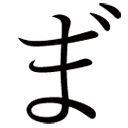
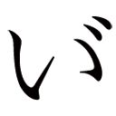

| 帰還した勇者の後日譚 ： 1 (モンスター文庫) | |
| 月夜乃古狸 | |
| 双葉社 (2018) | |
帰還した勇者の後日譚①
月夜乃古狸
お断り
作品の電子書籍化に際し、仕様上の都合により一部の漢字が略字体で、ルビおよび記号等が印刷出版と異なった表記になっている場合があります。
また、作品によっては差別的表現と受け取られかねない表現が使用されている場合もありますが、作品の書かれた当時の事情を考慮し、原文のとおり掲出した個所があります。
あらかじめご了承ください。
底本カバーデザイン・小久江厚（ムシカゴグラフィクス）
エピローグのプロローグ
何かがぶつかり合うかのような轟音が響く。
甲冑を身に纏った男と影としか表現のしようのない、色も形も大きさもはっきりとしないが尋常ではない存在感を持った『何か』が幾度も激しく交差する。
それはまさしく強大な力を持った邪神とそれに立ち向かう勇者の姿。
幾度も幾度も両者はぶつかり合う。その度に邪神の姿は小さくなり、そして勇者の身体は傷ついていく。
既に勇者の左腕は潰れ、血を流しながらぶら下がっているだけの状態だ。
身に纏う甲冑で傷ついていない場所などどこにもない。
「がぁぁ!!」
それでも勇者は残った右腕で大剣を振るう。
「！！！！！！！」
邪神の叫びとも唸りともつかない声が空気を震わす。
どれほどの時間が経ったのだろうか。
時間の感覚すら失いながら、それでもなおぶつかり合う両者。
しかし遂にその均衡は破られる。
「オオオォォォォ!!」
勇者の大きな雄叫びの直後、
「！！！！！！！！！！！！！！！！！」
凄まじい叫びが空間に響いた。
真っ白な空間は幅も高さも奥行きも存在していないかのようだった。
そこに残ったのは、勇者ただ一人。
剣を振り下ろした姿のまま佇んでいる。
そして数瞬の後、ぐらりと身体が傾ぐと、そのまま仰向けに倒れた。
生きてはいる。荒く上下する胸がそれを知らせるが、全身は己の血に塗れ、とても今の今まで戦いを繰り広げていたとは思えない状態だった。
「......くそっ......たれ！ ......もう......二度と......やんねー......ぞ......こんなこと！」
息も絶え絶えに独りごちる。
「終わったみたいね～～」
突然間延びした女性の声が響いた。が、勇者はその声には応えず、そちらを見ることもしない。
「なによ～～、無視することないじゃな～い！」
声の主は不満げに唇を尖らす。
美しいという表現では失礼にあたるほどの美貌を備えた女性。
まるで神話か伝承のなかの女神としか思えない女性を、勇者はチラリと目線だけを動かして睨みつける。
「......こっちの......状態......見てから......言いやがれ......クソ女神！」
......どうやら本当に女神らしい。
「あら～、やっぱり大変だったみたいね～～」
人をイラつかせる口調で言いながら女神が勇者に手を翳す。
勇者の身体に光の粒が降り注ぐと、瞬く間に怪我が癒えていき、呼吸も穏やかなものになる。潰れた腕さえも身につけた鎧ごと元に戻っていった。
呼吸が整うのを待ち、勇者がゆっくりと上体を起こす。
「これで全部終わりってことで良いんだよな」
勇者は女神を睨みつけたまま問いかける。
「そんな睨まなくたっていいじゃない～。そうよ～、これで本当に邪神である『ルエナビリオ』も消滅。少なくとも数千年は復活しないわ～。世界の歪みも少しずつ戻っていくと思うわよ～～」
「んで、俺は本当に元の世界に戻れるんだろうな！」
「大丈夫よ～～！ ちゃ～んと元の世界、元の時間に戻れるようにするから～～！ 少しは信用して欲しいわ～～、ぐすん」
勇者が『嘘だったらタダじゃおかねぇ』とばかりに睨みつけると女神が即座に応じる。ご丁寧に泣き真似付きで......。
「そうか」
勇者からほんの少し険が消える。
「約束通り～、召喚された場所で『送還の儀』をしたら、あとはこっちで調節するから安心して～～」
女神がのんびりとした口調で続ける。
勇者は20歳くらいの若さで、鍛えられ引き締まった体躯は身長１８０センチを超えているだろう。
女神の放った光の粒のおかげで身体と甲冑の傷はなくなってはいるものの、血の跡はそのまま残っていた。
女神は、その姿を慈愛に満ちた表情で見つめ、静かに厳かに言葉を紡ぐ。
「異世界より一方的に召喚されたにもかかわらず、苦しい試練を越え、よくぞ魔王と邪神『ルエナビリオ』を倒し、この世界に秩序と安寧を取り戻してくれました。神の一柱『ヴァリエニス』の名において、あなたに感謝と祝福を」
突然口調と雰囲気の変わった女神に、勇者が少し驚いたように眉尻を上げる。
「......まぁ、こんなことはこれっきりにして欲しいってのと、俺のした努力が無駄にならないようにしてくれ。言いたいことは山ほどあるが、とりあえずはそれでいいさ」
「人の営みに過度に干渉するわけにはいきませんが、できるだけ見守っていきましょう」
女神はそう応じると、勇者の前方に手を伸ばす。光の粒が集まり、目の前の空間が大きく開いた。
「さぁ、間もなくこの神域は閉じます。戻って皆に無事な姿を見せると良いでしょう」
促されるまま勇者は開いた空間を潜る。
そういうしゃべり方ができるんだったら最初からしやがれ、と内心で悪態をつきながら。
通り抜けた先は薄暗い神殿だった。
数人の人影が見える。各々武器を構え、様子を窺っているようだ。男を認識して緊張が解けたのか構えを解いた。
「ユーヤ様～～～～！！！！！」
小柄な美少女が勇者の胸に飛び込んでくる。
「お怪我はありませんか?! こ、こんなに血だらけで！ すぐに治癒を!!」
勇者――ユーヤの姿を見て、なかばパニックになっている少女に、
「大丈夫。もう治ってるよ」
とユーヤは彼女の頭を撫でて微笑むと、その場にいる他の者を見回す。
長身で褐色の肌の美女、ガッシリとした大柄な男、白いローブを纏った美少女、神経質そうな顔をした長身の男。
その誰もが、笑顔とも泣き顔とも取れない表情をしながらユーヤを見つめている。
「終わったのか？」
「ああ、全部終わった」
大柄な男の短い問いにユーヤが答える。
「こ、これで世界は救われたのですか？」
ローブの少女の期待と不安が綯い交ぜになった言葉に、ユーヤは頷きながら、
「ええ、ヴァリエニスの言葉が確かならそうなりますね。後は......姫様や王様達の仕事ですよ」
と、悪戯っぽく軽口で応じる。
「さぁ！ はよう外に出て皆に応えてやらんか！」
褐色の女性が促し、長身の男も同意するように頷いた。
ユーヤ達が神殿から外に出ると、大勢の兵士達が周囲を囲んでいた。
誰もがその顔に疲労の色を浮かべている。血に濡れている者、怪我をしている者も大勢いる。
子供にしか見えない少年兵や孫のいそうな老兵、女性もいる。装備もバラバラで、どこかの国の正規兵らしき甲冑を纏った兵もいれば、山賊か盗賊にしか見えない者、簡素な服に武器とはいえない棒を持っただけの者までいる。
その数はユーヤから見えるだけでも１万を遙かに超えていた。全体で数万にも及ぼうか。
この大陸中のほとんどの国から集まった義勇兵達。
多くの者が邪神の生み出した魔獣の群れとの戦いで命を落とした。
ここにいるのはそんな戦いを生き残り、邪神との戦いに赴いた勇者ユーヤの帰りを見届けるために残った者達だ。
全ての者達の視線がユーヤに注がれる。皆一様に期待と不安の入り交じった表情だ。
誰も言葉を発しない。そこには異様な静けさがあった。
ユーヤはその視線になかば圧倒されつつも何か言おうとするが、言葉が出てこない。
この世界に召喚されて３年、無我夢中で走り続けた。その間の様々な出来事が去来し、胸が詰まったのだ。
だから、ユーヤは言葉にするのを諦め、ただ拳を握り、右手を高く突き上げた。
一瞬の静寂の後、歓声が爆発した。
勇者の帰還
「この部屋とも今日でお別れか」
俺は部屋を見回しながら独りごちる。
立派なデスクと応接セット、奥はベッドルームだ。
落ち着いた感じの調度品が少しあるだけの、王城の中にしては比較的簡素な部屋。
この世界に召喚されて最初の１年間。そして邪神との戦いを終えて帰還してからの１ヶ月。
大した期間でもないが、それでもこの世界では一番長く過ごした部屋だった。
俺の名前は柏木裕哉。
こっちではユーヤ・カシャーギーって呼ばれてる。どうもカシワギってのがうまく発音できなかったらしい。
地球の現代日本からウィルテリアスに勇者召喚された大学生だ。
ちなみにウィルテリアスってのは、この国のある大陸の名前だ。こっちの世界には元の世界の『地球』に該当する言葉がない。
どうやら複数の大陸が存在するらしいのだが、交易をしているわけでもなく大陸ごとで完結してしまっているそうだ。
なので他の大陸に行ったら、きっとその大陸には別の名前があるんだろう。
俺は３年ほど前に突然この国（＆クソ女神）に呼ばれた。
んで、その後、今時そんなのラノベでも採用されないだろ！ ってくらい、テンプレにテンプレを重ねて今に至るってわけだ。
「本当に今日帰ってしまうんですね」
ソファーに座る俺の傍らにちょこんと座る女の子が、そう呟いて顔を伏せた。
普通の人とは異なり、猫の耳としっぽを持つ獣人族。
邪神との戦いを終えた後、真っ先に出迎えてくれた小柄な少女だ。
「ああ。やっぱり俺は元の世界に戻りたいからな。ティアやみんなと会えなくなるのは辛いけど、そのために必死に戦ってきたから」
顔は見えないが鼻をすする音がするので泣いているのだろう。
というか、あれからティアは俺の側から一瞬たりとも離れようとしない。風呂やトイレまで一緒に入ろうとして非常に困った。
風呂は、まぁ、なんだ、ほれ、ともかくとしてトイレは困る。俺にそんな特殊な趣味はないので美少女の前で排泄行為なんかできるわけがない。
何とかなだめすかしてトイレに入るのだが、出てくるまで入口から一歩も動かないのだ。
夜もいつの間にかベッドに潜り込もうとするし、若い男としては精神力をごりごりと削られる日々だった。
「グスン、スン............」
俺がティアの頭を撫でると、ようやく顔を上げる。しかしそこにあったのは涙と鼻水でデロデロになった美少女の顔。
なんというかちょっと残念な感じになってしまっている。
「 」
」
正直ちょっとたじろぐ。
「～ざ～！ どうしても、ほんと～に帰っちゃうんですか～～～？」
「あ、あぁ、ごめんな、ティア」
邪神を倒してから幾度も繰り返されたやりとり。
ティアの気持ちもわかる。
彼女には家族と呼べる者がいない。
俺達と出会う前に獣人族の集落を狙った奴隷狩りに襲撃され、両親と兄弟を失った。そのうえ彼女自身も奴隷として捕らえられてしまった。
偶然俺達が助けることになり、それ以来ずっと一緒に旅をしてきた。
ティアにとって俺達は再び得ることができた家族のようなものなのだろう。
それをまた失おうとしている。
そう考えると罪悪感がとんでもないことになる。
「それでもやっぱり俺の居場所は元の世界なんだ。家族も向こうにいる」
狡い言葉だ。
家族を失ったティアが、こう言われて反論できるはずがない。
「やっぱり私も連れて行ってください。何でもしますから。お願いします」
これも何度も言われたが、それもできないんだよな。
そもそも２人になったときに送還がうまくいくかどうかわからない。第一、猫耳＆しっぽの美少女なんか向こうに連れてったら大騒ぎになるに決まってる。
家族のいないティアを１人で残すのは心配だし、向こうの友人達に見せびらかしたい気持ちもないわけじゃない。だが、先のことを考えると、こっちで自分の人生を歩んだほうが良いと思うのは、けっして独りよがりじゃないはずだ。
罪悪感は半端ないが......。
俺はそれ以上何も言わず、心をこめてティアの柔らかな髪を撫で続けた。
「ユーヤ様、儀式の準備が整ったとのことでございます」
扉の向こうから俺を呼ぶ女性の声が聞こえてきた。
俺は最後にもう一度ティアの頭を撫でると立ち上がる。
ティアも手で涙を拭いながらそれに続く。
そしてもう一度部屋を見回してから廊下へ出る扉を開いた。
部屋を出ると、メイドさん（!!）がお辞儀をして迎えてくれる。
メイドっていっても、某首都圏に出没するメイド服っぽい『何か』を着た半分風俗（すっげぇ偏見）の女の人なんかじゃない、本物のリアルメイド！ パーフェクツな所作を崩さないプロの王宮メイドさんなのだ。
俺がこの世界に召喚されて王宮で過ごす間ずっとお世話をしてくれた（っていっても途中の２年間は、俺は王宮にいなかったけど）とっても優秀な人である。ただ、この人ちょっとだけ困った癖がある。
「ユーヤ様、本当に今日、元の世界に帰られてしまうのですか？」
「あ、はい。帰ります。エリスさんにも本当にお世話になりました。これで皆さんと会えなくなるのは寂しいんですけど、やっぱりあっちには家族もいますし」
「そうですか......結局、一度もユーヤ様は私に手を出してくださらなかったですね」
「？ あ、あのエリスさん？」
「今からでも遅くはありません。そこの空き部屋でほんの１、２分ほどお時間をいただいて、サクッと手を出してくださいませんか？」
「い、いや、あの、聖女様も待っていますし、さすがにそれはマズいんじゃないかと......」
「ああ、もちろんティアさんと一緒でも構いませんよ。ただ、そうなると、もう少し時間が必要になりますね」
エリスさんは俺の後ろで服の裾を握って離そうとしないティアをチラッと見て、そう付け足す。
「で、ですから聖女様を待たせるわけにもいきませんから」
「......残念です」
こういう冗談をちょいちょい飛ばしてくるのが困りもんだ。なんで冗談と思うのかって？
だってこの人こういう台詞をピクリとも表情を変えずに言うんだよ。ってか、１、２分って、さすがにそこまで俺早くないと思うよ！ たぶんだけど、そんなに早くないよ!! 経験はないけどな。
なまじすっごいスタイルの良い美人さんなんで、なおさらたちが悪い。
「はぁ」
「？ 何か？」
「イエ、ナンデモナイデス」
なんか一気に疲れた俺はアホみたいに長い廊下を無言で歩いていった。
先の邪神との戦いから２ヶ月、王都に戻ってから１ヶ月が経過していた。
王都に戻ってきたときの王都民の歓迎ぶりはもの凄く、三日三晩のお祭りが繰り広げられた。帰りの道中でも民衆や貴族から歓待は受けたが、比較にならないほどのはじけっぷりだった。
まぁ、自国が召喚した勇者が魔王と邪神を倒したことで平和を勝ち取った誇らしい感情と、永きにわたった魔族との戦乱に終止符が打たれた安堵感が爆発したんだろうってのは理解できる。
俺も元の世界に帰ることが決まってたから、今更嫉妬だの利害だのって面倒くさいものに巻き込まれる恐れも少ないんで、十分楽しませてもらった。
ちなみに戦いの終わった日と凱旋した日は、祝日として来年以降祭りが行われるらしい。どっちか片っぽで十分な気もするが、俺には関係ないのでいいか。
んで、今日まで帰還が延びていたのは、一緒に旅を続けてきた聖女様（戦いの後に最初に出迎えてくれた１人で、白いローブを纏った美少女さんね）の疲れを完全に癒す必要があったのと、星の並びやら何やらで（ご丁寧に月星暦省――星や月の運行で暦を定めたりするこの世界では結構重要なお役所――の偉い人が説明してくれたんだけど、完全に理解不能だった）この日になった。
まぁ、ここまできたら多少帰るのが遅れても大差はないし、確実に帰れそうだっていう安心感もあって、俺も初めての王都観光を楽しんだ。
なんせ、前に王都にいたときは生きて帰るために、必死に訓練だの勉強だのをしてて王都見物なんか頭になかったし。
ちなみに、この国――アリアナス王国の国王陛下には、このまま国に残るなら恩賞として領地と爵位を与えると残留を勧められたんだけど、さすがに断った。
やっぱり日本に帰りたかったし、勇者だの英雄だの呼ばれる俺が王国の家臣として仕えたってロクなことにならないのが目に見えてる。
美女の側室を何人でも選び放題って言われたときに、ちょっと、いや、かなり心がぐらついたのは秘密だ。多分表情には出てはいない、はずだ。
そんなわけで戦いの褒賞にはその代わりとして、ずっしり重い山盛りの金貨をもらってしまった。
これも戦後復興に資金が必要だろうと最初は遠慮した。だけど、魔王＆邪神を倒した俺が何の褒賞も受け取らないと他に戦功のあった人が受け取れなくなってしまうと言われ、いただくことにした。王国金貨はほぼ純金製らしいので、ぶっちゃけ嬉しいっちゃ嬉しい。
......けど、よくよく考えてみたら日本に戻っても入手方法を説明できないから売れないじゃん......。
しばらく歩いて、召喚の塔がある王城の中庭に到着する。
そこには大勢の騎士達が整然と並んでいた。
「世界を救った英雄に敬礼!!」
騎士団長さんのかけ声を合図に、中庭を埋め尽くした騎士達が一糸乱れぬ動きで俺に敬礼する。
......ビビった......。
いや、かなり照れくさいってか、恥ずかしいんすけど。
なに、あなた達これ練習してたの？
ちょっと視線を巡らすと、見知った顔の騎士達が露骨にニヤニヤしながらこっちを見ていやがる。くそったれ。
塔に向かって一歩踏み出すと、騎士達は道を造るように整列する。
塔の前には国王アリウス陛下と王妃レフィーア陛下、レオン王太子殿下、そして邪神の神殿で最初に俺を迎えてくれた仲間達がいた。
そのまま歩みを進め、国王・王妃両陛下の前で膝をつく。
「礼は不要だ。立つがよい」
「畏れ入ります」
その言葉に従って立ち上がると、アリウス陛下が俺に近寄り、話を続ける。
「で、やはりこの国に残ってはくれんか」
「陛下、そのお話は何度もお断りさせていただいたはずですが」
「メルスリアでは駄目か？ ......やはり胸が足らんか......ではエリスも付けよう！ どうだ！ エリスなら胸も尻も中々のものだと思うぞ」
陛下が身振り手振りを交えながらぶっ飛んだ発言を繰り出す。......陛下、手つきがイヤラシいです......あと、王妃様が青筋立ててます......。
「ユーヤ・カシャーギー殿。異世界の人である貴方に過ぎた責任を押しつけてしまったこと改めてお詫びします。そして、貴方が成し遂げた偉業を我が国の民を代表して感謝します」
そう言いながら王妃様が俺に対して頭を下げた。
「い、いえ、お願いですから頭を上げてください」
俺は慌てて言った。
元の世界じゃどうか知らないが、こっちの世界では王侯貴族が平民に頭を下げるなんてのはあり得ない。感謝や謝罪を口にはしても頭を下げることは『権威を損ねる』として絶対にしない。良いか悪いかではなく、そういう文化だ。
それは別に見下してるってことじゃなくて（もちろん平民や小国の貴族などをナチュラルに見下す貴族もいるが）、その必要があるときは保障や賠償、恩賞で表現するっていうのが、この世界の常識なのだ。
「そうですか。わかりました。......でも、私も本当は貴方にこの国に留まって欲しいと思っているのですよ」
王妃様はそう言うと柔らかく微笑んだ。
あの、王妃様が王様の足を思いっきり踏んづけてグリグリしてるから、王様声も出せずに悶えてますけど......その細いヒールは立派な凶器だと思います......。
「ひょっとしたらお前が義弟になるかもしれんと思ったのだがな」
今度はレオン王太子殿下が歩み寄ってくる。
銀髪長身の超イケメンだ。文武両道のイケメン王子ってどんな乙女ゲーだよ。......決して僻みじゃない！ はずだ！ 多分......。
「殿下までそんなことを言い出しますか」
ちょっと顔を引き攣らせながら応じる。何だってここの王族はみんなして人に女を宛がおうとするんだよ。
「なに、お前がいなくなったら少々退屈になるかと思ってな」
「人で暇潰しをしないでください」
俺がため息をつくと、殿下は笑いながら後ろに下がった。
ちなみにその間、国王陛下は足を押さえて蹲っていた。
騎士達の前なのに国王陛下の扱いがかなり酷いが、普段は洞察力に優れ思慮深く、時に果断に、時に慈悲深く、人心を掌握する術を備えている、いわゆる名君である。
ただ時々変にはっちゃけては悪ふざけをし、王妃様にお仕置きされている。
騎士達はそれを度々目撃しているので慣れているのだ。
そんな姿を見られているにもかかわらず陛下に向ける忠誠は揺らいでいないのだから、これも才能だろうか。もっとも、わざとやってるようなときもあるけどな。
仲間達にも目を向ける。
「世話になった」
大柄な厳つい顔をしたブルーノ・レッグが声をかけてくる。
アリアナス王国の騎士で、極端に無口だが常に冷静沈着で頼りになる30歳くらいの男だ。
勇者として召喚された直後から武器の扱い方を教えてくれたし、旅についてきてくれた。
「そりゃ、こっちの台詞だな。何度も助けられた。本当に世話になった。ありがとう」
俺がそう言うと、ブルーノはほんの少し笑みを浮かべる。
「身体に気をつけろよ。大変だったが俺も楽しかった。娘に自慢できる」
「？」
マジ？ ブルーノ結婚してたの?? ３年も一緒にいたのに聞いてないんすけど?!
俺が地味にショックを受けてると、隣にいた金髪イケメンも声をかけてきた。
「最後まで締まらん顔だな。民衆が見たら、さぞ幻滅するだろうよ」
「うるせ～よ」
この男はイルヴェニア皇国の天才（自称）魔術師のウィスパー・ランス。皮肉屋で口は悪いが別に嫌な奴ってわけじゃない。割と歳が近いんで、話をした時間は仲間内で一番長いだろう。
旅の途中で聖女様達の沐浴を一緒に覗こうとして折檻されていたのは良い思い出だ。俺がさっさと逃げたんで１人で犠牲になったのをしばらくグチグチ文句言ってたが。
それでも俺が一緒にいたことをばらさなかった、とても良い奴である。
「ウィスパーにも世話になった。元気でな」
「ふん！ 僕を裏切ってさっさと逃げた薄情者など、とっとと帰るがいいさ」
まだ根に持ってるのかよ......。
一通り挨拶を終えて、改めて両陛下に向き直る。
「これまで本当にお世話になりました。どうか御身を御大切に」
「うむ。そなたもな。最後に何か望みはないか？」
「１つだけ。どうかティアのことをよろしくお願いします」
本当にこれだけだ。
こっちの世界のことは、これからこの世界の人達が懸命に立て直していくだろう。それについてはそれほど心配していないし、俺が口を出すことでもない。
ただ今も俺の服の裾を離そうとしないティアのことだけが心配だ。
一応、今後は聖女様付きの侍女として働くことになっているのだが。
「心配いりませんよ。ティアのことはメルスリアも妹のように可愛がっていますし、私達も同様です」
王妃陛下が微笑みながら、そう請け合ってくれた。
「ティア。元気でな」
俺は最後にもう一度ティアの頭を撫で、裾を掴んでいる彼女の手をそっと外す。
ティアも抵抗することなく離すと、潤んだ瞳で俺をじっと見た。
「ユ、ユーヤ様、もし、またこの世界に来ることがあったら、そのときは私に会いに来てくださいね」
その言葉に俺は頷いた。
それからも短い時間ではあるが、見知った人達と言葉を交わし合う。
ちなみに、仲間はあと２人いて、そのうちの１人は召喚の間で待っているはずで、もう１人は王都に凱旋する前に『人混みは嫌いじゃ』とか言って、住んでいたところに先に帰って行った。
「では、お世話になりました」
俺はみんなに頭を下げ、ようやく召喚の間のある塔に足を踏み入れた。
......やべぇ、泣きそう......。
塔に入ると正面に大きな扉があり、両脇に控えた衛兵が開けてくれる。
扉を潜ると石畳の滑らかな床に大きな魔法陣が描かれた広間に出る。
その魔法陣の手前に白いローブを着た女性が待っていた。
「遅くなって申し訳ありません、聖女様」
「構いませんよ。送還の儀を行う時間には、まだ余裕がありますから。皆さんの気持ちもわかりますし」
俺の謝罪に女性、アリアナス王国第２王女であり、聖女でもあるメルスリアがそう応えてくれた。
「それに、今まで通りメルと呼んでください。ユーヤさんにそのような口調で話されると、何か気恥ずかしくなってしまいます」
そう言ってメルは柔らかく微笑んだ。
くそ、相変わらず可愛いなぁ～、ちくしょうめ！
「それにしても」
メルが俺の姿を見返すと、どこか懐かしそうに言う。
「ユーヤさんのその姿は召喚のとき以来ですね」
今の俺の格好はもちろん甲冑姿でもなければ、こっちの世界の平民の服でもない。
Ｔシャツにパーカー、カーゴパンツにスニーカーという日本のごく普通の格好だ。
本当はパーカーの下に綿のシャツも着てたんだけど、こっちで鍛えまくったせいで身体のサイズが変わってしまい、着られなくなったのだ。無理に着ると某暗殺拳の伝承者の如くシャツが弾け散ることになりそうだった。
「取っておいてくれて助かったよ」
「全てが終われば帰れると女神様にはお聞きしておりましたから、そのくらいは当然ですよ」
そう笑ったあと、メルは少し表情を引き締める。
「本当ならばユーヤさんには関係のないウィルテリアスの問題に巻き込んでしまったこと、そしてそのことを恨むでもなく私達の我が儘を叶えてくださったこと、その御恩は決して忘れません。ユーヤさんが護ってくださったこの世界を私達は必ず復興してみせます」
メルは深々と頭を下げ、それから悪戯っぽく笑いながら、
「実は私も夫としてユーヤさんが残ってくださることを期待していたんですけどね」
と続ける。
オゥ、メルスリアさん、あなたもですかい。
何だって今になって、そんなこと言うんですかねぇ。
魔王＆邪神討伐の旅の間には、そんな隙、微塵も見せなかったクセに......。
もっと前にそう言ってくれてたら......って、何も変わらんな。一国の王女を嫁に迎えるなんて俺には無理すぎる。
「そろそろ時間ですね。では送還の儀を始めましょう」
メルが俺に魔法陣の中央に行くように促す。
「いろいろありがとう。大変だったし辛いこともあったけど、楽しかったよ」
そう言って笑いかけると、メルが一瞬泣きそうな表情をするが、それでもすぐに笑顔を見せた。
「私も楽しかったです。お元気で。......でも！ 覗きは駄目ですよ！」
バレて～ら......。
俺が魔法陣の中央に立つと、メルが呪文の詠唱を始める。
そして、俺を光が包み込んだ。
一瞬の浮遊感の後、光が消え、俺は元の世界、日本に帰還した。
勇者の魔法
俺を包んだ光が急速に消えていく。
そして完全に光が消えたとき、俺は召喚の間ではない場所にいた。
あたりを見回す。６畳ほどの部屋の壁には日本の道路地図や関東の地図、ホワイトボード、ロードマップの並んだ書架、工具棚や様々な部品、オイルなどが雑然と並んでいる。中央に長机が２つ、その周りにパイプ椅子が適当に置かれている。
どう贔屓目に見ても片付いているとは言えない小汚い部屋だが、間違いなく俺が異世界に召喚される直前にいた大学のツーリングサークルの部室だ。
懐かしさのあまり泣きそうになるが、以前よりも随分と天井が低い。
あれ？ ここって、こんなに天井低かったっけ？
と思ったら、何故か俺はパイプ椅子の座面に立ってた。
あ、そっか、召喚されたとき俺は椅子に座ってたんだっけか。
んで、向こうに着いた途端、後ろに盛大にひっくり返って、後頭部をぶつけた覚えがある。
ちょっと恥ずかしい気持ちを抑えながら椅子から降りる。
良かった。部室に誰もいなくて。
もし誰かいたら、いったいどう見えたんだろうか。いきなり消えて、次の瞬間椅子に立ち上がってあたりを見回す涙ぐんだ男。
うん！ どん引きする自信があるね！ 我ながら嫌すぎる。
机の上に置かれていた俺のスマホの画面をＯＮにして日付を確認する。
一応あのクソ女神が同じ場所同じ時間って言ってたから大丈夫だとは思うけど、いまいち信用しきれないからな。
スマホに表示される日付と時間を確認してホッとする。
間違いない。夢にまで見た元の世界と日付・時間だ。充電も切れていないから１年ずれてたなんてオチもないだろう。
ただ、ちょっと心配なのが、俺がいろいろ憶えているかってことだな。
友達やサークルの先輩後輩、バイト先のよく話す人は大丈夫だと思うけど、講義くらいしか顔を合わせない奴や教授達、それほど親しくない人なんかはかなり不安がある。顔も名前も。
一番ヤバイのは大学の勉強関係だ。異世界にいたときは欠片も思い出すことなんかなかったから相当頑張らないと進級できない可能性がある。いや、単位は結構ちゃんと取ってたはずだから多少は余裕あるだろうけど、前期考査は全滅かもなぁ......。
スマホのスケジュールを確認して記憶を掘り起こす。
今日は特に予定はないようだ。にもかかわらず何故部室にいたのかは憶えてないが、まぁ、予定がなくても適当に部室で暇を潰すことも多かったから不思議でもないな。
こういうときはやたらと何でもスマホにメモしてた自分の癖が有り難い。
全て３年前の自分の記憶頼りなんて絶対に無理だ。ラノベの主人公達はいったいどうしてたんだろうか......ほとんど帰ってないのか？
それはともかく。さっさと懐かしの我が家へ帰るとする。
その前にマッ○にでも寄ってチープなチーズバーガーとポテトのセットでも食おう。
いや～、特に好きだったわけじゃないけど、異世界じゃ絶対に食べられなかったから何度も夢に出てきたんだよね。ジャンク＆ファストフード。明日はケン○ッキーでも行くかな。
今後の予定を考えながら、部室に置いてあった俺のヘルメットとデイパックを持って部室を出た。
大学の門の近くにある二輪＆自転車置き場に着くと、（俺にとっては）懐かしい奴が原付スクーターに乗って何やらボーッとしていた。こちらの気配に気がついたのだろう、すぐに声をかけてくる。
「裕哉じゃん。帰り？」
「あ、あぁ、......久しぶり」
何とか表情を変えないように全精力を傾けて応じると、ジト目でこちらを見返してきた。
その表情も懐かしくて思わず泣きそうになる。
こいつは工藤茜。中学のときからの腐れ縁で、学部は違うものの大学まで同じ、結構気の合う友人だ。
ら○ま１／２のヒロインと名前が似ている気もするが、あんなに暴力的ではない。
ルックス・スタイル共に中々で、性格もサバサバしているためか昔から男子達の間で結構人気があった。
俺と付き合ってるなんて噂が流れたこともあったらしいが、実際はそういった色気のある方向に行ったことは一度もない。
「一昨日会ったばっかりだと思うけど？」
「そうだっけ？」
動揺を隠しながら何気ないふうを装う。
ゴメンなさい。俺にとっては３年ぶりなんです。思わずハグしたくなるのを必死で堪えてるんです。勘弁してください。
俺がそんなふうに脳内会話をしていると、茜は俺をジーッと見て、
「裕哉、何かあった？」
と突然聞いてきた。
「何かって何だよ？」
答えようがないので質問を質問で返す。
「んー、顔つきとか雰囲気とか？ いきなり変わった気がする」
「気のせいだろ？ 人間そんな急に変わんねーよ。特に何かあったわけでもないしな」
「そっかな～......もしかして、彼女でもできた？」
と茜はいきなり斜め上の発言をかます。
「ぶっ！ アホか！ んなわけあるか！」
「そ～だよね～。彼女いない歴＝年齢の裕哉にそんな甲斐性あるわけないし」
茜さん、随分失礼な発言してくれますね。まぁ、実際彼女なんていないし異世界でもできなかったけど......。
「彼氏いない歴＝年齢の茜さんには言われたくありませんねぇ」
「失礼ね！ 私は彼氏ができないんじゃなくて作らないだけです!!」
男も女も付き合ってる相手がいない奴はみんなそう言うんだよ。
俺は違う！ できないだけだ!! ......ちくしょう......。
「へぇへぇ、そりゃ悪うございました」
久しぶりの茜とのこういう会話も楽しいが、今日はボロが出ないうちに退散することにする。
「じゃあ俺寄るとこあるから帰るよ」
「どこ寄る気？」
「マッ○。急に食べたくなったんでな」
「私も行く！ 最近行ってないし」
Ｗｈｙ？ マジ？ なんで??
「駅前のマッ○でしょ？ 先に行って席取っとくから」
そう言って茜は俺の返事も聞かずにスクーターを走らせていってしまった。
どうしてこうなった？
そんなことを思わないでもないが、しかたない。俺もバイクを走らせることにしよう。
ホンダＣＢ２５０Ｆ、俺の愛車だ。
高校のときに普通自動二輪の免許を取って、必死でバイトして中古でコイツを買った。
久しぶりの感触にテンションが上がるが、スピードは上げないように気をつける。俺的時間で３年ぶりだし、馬よりかなり速いからね。帰ってきた早々に事故なんて洒落にもならん。
店に着くと、既に席を確保した茜が小さく手を振っていた。
「遅いよ」
お前が早すぎるだけだろ。
文句を言いたいが、何倍になって返ってくるかわからんから口には出さないけどな。
さっさとカウンターで注文の品を受け取り、茜の向かい側の席に座る。
「......やっぱり裕哉、変わった！」
「またかよ」
「雰囲気とか、歩き方とか。それと何か体型も違う気がする。雰囲気も」
いや、雰囲気２回言ってますけど。
それにしても茜が鋭すぎる。女ってみんなこうなのか？ 男の浮気は女の人にはすぐバレるなんて聞くけど（いや、そんな経験なんぞ一度もないし、そもそも浮気じゃないけど）、さてどうやって誤魔化すか。
「最近鍛えだしたから、そのせいでそう見えるんじゃね？」
「そ～かな～......」
茜は納得いかなげだ。
「......ひょっとして、惚れたか？」
わざとらしくニヤニヤ笑いながら吹っかけてみる。
「はぁ？ アンタ目からコーラ飲みたいの？」
こっちを睨みながら物騒なことを言いやがった。
茜さん、普通の人は、目でドリンクは飲めませんよ？
あんまりからかうと本当に実行しそうなんでやめておく。別に怖かったわけではない。けっしてない。
とにかく茜を気にするのをやめて本命であるハンバーガーを齧る。
注文したのは極々オーソドックスに普通のハンバーガーとチーズバーガー、ポテトのＬサイズにコーラだ。
齧ると口に広がるパサついたハンバーグと何の変哲もないケチャップの味。
実際美味いかどうかでいえば美味くはない。
それでも何とも言えない懐かしさと喜びで胸がいっぱいになる。
「ちょ、ちょっと？ なんで泣いてるのよ！」
顔に出していないつもりが涙が出ていたらしい。
ちょっと恥ずかしい。
「......マスタード入れすぎ」
誤魔化す。......いや、マジで今鼻にツーンときた。
これも嘘から出たまことというのか？ ......違う気がするが。
その後は茜の追及もなく、たわいのない、それでいて夢にまで見た馬鹿話をしてから茜と別れて帰宅する。
こっちの世界の友人と話す時間が無性に嬉しくて、つい長話になってしまった。
......ボロ出してないよな？ 俺......。
久しぶりの我が家は何も変わっていないようだ。
周囲は既に薄暗くなってきている。だいぶ日が長くなってきたとは言っても、もう７時近いから当然か。気分的にはもうちょっとノスタルジーにひたりたい気がしないでもないが、はたから見ると変質者に思われそうなので程々にしておこう。
バイクをガレージに入れて家に入る。
家の中は結構暗かったが、異世界で夜目が鍛えられ、十分見えるから問題はない。
スマホで確認した予定では、母さんは今週準夜勤だからいないし、亜由美は部活かな？
家には誰もいなかった。
親父？ 単身赴任で海外です。今は中東だったかな？
異世界に行ってた期間を除いても１年は会ってない。そもそも多くても年に数回しか会わないんだよなぁ。
顔、憶えてる自信がねぇ......。
階段を上って自分の部屋に入る。かなり暗い。
さすがによく見えないから、俺は『ライト』の魔法を使って明かりを灯す。
自分の部屋を見回し、じわじわとこみ上げてくる帰ってきたという安堵感に身を委ねる。
机にデイパックを置き、そのままベッドに倒れ込む。
懐かしい自分の部屋の匂い（臭いじゃないよ）に笑みが零れる。
そして、改めて部屋を隅々まで見回して、固まった。
思わず叫ぶ。
「なんで魔法が使えてるの?!」
部屋の天井近くに『ライト』の魔法で創った光球が浮かんでいた。
一瞬頭が真っ白に。
いや頭髪じゃなくて意識のほうな。
当然だろ？ 完全に想定外だよ！
ＯＫ。とりあえず落ち着こう。
まずは深呼吸だ。
「ヒッ、ヒッ、フー。ヒッ、ヒッ、フー」
うん、当然のようにベッタベタなラマーズ法だね。
大丈夫！ ノリツッコミができる程度には冷静だ。
とりあえず、『ライト』以外の魔法が使えるか確認をしよう。
部屋を燃やすわけにもいかないから、極々小さな『ファイヤ・ボール』を出してみる。
......出るな......。
次に、風魔法を使ってみる。
......うん、机の周りがめっちゃくちゃになったね......。
さらに『鑑定』の魔法を、俺の大学入学祝いに親父が海外で買ってきてくれた腕時計にかけてみる。
『鑑定』
タ○・ホイヤーのリストウォッチ（偽物）
主にアジアやＥＵ、中東等で出回っている粗悪品
軽くぶつけただけで防水機能は失われる。
取得額８００＄ 商品価値12＄
............うぉい！ 親父しっかり騙されてるよ！
結構大事にしてたのに。しかも約１２００円かよ！
頼むから正規店で買ってきてくれよ......俺に渡したときのドヤ顔は何だったんだよ......。
かなり落ち込んだが、お陰でちょっとだけ冷静になれた、気がする。
気を取り直して自分のステータスを確認することにした。ってか、普通まず最初に気がつけよって感じだけどな。
「ステータス」
俺が小声でそう唱えると、ウインドウが視界の隅に入ってくる。
レベル ８７６
ＨＰ ８９１０／８９５０
ＭＰ ５４７５／５４９０
力 ９５０
素早さ ９００
知性 ８６０
体力 ９６５
運 ４５０
攻撃力 ７３０
防御力 ６５５
スキル 魔法（火・水・風・土・光・闇・空間・重力・治癒・従魔・付与）
うん、とんでもないね。
俺の記憶よりもレベルが１００近く上がってるが、これは邪神を倒したからだろうなぁ。
こっちの普通の人のステータスなんてわからないから数値は何とも言えないけど、魔法のスキルがあるってだけで普通じゃない。
次にアイテムボックスも確認する。
アイテムのウインドウも無事（？）開ける。武器防具やらポーションやら異世界で入れた物が残らず表示される。......あ、王国に聖剣返すの忘れてら......。
いや、おかしくね？
テンプレ通りなら、こっちに帰ってきた途端力も失って、そのうち異世界の記憶も薄れて『夢だったのかもしれない』とか思いながら日常に戻っていく、ってのが普通だよね。だよね。
よし！ 何がきっかけか、異世界での記憶を掘り起こしてみよう！
えっと、まず、大学の部室に１人でいたときに聖女様に召喚された。それに力を添えて『収納』と『鑑定』、『言語理解』だけでロクなチートもつけずに厄介ごとを押しつけたのがクソ女神ヴァリエニスだ。そのときに「世界を救ったら、ちゃんと同じ場所、同じ時間に帰す」って言われてアリアナス王国に強制転移。
１年間王都で早朝から深夜まで武術や戦術に様々な技術、魔法関連や地理歴史の特訓＆勉強を必死でこなした。
その後、魔族と戦いながら仲間達を加えて大陸各地を解放していき、遂に魔王の居城で魔王をフルボッコ。倒したのは良いけど、実は魔王は単なる傀儡で黒幕に邪神ルエナビリオがいることをクソ女神ヴァリエニスが告げる。
邪神を倒すにはさらなるレベルアップと、いくつかの封印を解かなければならず、苦労に苦労を重ねてようやく邪神ルエナビリオを倒すことに成功。そして、王都に凱旋した俺は、無事元の世界に戻ってくることができた。......今ココ。
......うん、さっぱりわからん。
そもそも、最初から最後まで、某有名ＲＰＧ丸パクリなテンプレストーリーを踏襲しておきながら、エピローグでテンプレ外すってどういうことよ！
考えられるのは、あのクソ女神がまた何かやらかしたってことくらいだけど、今となっちゃ確認のしようがない。
まぁ、魔法を使わなきゃ良いんだろうけど、異世界でとっさにでも使えるように訓練しちゃってるし、魔法なんて便利すぎるものを絶対に使わないなんて言えるほど忍耐力、精神力に自信がない。
とにかく、魔法やアイテム関係を全部使えるかとか、身体能力の検証もしておいたほうが良いだろう。
どうにかして誰にもバレないようにしないとヤバそうだ。
けど、俺、嘘が下手なんだよなぁ、特に茜や妹には嘘をついても、いつもすぐにばれた。流石に魔法とかは想像の斜め上だろうから多少は誤魔化せるとは思うが......。
「はぁ～～～～」
とりあえず、今は考えてもどうしようもないから気分を変えよう。
まずは、部屋の電灯をつけて『ライト』の魔法を消す。散らかってしまった部屋を適当に片付けてから着替えるために服を脱いだ。
ハーフパンツを穿いて何気なくクローゼットに付いている姿見を見る。
久しぶりに自分の身体を見ると、３年前とは明らかに体型が違う。
異世界では大きな姿見とかなかったから自分の体型を気にしたことがなかった。
全体的に引き締まって筋肉でビルドアップされてる感じ。
特に下半身と肩回り、腕の太さがヤバイ。ボディビルダーみたいな不自然な筋肉じゃなく、みっちりとしなやかな筋肉が覆っている。肉体労働者をシャープにした感じ。
しかも、身体のあちこちに傷跡が残ってる。魔力の消耗を避けるために動きに支障のない怪我はロクに治療なんてしなかったからな。まぁ、元々バイクでコケた傷も結構あったし、大して気にしない。男だし。
ナルシーの気はないと思うんだけど、ちょっと自分の体格が格好良く見えた。見せる相手がいないのが残念だ。
コンコン、ガチャ。そんな音と共にドアが開く。
いや、ノックの意味がまるでないじゃんか。
入ってきたのは妹の亜由美だ。春なのに黒く日焼けしている。いや、シ○ル・マツ○キほどじゃないけどね。
水泳部とはいえ、将来シミに苦しめられそうな気がする。どうでも良いが。
「兄ぃ、お腹すいた」
開口一番そんなことをのたまいやがったぞ、この妹は。
「俺も帰ってきたばかりだから、ちょっと待ってろよ。それと、ノックと同時に入ってくるな！」
「兄ぃに彼女ができたら考える。......10年後くらいに」
ちょっと待て。それは彼女ができてから10年後に考えるってことか、それとも俺に10年は彼女ができないってことか、どっちだ？
俺が亜由美の非常に気になる発言に動揺していると、亜由美が俺をジーッと見てくる。
「兄ぃ、何かヤバい薬でドーピングでもした？」
「するか！」
微妙に鋭いような、そうでもないようなことをのたまう亜由美に表面上なんとか繕う。
これ以上このことを引っ張られるのも困るので、さっさとＴシャツを着て夕食を作るために部屋を出た。
家は母さんが看護師なんで不在のことが多く、昔から家事は俺がすることが多かった。
台所に立ち、とりあえず冷蔵庫の中を確認する。
牛肉とタマネギ、他に味噌汁の具になる食材を取り出す。ご飯もしっかり炊けてる。
よし！ 簡単だけど牛丼にしよう。ご飯を食べるのも３年ぶりだからテンション上がるね。向こうはほとんどがパンで、少し麺類があったけど米はなかったんだよな。食事自体は結構美味しかったけど、ご飯が食べられなかったのが、日本人としては相当辛かった。
準備をしていると、亜由美がダイニングテーブルからじっとこっちを見て、出来上がるのを待っていた。手伝う気はまったくないらしい。考えてみれば、コイツはそういう奴だった。
兄として妹の将来が不安になる。
「先に風呂でも入ってきたらどうだ？」
「シャワー浴びてきたから」
俺の勧めに亜由美がそう答える。何か非常に誤解を呼びそうな返答だが、まだ中学生のコイツにソレはないな。......ないよな？ な？
まぁ、彼氏とか仲の良い男友達とかの話は聞いたことないし、その気配もないから大丈夫か。
身贔屓かもしれんが、まだ中学生とはいえ見た目は悪くないと思うんだけどな。
ただ無愛想だし、インドア派だし、割と俺にべったりだし。
うん、きっと学校でもそんなにモテたりしてないだろう。そのはずだ。
微かな殺気を感じて視線を上げると、亜由美が箸を投げつけてきやがった。
人差し指と中指で挟んで受け止める。
「あぶねぇな！」
「すっごく失礼なことを考えてた」
「勝手に心を読むな！」
「フン！」
亜由美は不満げな表情で俺を睨みつけると、そっぽを向いてテレビの電源を入れた。
まったく、危うくとっさに投げ返しそうになったぞ。北斗○拳じゃあるまいし、そんなことしたら怪我するっての。戦闘が身体に染みつきすぎているから、しばらくは油断しないでおこう。自重、自重。
食事が出来上がり、亜由美の向かい側に座って食べる。
ヤベェ、美味すぎる。泣きそう。
表情に出さないように必死に堪えながら牛丼を頬張り、味噌汁を飲む。
終戦直後じゃあるまいし、白飯（銀しゃり）で泣くわけにはいかん。これ以上妹に変な人を見る目を向けられたくはない。
異世界でも野営のときなんかは料理してたから、さほど腕は落ちていない。
亜由美の学校の愚痴やら部活の話を適当に聞きながら食事を終え、風呂に入ることにする。
洗い物は妹が担当なんで丸投げだ。
終わったら後は適当に過ごすだろう。
部屋で明日以降の予定を確認してから大学の勉強の復習をしていると、母さんが帰ってきたので牛丼と味噌汁を温め直して出してやった。
母さんは特に俺に違和感を覚えていないようだった。よしよし。
異世界とは体感時間が５時間近くずれてるからあまり眠気はないが、身体を慣らすため早めに眠ることにする。
『眠れないかな』と思っていたのに、ベッドに入ってすぐに記憶が途切れた。
うん、どうやら結構疲れていたらしい。主に精神的にね。
とりあえず明日は大学を自主休講して魔法とアイテムボックスの検証をしてみよう。
どうせ今の状態じゃ講義についていけないしな。
翌日早朝、魔法を人に見られるわけにもいかないので、人の住んでいないだろう山の中にバイクでやってきた。
奥多摩近辺をバイクで行けるところまで行き、道が途切れてからは徒歩でさらに登っていった。
そこでわかったのは、やっぱりフィジカル面がおかしなことになってること。
相当な速さで道のない山の中を歩いても息切れ一つしないし、疲れもない。ってか、気をつけないと力を入れて踏み込んだときに地面が抉れて大穴が開く。身体強化してない状態でこれってヤバすぎるだろ。
この分じゃ異世界にいたときと同じ、ステータス通りの身体能力で間違いなさそうだ。
Ｗｏｗ!! オリンピックで金メダル総ナメにできるな。確か、１００メートルの世界記録がトップスピードで時速40キロちょいだっけ？ 今の俺なら平均時速60キロ以上で数十キロは余裕で走れるし、垂直跳びで５メートルはいける。
うん、間違いなく人間辞めてるね。
微妙に鬱な気分になりながらさらに進むと、木々が灌木になり、見晴らしが良くなる。
急に高い木がなくなって岩肌が剥き出しのところも多い。標高はどれくらいなのかね？
麓や山道から死角になる場所を探す。
峰と峰の谷間になっているちょうど良さそうな場所を見つけたので、ここで検証をしてみようと思う。岩ばかりで植物がほとんどないのも都合が良い。環境破壊は良くないからね。
......既にこの時点で魔法が使えることを前提として考えてるのが、何とも......。
まずは、足場を確保するために地魔法を使って地面を均す。そして一抱えはありそうな岩を重力魔法で３メートルほど離して設置。
『ファイヤアロー』『アイスランス』『ウォーターバレット』なんかを一通り試す。
異世界にいるときとまったく同じ感覚、同じ威力で使えることを確認して、
「はぁ～～～～～～......」
盛大にため息を吐いた。
いや、何かさぁ、ラノベとかだと地球は魔力？ 魔素？ とかそういうものがほとんどないから魔法が使えないし、使えても威力は低い～、みたいな感じでしょ？
俺もそれを期待してたわけよ。
確かにね。そりゃ俺だって必死に、それこそ死に物狂いで身に付けた魔法が使えなくなったりしたら、結構寂しいよ？
でもさ、明らかに日本じゃ魔法なんて過ぎた力だよね。
日常生活は科学の力で異世界とは比較にならないくらい快適だし、犯罪はあっても魔物や魔獣はいないから普通の人が危険を感じることなんてほとんどない。
魔法が使えるのは便利かもしれないけど、もしバレたときのことを考えるとリスクが大きすぎる。完全に信じる奴は少ないかもしれないけど、それでも騒ぐ奴はいるだろうし、利用しようとする奴も出てくるに違いない。
いくら強くて魔法が使えても、俺が１人でできることなんて、たかが知れてる。家族や友達も巻き込むことになるだろうし、法律や情報技術の進んだ現代社会じゃ、異世界みたいに力業で解決することもできないだろう。
よし！ 魔法はできるだけ使わないようにしよう!!
......え？ 最初と変わらないって？ ......世の中そういうもんよ？
若干肩を落としながら次にアイテムボックスの確認をする。
ウインドウに表示されるものの中から適当に出し入れすると、こちらも異世界のとき同様に使えることがわかった。
アイテムの効果なんかは検証のしようがないけど、使うことなんてまずないだろうから、まぁ、いいか。
だって、武器なんて持ってるだけで捕まるだろうし、甲冑やその他の防具に至ってはコスプレか末期の厨二病患者認定間違いなしだろうね。イタすぎる。
他にもドラゴンの鱗や牙等の魔物素材、ミスリルやオリハルコンの塊、魔石や神結晶なんかに至っては謎物質すぎて迂闊に人に見せられない。自然科学分野の常識がひっくり返りそうだ。
宝石や貴石、金貨・銀貨、その他の宝物もあるし、地魔法の錬成を使えば加工もできるだろうけど、入手方法を説明＆証明できるわけがないから文字通り宝の持ち腐れにしかならん。
売ることができたら数億～数十億円くらいになりそうなんだけどなぁ......少量ずつ加工してネットで売ればバレないかな......。
ポーション類や毒消し、状態異常解除薬、エリクサーまであるけど、これも使い道はないだろう。こんな怪しい薬を飲む奴がいるとは到底思えない。怪我をした動物とかがいたら使ってみるのも良いかもしれないけどな。
もしエリクサーなんかをこっちの材料で創ることができたらノーベル賞が確実に獲れるだろうね。なんせ瀕死でも全快できるんだから。いや、試さないよ？ ちょっと想像してニヤニヤするだけで。
とりあえずほとんどのものはアイテムボックスの肥やしにすることに決定。
出すにはヤバすぎるものばかりだし、収納量にも上限はないから不都合はない。
どうやらこっちの世界の物品も出し入れすることができるようだから、バレなければかなり便利なんだろうけど、どうするかね。
あらかた検証が終わったが、最後に試しておかなければならない魔法が残っている。
『召喚魔法』
俺が異世界に呼ばれたときのものじゃなくて、従魔契約をした魔物を呼び出す某有名ＲＰＧでもお馴染みの魔法だ。
『召喚魔法』とは『従魔』と『空間』の複合魔法で、異世界ではかなり重宝して使っていた。俺が契約した従魔は全部で４体。
その中で万が一、召喚できても影響が少なく、わかりやすい奴を召喚してみよう。
さすがに世界が異なるから召喚魔法だけはうまくいくとは思えないが念のためだ。
魔力を操作し、召喚の魔法陣を描く。
「召喚！ 影狼!!」
魔法を唱え、しばし待つ。
２秒、５秒、10秒、30秒......。
１分近く経っても変化は訪れない。
うぉ～～!! 何か厨二チックで恥ずい！
何も起こらない現実に羞恥心がＭＡＸになる。
いや、無理だとは思ってたよ？ むしろ成功しないほうが良いんだよ？
それなのにこの、やっちまった感は何だ？ 今のを誰かが見てたとしたら、俺はそいつを存在ごと消滅させる自信があるね！ 俺の中にこんな黒歴史はいらん!!
そんなふうに俺が悶えてると、魔法陣が突然起動し、２メートルほどの黒い影が現れる。
影はすぐに集束し、大きな狼の形をとる。
その狼が俺の姿を見るや、しっぽをブンブン振りながら俺にのしかかり、顔を舐めまくってきた。
「ハ、ハハハ......」
こんなのアリ??
俺は乾いた笑いを浮かべながら、しばし呆然とするしかなかった。
どのくらいの時間呆けていたのかはわからないが、いつまでも茫然自失ってわけにもいかない。
そうでなくても２メートル近い巨大な黒い狼に顔中舐め回されてデロデロになってる。
とにかく気を取り直し、狼を引き離して、水魔法で顔を洗う。
改めて狼を見やる。
２メートルほどの巨大な黒い狼。『シャドーウルフ』と呼ばれる幻獣の一種で、異世界でも相当強力かつレアな魔物だ。
影の中に身を隠すことができ、影の中にいるときは攻撃不可能。影に潜ったまま移動することもできるという凶悪なスキルを持っている。知能もかなり高く、話こそできないが人語を解する。
魔王の造った迷宮にいたのを何とか倒して従魔契約をした。そのときに『影狼』って種族名そのまんまな名前を付けてからの付き合いだ。従魔の中では最古参となる。
影狼は少し離れてしっぽをフリフリしつつ、大人しく座ってこちらを見ている。
「あ～、悪かったな、急に呼び出して。別に用があったわけじゃないんだが、こっちの世界に帰ってきても呼び出せるか試しててな」
「キュ～ン」
影狼は『問題ない』と言いたげにしっぽを振りながら鳴く。
威圧感のある外見とは裏腹に、仕草は大きなワンコそのものでかなり可愛い。
「向こうじゃバタバタしてて忘れてたんだけど、従魔契約、解除するか？」
「ガゥ！」
俺がそう切り出すと、影狼は不満げに唸る。
まぁ、契約解除しなくても召喚しなければ従魔達も普通に生活？ できるんだが、どうせなら契約を解除したほうが影狼も完全に自由になれると思うんだけどなぁ。
仲間達にも可愛がられていたから今更人を襲ったりはしないだろうし。
普通は従魔と契約者の間には魔力的なパスが作られて、繋がりが知覚できる。相手までの距離や生死などは召喚するまでもなくお互いにわかるらしい。
でも今回は別の世界からの召喚だったからか、パスを知覚できなかった。
だからこそ召喚魔法は成功しないと思っていたのだけど、どうやら違うらしい。
召喚までに時間がかかったのも単に世界が異なるからということになるんだろう。
ちなみに召喚していないときは、召喚獣は普通に魔獣として生活している。なので弱い魔獣を従魔にした場合、他の魔獣に殺されて召喚できなくなるなんてこともあったりする。
それはともかく、いずれにせよ迂闊にその他の召喚獣を呼ぶわけにはいかなくなった。他の奴はやたらでかかったり、ちょっと問題あったりするからなぁ。
アイテムボックスに入っていた乾し肉を影狼の大きな口に放り込んでから送還する。
呼んだばかりですぐに帰されるのが不満そうだが、しょうがない。またバレない場所を見つけたら呼んでやることにしよう。
影狼なら見つかりそうになっても影に潜り込めばバレることはないだろう。索敵と隠密性では俺達も何度も助けられたしな。
全ての検証が終わり、周囲の状態を元に戻して帰ることにする。
何か一気に疲れた気がするので、『転移魔法』でバイクを停めた場所の近くに移動し、誰にも見られていないことを確認してからバイクに乗り込む。
スマホで時間を見ると、まだ昼前だった。
途中でケン○ッキーでも寄って昼食にするとしよう。
その後は服を買いに行かなきゃならない。手持ちの服の大半が着られなくなってしまったからな。
はぁ、金が......。
「ふぅ」
俺は、不気味な笑顔を崩さない白髪白衣の老人人形の横を通り過ぎつつ息を吐いた。
久しぶりだったんで食い過ぎた。
やっぱバーガー＋チキン６Ｐはちょっと調子に乗りすぎたか。大体お財布に優しくない。
ファストフードってガッツリ食べようと思うと、結構な金額になるんだよなぁ。
この後、服も買わなきゃならないのに困ったもんだ。
このあたりは街の中心街なんで歩きで移動する。
すると宝くじ売り場が目に入り、ちょっと試してみたいことができたので寄ってみる。
「スクラッチくじ下さい、10枚」
売り場にいた女の人が愛想良く１袋出してくれる。
「あ、すみません。選んでいいですか？」
「いいですよ～」
女性は笑顔で応じて、10袋くらい並べてくれる。
俺は素早く『鑑定』を起動する。
『鑑定』
スクラッチくじ（10枚組）
特定の場所を削って確認するくじの一種
販売金額 ２０００円 当選金額 ２００円
うん、予想通り中身がわからなくても『鑑定』できる。
俺は怪しまれないように素早く確認していく。
『鑑定』
スクラッチくじ（10枚組）
特定の場所を削って確認するくじの一種
販売金額 ２０００円 当選金額 ５０２００円
ＢＩＮＧＯ！
目当てのものが見つかったので、それを選んでお金を払った。
くじを受け取った俺は売り場の横にある空きスペースでスクラッチを削ると、間違いなく１等５００００円、末等２００円の当選くじが入っていた。
すぐさま売り場に出すと女の人がにこやかに、
「おめでとうございます。すごいですね!!」
と祝福してくれた。
「ありがとうございます」
お礼を言ってお金を受け取り、その場を離れる。
すげぇ、これって、とんでもないことだよね。
貧乏学生にとって５万円は大金だ。それだけのお金が一瞬で手に入ったことで思わず高揚するが、少しして途端に不安になってくる。
......これって、『絶対バレない万引き』と一緒じゃね？
値打ち物を見つける目利きに『鑑定』を使うならともかく、現金を受け取る宝くじでズルは駄目だよなぁ。
うおぉぉぉ！ そう考えると罪悪感ハンパねぇぇ！
うん！ 絶対に２度とやらない!!
何か、人として間違った方向に行ってしまう気がする。バレようがないってだけで、どう考えても犯罪だし。そこまで開き直って金儲けに邁進することはできそうにない。基本的に小心者なんだよ、俺は。
とはいえ、今回のは返すこともできないので、さっさと散財することにしよう。理由を説明できないし。
「忙しいって言ってるでしょ！ どいてよね!!」
俺が葛藤しつつ歩いていると、聞き覚えのある怒声が響いてきた。
あれま、茜と、あれは奈々ちゃんだっけ？ ２人がナンパと思しき３人組に絡まれてる様子が目に入る。
２人とも結構見た目が良いんで、よくナンパされる。みたいなことを以前茜が言ってたけど、本当だねぇ。
ただ、今回はちょっと相手のガラが悪そうだ。
「よう！ どうした？」
何気ないふうを装って茜に声をかける。
茜は俺と目が合うと喜色満面になり、
「裕哉！ 遅いよ!!」
そう言いやがった。この野郎、俺にコイツらの処理丸投げする気でいやがる。相変わらずいい性格してんな。
「んだよテメー！ 邪魔すんのか？ あ?!」
ま、当然こうなるわな......。
念のために相手を鑑定してみる。
名前 佐藤一郎 種族 人間
レベル ８
ＨＰ 85
ＭＰ ４
力 40
素早さ 12
知性 20
体力 40
運 10
攻撃力 30
防御力 20
ステータス低！
マジ？ こっちの世界の人ってこんな低いの??
異世界の一般的な村人の半分くらいしかないじゃん!!
一応、他の２人のステータスを見るが、ほぼ同じくらいだった。
いくら異世界はガチの肉体労働者がほとんどだとはいえ、こんなに差があるの？
これじゃあ、迂闊に喧嘩なんかしようものなら、軽く撫でただけで相手を殺しかねん。ヤバいヤバい、ぶるぶる......。
とりあえずは荒事は抜きの方向で何とかしてみよう。
にしても、今時こんな時代錯誤な絡み方をする奴が日本にもいるとは思わなかった。
「まぁまぁ、そう言わずにこれ見てみ？」
そう言いつつ財布から５００円玉を取り出して、茜達から見えない位置かつナンパ野郎達からは良く見える位置に持った。そして、相手に見せつけるように３本の指で硬貨を縦に潰す。
綺麗に二つ折りになった５００円玉を見て固まるナンパ野郎共。
ところで、５００円玉を曲げる握力って何キロくらいなんだろ？ 故大山倍達さんが10円玉を指で曲げたって話があったっけ？
でもこれ、うまく潰せたからいいけど、失敗してたらすっごく恥ずかしいよね。今度からはやる前に試そう。うん。
「そういうわけで、ここは勘弁してもらえるかな？」
言いながら、その内の１人の手の上に曲げた硬貨を落とす。
「はい！ すんませんっした!!」
ナンパ３人組はすぐさま気をつけの姿勢で頭を下げると、逃げるように離れていった。ようにってか、確実に逃げてるね。
うん、素直で実によろしい。
改めて茜たちに向き直ると、奈々ちゃんは純粋な感謝の表情を、茜は何やら訝しげな視線を投げかけてくる。
「何したの？」
「ちょっとお話ししたら、わかってくれたみたいだねぇ。いや～良かった良かった」
俺が茶化すように返すも、茜はさらにジト目で睨んでくる。
「で？ な、に、を、し、た、の？」
誤魔化されてくれないらしい。っていうか、怖いです茜さん。
考えろ！ 頑張れ俺！
「い、いや、バイト先で知り合った、昔この辺でヤンチャしてたって人の名前出しただけ」
うん。何とか不自然じゃない言い訳をひねり出せた。
「ふ～～～ん。まあ、いいか」
茜はまだ何か納得いかなげな表情をしつつも引き下がってくれた。
やれやれ。頑張ったな、俺。
「あの、ありがとうございました」
奈々ちゃんが丁寧なお礼を言ってくる。
相変わらず大人しい娘だね。少しは茜も見習えばいいのに。って思ったら茜がスネを蹴ってきやがった。何故わかった。
「んで？ アンタは珍しくこんなところで何やってるの？」
「服を買いに来たんだよ。いつの間にやらサイズが合わなくなってるのが多かったからな」
「ユ○クロ？」
「ああ」
「選んであげようか？ 私達もヒマだし、ス○バで良いから」
たかる気満々かよ。
まぁ、でもそれも良いか。
軍資金も使い切りたいし、俺は服のセンスにはまったく自信ないしな。
茜結構センス良いみたいだし、時々変な方向に行こうとするけど、奈々ちゃんがいるから、それも回避できるだろう。
「いや～悪いわねぇ～！ 晩御飯までご馳走になっちゃって！」
「たっぷり感謝しやがれ」
ご機嫌な茜にそう応じる。
「私まで出してもらって本当に良いのかなぁ。あの、せめて半分は出します」
「美味かった。満足」
奈々ちゃんは遠慮しないで良いからね。それと亜由美は、少しは遠慮しなさい。たっぷり３人前とデザートまで２個も食いやがって。流石にその食欲にビビったわ。
服を買った後、適当にブラついてたら茜と奈々ちゃんが、今日は晩御飯をどこかに食べに行くという話が出たので資金に余裕があった俺もご一緒することに。
んで、亜由美に『金は後で出してやるから晩メシはどっかで食ってこい』とメールしたら、部活が休みだったらしく、強引に合流してきたというわけだ。
まぁ、たまにはこういうのも楽しくていいか。
軍資金がまだ残ってしまってるが、こいつは後で適当にコンビニの募金箱にでも放り込んでおこう。俺の精神衛生のために。
まだ時間は７時を少しまわったところだが、そろそろ帰ることにしよう。
ドン!! キキーーー！ ガシャーン!!
バイクを置いていた場所に向かっていると、前方から凄まじい音が響いてきた。
にわかに周囲が騒然とする。どうやら交通事故のようだ。
人混みでここからだと見づらいが、制服姿の女の子が道路に倒れているようだ。
一瞬逡巡する。今の音からすると、かなりの怪我を負っている可能性が高い。俺なら魔法で助けられるかもしれないが、周囲に人も大勢いるし、茜達もいる。この状況で魔法を使うのはリスクが高すぎる。
しかし、使わなければ、もしかしたら死んでしまうかもしれない。少し見えた制服は亜由美と同じ学校のものだった。もしかしたら亜由美の友達かもしれない。どうすればいい？
思考がゴチャゴチャとして、まったく纏まらない。
ええい！ 考えるのは後だ!!
今は自分にできることをする！
「亜由美と奈々ちゃんは救急車と警察に連絡して。茜は事故の相手の様子を見てくれ」
「ん、わかった」
「じゃあ、私が警察に電話します」
「こっちはわかったけど、裕哉は？」
「俺は怪我人を」
時間が惜しいので、すぐに俺は歩き出す。
まず、自分に認識阻害の魔法をかける。これは別に姿が見えなくなるってわけじゃないが、俺がいるということを意識して見ない限り、認識し難くなるって魔法だ。
そうして周囲の人間の意識にかからないようにしてから周囲を『探査』し、ケータイやカメラを向けている奴を確認。ってか、こいつら人が怪我してるってのに、救急車も呼ばずにカメラで撮影って、どんな神経してんだよ！
ムカついた俺はカメラ＆ケータイ（スマホ含む）目掛けてピンポイントで出力を絞った『雷撃』を叩き込む。
途端に悲鳴やら怒号やらが聞こえてくるが無視だ！ 無視!!
この程度の『雷撃』は目に見えないからな。バレやしない。
人垣を掻き分けて倒れている女の子に駆け寄ると、すぐに怪我の状態を魔法で確認する。
まだ息がある。大丈夫。俺なら間に合う。
頭蓋骨骨折と内臓損傷、飛ばされたときに何かに引っ掛けたのか顔と腕に深い傷もある。かなりの重傷だが、幸い脳は大丈夫のようだ。
重傷な部分から『治癒』をかけ、顔と腕の傷もすぐに消える程度の深さまで『再生』させる。周りが血塗れになってるから完全に治してしまうのはマズい。けど、女の子に傷を残すのも可哀想だからね。
頭からも出血してるが見えない位置だし、内側は『治癒』したから、これはこのままでいいだろう。
「うぅ......」
少し意識が戻ったのか女の子が身じろぐ。
「大丈夫。すぐに救急車が来るから、このまま動かないで」
俺はそう言いながら不自然にならないように『認識阻害』を解除する。程なく亜由美と奈々ちゃんが近寄ってきた。
......そういえば事故の相手は？
俺がそう考えてると、
「あ～あ、ついてねぇなぁ」
そんなことを言いながら若い男が近づいてきた。
「あんたねえ！ 相手は怪我して倒れてるのよ！ 何考えてるの?!」
茜がブチギレてる。
「チッ！ るせぇな、テメェにゃカンケーねーだろうが」
小声で男が呟いたのを、生憎鍛えられた俺の耳はしっかりと拾っていた。
その瞬間、俺は男の胸ぐらを掴み、片手で吊り上げていた。
「言いたいことは、それだけか？」
「な?! ぐっ......」
うめく男にかまわず、さらに殺気を込めていく。
男の顔は引き攣り、真っ青になっている。
「裕哉！ 落ち着いて!!」
大丈夫、俺は十分落ち着いている。とりあえずコイツは一瞬で蒸発させてしまうとしよう。
「裕哉!!」
茜がしがみついてきて、その結果俺の腕にポヨンと当たった胸の感触で少し意識が逸れる。コイツ意外とあるのな。
そうしていると救急車のサイレンの音が近づいてきたので、無念だが男を放す。
茜は少しホッとした顔をしている。
どうやら警察官も来たらしい。周囲の事故を目撃した人たちが口々に状況を警官に話している。
曰く、「信号無視して減速せずに撥ねた」だの「止まっても車から降りずに電話してた」だの、ロクでもないにもほどがある。やっぱり殺っておくべきだったか。
まぁ、放したときにちょっとした罰は与えておいたけどな。
女の子は無事救急車に乗せられた。まだ意識は朦朧としているようだが大丈夫だろう。
せっかく楽しい食事だったのに、最後に随分と胸糞悪くなってしまった。
こういうときはさっさと家に帰って風呂にでも入ろう。
俺はバイクがあるので亜由美を先に帰らせようと思ったんだが、ちゃっかりと予備のヘルメットを持ってきていたらしい。抜け目のない奴だ。ってか、よくバッグに入ったな。
スカートだったからタンデムは無理だと言ったんだが、『キュロットだから大丈夫』とのこと。キュロットって何だ？
バイクを車道まで出してから跨る。亜由美もタンデムシートに乗って俺の腰に手を回した。
「じゃあまたな。奈々ちゃんもまたね」
「あ、裕哉......」
茜が何か言いたげにしていたが、結局何も言わずに笑顔になり手を振ってきたので、振りかえしバイクを発進させる。
10分程度で家に到着。ガレージにバイクを停めて家に入る。
亜由美が階段を上りかけて振り返り、
「兄ぃ、かっこよかったよ」
そう言って部屋に戻っていった。
ちょっとだけ気分が良くなった俺は、風呂の準備をするためにリビングに入った。
単純？ そうかも。
そうそう、忘れずに母さんの食事も準備しとかないとね。
結局、早くも街中で魔法を使ってしまったが、多分大丈夫だろう。気にしないことにする。
魔法を隠すためにあのまま放置したなら、そのほうがよっぽど後悔しただろうし、細心の注意は払ったしね。あとは野となれ山となれだ！
Side Story 茜の不安
その日は朝から妙な胸騒ぎがしていた。
胸騒ぎというか、不安感と言ったほうが近いかも知れない。
まるで、大切なものが手の届かないところへ行ってしまうような。そんな不安。
大切な、というところで思い浮かべたのは『アイツ』の顔。
『アイツ』柏木裕哉。
落ち着かなくなった私は、愛犬エリザベスの散歩もそこそこに、とにかく大学へ向かった。
大学の駐輪場に着くと裕哉のバイクが置いてある。
アイツがバイクを置きっぱなしにすることは滅多にないから、今日はもう来ているのだろう。
少しだけほっとする。
結構真面目な裕哉のことだから、きっと今日もちゃんと講義を受けるだろう。
私も受けなければならない講義がある。少し早く来すぎたけど、たまには良い。
それでも時間が経つにつれ、不安は増すばかりだった。講義もロクに頭に入ってこない。
じっとしていられなくなった私は駐輪場で裕哉を待つことにした。
私が裕哉と初めて会ったのは中学に入学した直後だった。
親の仕事の都合で、それまで住んでいた福岡から小学校卒業と同時に、この街に引っ越してきた。
仕方のないこととはいえ、中学校に入学しても周りに友達はいない。
同じ小学校出身の子達がグループを作っていて、私はその輪の中に入ることができなかった。
当時の私にとって、その輪に入っていくことはとても高いハードルで、そのままだったら学校へ行くのが嫌になっていたかも知れない。
入学して１週間くらい経ったとき、１人でいた私に声をかけてきたのが裕哉だった。
「工藤、だったっけ？ お前、家どの辺？」
確か、そんな内容だった気がする。優しげな、人懐っこい笑顔が印象に残っている。
自分が何て応えたのかは、よく憶えていない。
それからも裕哉は１人でいた私にいろいろ話しかけ、友達も紹介してくれた。
裕哉は面倒見がよくて友達も多かった。そのお陰ですぐにクラスにも打ち解けることができた。
裕哉は特に目立つほうではなかったけど、さりげなく人のフォローをしたり、困っている人を見かけると助けたりしていた。
歳の割に妙に大人っぽいところがあって、結構真面目で、裕哉のことを嫌っている人は私の知る限りほとんどいなかった。
裕哉が私のことを名前で呼ぶようになったのは、中学２年のとき。
クラスに同じ名字の男の子がいて、紛らわしいからと『工藤茜』とフルネームで呼ぶようになり、そのうちに『茜』と呼ぶようになった。
名前で呼ばれるようになった私も、『柏木君』から『裕哉』へと呼び方を変えた。
そしてその頃から、裕哉は私の『特別』になった。
高校に入ってからも裕哉との関係は変わらず、特に近づくことも疎遠になることもなかった。
裕哉は高校に入ってからすぐにアルバイトを始め、毎日勉強とアルバイトで忙しそうにしていた。それでも月に数回は２人だったり、友達を交えてだったり、遊びにも行っていた。
実は裕哉は気づいていなかったようだけど、女子に結構人気があった。同年代の男子と違って変に女子を意識したり、ガッツいたりしていないのが理由だろう。
それでも直接的なアプローチをする女子はほとんどいなかった。どうやら私がいつも近くにいたので最初から諦めていたらしい。決して私が妨害していたわけではない、と思う。
まぁ、本人はバイクの免許を取るためのアルバイトで忙しかったし、勉強もきちんとしていたから、あまりそういうことに意識を向ける余裕はなかったみたい。
グラビアアイドルの写真を見て他の男子と盛り上がっていたこともあるし、興味がなかったわけじゃないと思う。
こっそり覗き込んだ写真の女性の胸と自分の胸を比べて落ち込んだりしたのは内緒だ。あれから少しは成長したけど。
大学受験のときは本当に大変だった。
私は裕哉ほど成績がよくなかったから、裕哉の志望校を聞いたときは気が遠くなった。
それでも必死に勉強して、同じ学部は無理だったけど何とか同じ大学の教育学部に入学することができた。そのときは全ての運を使い果たしたような気がしたものだ。
大学入学を機に裕哉との関係を変えようとも思っていたけど、今の心地良いポジションを壊したくなくて同じ状態がズルズルと続いてしまっている。
アイツにとっては悪友のようなポジションに落ち着いてしまっているのは非常に不本意だけど、中々きっかけが掴めない。
今はそのことを後悔し始めていた。
時計を見る。
いつも通りならそろそろ裕哉の受けている最後の講義が終わる時間になっていた。
もっとも、サークルに顔を出すと結構遅くなることも多いので、すぐに来るかはわからない。それでも裕哉の顔を見て安心したかった。
ふと気配を感じて駐輪場の入口に目を向けると、裕哉が歩いてくるのが見えた。
でも、何かいつもと雰囲気が違う。何だろう。
とにかく声をかけてみる。
「裕哉じゃん。帰り？」
「あ、あぁ、......久しぶり」
何か様子がおかしい。そもそも久しぶりってほどでもないし、普段裕哉はこういう言い間違いをほとんどしない。
「一昨日会ったばっかりだと思うけど？」
「そうだっけ？」
裕哉の目が泳いでいる。それに何か目が潤んでいるようにも見える。
私は少しの変化も見逃さないように裕哉を見つめる。
確かに裕哉なのは間違いないのに、一昨日とは明らかに雰囲気が異なる。まるで１年くらい会っていなかった人に再会したときのような変化。
「裕哉、何かあった？」
あえて直接聞いてみる。
「何かって何だよ？」
「んー、顔つきとか雰囲気とか？ いきなり変わった気がする」
そう、何かすごく大人びたというか、男らしくなったというか。決して悪い意味ではないけど、明らかな変化。
「気のせいだろ？ 人間そんな急に変わんねーよ。特に何かあったわけでもないしな」
誤魔化すように裕哉が言う。何故か目も合わせないようにしているみたい。
私は急に不安になる。もしかして恋人でもできたのだろうか。
「そっかな～......もしかして、彼女でもできた？」
冗談めかして、でも本気で聞いた。なのに答えを聞くのが怖い。
「ぶっ！ アホか！ んなわけあるか！」
意外なことを言われたかのように裕哉が答える。
この顔は嘘をついてる顔じゃない。裕哉の嘘は、私にはすぐにわかる。
私は最悪な想像が外れたことに少しだけ安堵する。
「そ～だよね～。彼女いない歴＝年齢の裕哉にそんな甲斐性あるわけないし」
「彼氏いない歴＝年齢の茜さんには言われたくありませんねぇ」
「失礼ね！ 私は彼氏ができないんじゃなくて作らないだけです!!」
「へぇへぇ、そりゃ悪うございました」
いつもの裕哉との掛け合い。それがとても楽しい。
でも、なんだか裕哉がとても格好良く見えることに動揺する。
「じゃあ俺寄るとこあるから帰るよ」
「どこ寄る気？」
「マッ○。急に食べたくなったんでな」
私は少し慌てる。
朝からの不安感はもうどこかに行ってしまったけど、まだ裕哉と一緒にいたい気持ちが抑えきれない。
「私も行く！ 最近行ってないし。駅前のマッ○でしょ？ 先に行って席取っとくから」
私は裕哉の返事を聞かずにスクーターを発進させた。
こうすればいつも通り裕哉が苦笑いをしながら追いかけてきてくれるはずだから。
駅前のマッ○に着いた私は注文を済ませ、空いていた席に着く。
裕哉を待ちながら、少々強引すぎたかと心配になる。裕哉が来てくれることは、なかば確信してはいたが、裕哉に悪感情を持たれるのは全力で回避したい。
程なくして裕哉が店に入ってくる。
その姿を見て、『やっぱり以前と違う』という印象を受ける。
何というか、存在感が普通じゃない。店に入った瞬間、店内の人達の視線が裕哉に向く。
裕哉はその視線があまり気にならない様子で注文を済ませ、商品を受け取ってこちらに歩いてくる。
その身のこなしは、何か虎とかそういった大型の猫科動物を思わせる、しなやかで力強さがあった。
「......やっぱり裕哉、変わった！」
私は裕哉に詰め寄る。
「またかよ」
裕哉は呆れたような、それでいてどこか誤魔化すように言う。
「雰囲気とか、歩き方とか。それと何か体型も違う気がする。雰囲気も」
「最近鍛えだしたから、そのせいでそう見えるんじゃね？」
鍛えたからってそんなにすぐに変わったりするものだろうか。
もちろん裕哉が格好良くなるのは悪いことじゃないとは思う。この先を考えると不安は増すが、それはしょうがない。
でも、私の知らないところで裕哉が変わっていくのは正直悔しい。変わるなら私の手で変えたい。って、何言ってるんだろ。
「......ひょっとして、惚れたか？」
裕哉がふいにそんなことを言い出した。
その表情から単にからかってるだけなのはわかるが、私は動揺を抑えるのに必死だ。
私はとっくの昔から裕哉に惚れている。それこそ中学生のときからずっと。
「はぁ？ アンタ目からコーラ飲みたいの？」
恥ずかしくなった私は、思わず裕哉を睨みながら、そんなことを言ってしまう。
本当に素直じゃない自分が嫌になる。
驚いたのはハンバーガーを頬張った裕哉が急に涙を流したことだ。
裕哉はマスタードのせいだと言っていたけど、そうは見えなかった。
でも気にはなったものの、それを追及することはできなかった。
してはいけないような気がしたから。どうしてかはわからないけど。
それからは裕哉とたわいのない話をしばらくして、帰宅することになった。
まだまだ一緒にいたい気持ちはあったが、既に外が暗くなってきているので仕方がない。
店の前に置いてあったバイクに裕哉が跨る。
バイクに乗る裕哉を見るのは好きだ。とても楽しそうで愛おしそうだから。
同時に少し嫉妬もする。たまには私にも乗って欲し......じゃなくて、同じくらい大事にして欲しいと思うのは、女の子として当然のことだろう。
実は裕哉に内緒である計画を進めている。それが達成すれば、もっと一緒にいられるようになる。かもしれない。
翌日は午後の講義がなかったので、親友の相沢奈々、奈っちゃんと駅前に遊びに行くことにした。
奈っちゃんとは大学で知り合った。
とっても優しくて可愛らしい良い娘。ちょっと大人しくて引っ込み思案なところもあるけど、すぐに意気投合した。それ以来よく一緒に出かけたり、お互いの家を行き来している。唯一の不満は私よりも胸が大きいことくらい。
一緒に服やアクセサリーを見て回っていたら、３人組の男の人に声をかけられた。
「ねぇ、学生？ 俺らとどっかに遊びにいかない？」
奈っちゃんといるとよくこうやってナンパされる。
私１人だとほとんどされることがないってのが、どうも納得いかない。確かに奈っちゃんは女の私から見ても可愛いけどさ。
「すみません。私達忙しいので」
「そんなこと言わないでさぁ。良いところ知ってんだよ」
今回は結構しつこい。私達の前を塞ぐようにして必要以上に近寄ってくる。
「忙しいって言ってるでしょ！ どいてよね!!」
元々沸点の低い私は声を荒らげた。周りに人は大勢いるけど誰も助けてはくれなさそうだ。
「よう！ どうした？」
不意に別のほうから声をかけられる。
私の鼓動が跳ね上がる。どうしてアイツはいつもこうタイミングが良いんだろう。
そのまま私達を庇うように裕哉が男達との間に割り込んできて、何やら話している。
そういえば私は裕哉が喧嘩しているところをあまり見たことがない。大丈夫なんだろうか。心配になる。
少しするとナンパ３人組が裕哉に頭を下げながら、そそくさと離れていった。
いったい何をしたんだろう。特に喧嘩をしているようには見えなかったけど。
追及してみたけど、なんだか誤魔化されてしまった。
どうやら裕哉も買い物をしに来ていたらしい。
すかさず同行を申し出る。
私の気持ちを知っている奈っちゃんも笑いながら同意してくれた。
少し先にあったユ○クロに３人で入り、いろいろと物色する。
背の高い裕哉は何を着ても似合う。惚れた欲目ではない。うん。
その証拠に店内にいた女性客がチラチラと裕哉を見ている。なんだか非常に面白くない。
私は周りに見せつけるように裕哉の手を引いたり服を勧めたりした。
奈っちゃんが私を見てクスクス笑っている。
「何か、柏木君雰囲気変わったよね。ちょっと目をひくというか」
おぅ、奈っちゃんまでそんなことを言い出すとは。ちょっと困る。
正直、奈っちゃんがライバルになると勝てる気がしない。
奈っちゃんには好きな人がいて、それは裕哉じゃないとは聞いているけど、詳しくは恥ずかしがって教えてくれない。
どうか裕哉がその気になったりしませんように。
結構な数の服を買って店を出た。
なんでもスクラッチの宝くじがあたったとか言ってた。いつもなら余分なお金はすぐに貯金してたのに、そういうことか。
今日は奈っちゃんと夕食を食べてから帰る予定だと話したら、裕哉も一緒に来ることになった。
そのことを裕哉が妹である亜由美ちゃんにメールしたら、亜由美ちゃんまで来ることになってしまった。
亜由美ちゃんはちょっとブラコン気味で、私にも対抗心があるみたい。
嫌われてはいないと思うけど、ちょっと面白くないと思ってる感じかな。
それでも大学に入った頃からは、ようやく打ち解けることができた。
最近ではちょくちょくメールのやりとりをしている。
主に裕哉に関しての情報交換の意味合いが大きいような気もするが。
もしかして亜由美ちゃんが打ち解けてくれたのって、大学での裕哉の行動を把握するためなんだろうか？
だとするとちょっと怖いので考えないことにしよう。
亜由美ちゃんと合流した私達は近くにあったファミレスに入った。
４人で楽しくお喋りをしながら食事を済ませる。
亜由美ちゃんの兄ＬＯＶＥがさらに加速していたようだけど、気にしないことにする。でもその食欲にはびっくりした。いくら食べても太らないらしい。実に羨ましいことだ。
当初はワリカンのつもりだったのだけれど、余裕があるからと裕哉が全部出すことになった。
冗談でス○バ奢らせるようなことを言ったけど、本気にしたのだろうか。
今度裕哉が金欠のときには私が出すことにしようと思う。
楽しい食事が終わり、歩いていると、もの凄い音が響いた。交通事故らしい。
私からは直接見えなかったけど、周りが騒然としだす。
すぐに裕哉が私達に指示を出す。
何か、その指示の出し方がすごく手慣れているような感じ。はっきり言おう。ものすごく格好良い。
裕哉を目で追っていると人混みを掻き分ける直前、裕哉の全身が淡い光のようなもので包まれたような気がした。ほんの一瞬のことだったので何かの見間違えだと思い、裕哉の指示通り事故相手の様子を見に行った。
事故相手と思われる車に近づく。車の前方部分がかなり破損している。運転手はまだ車内にいるようだ。
「大丈夫ですか？」
怪我でもしているのかと思い車内を覗き込むと、20代半ばくらいの男が平然と電話をしている。
「事故っちゃってぇ、なんか人集まってきちゃったんだよ～。ったく、勘弁してくれよ～」
少し開いた窓からそんな声が聞こえてきた。
ムカついた。ただムカついた。
私は車の窓をバンバン叩いてドアを開けさせると、
「救急車も呼ばないで何やってるわけ?!」
怒鳴りつける。
男が顔を顰めながら面倒臭そうに車を降りる。
私が裕哉のほうを見ると、倒れている女の子に裕哉が手を翳しているのが見えた。何をしているかはわからない。
裕哉の手と女の子が淡い光に包まれているように見えた。
気にはなったが見ていてもしょうがない。男を裕哉のほうに押しやりながら歩き出す。
「あ～あ、ついてねぇなぁ」
この期に及んでまだそんなことを言っている男に怒鳴る。
「あんたねえ！ 相手は怪我して倒れてるのよ！ 何考えてるの?!」
男が何か呟いたようだったが、私には聞こえなかった。
しかし突然、裕哉が男の胸ぐらを掴みあげた。男の足が完全に浮いている。
慌てて裕哉を見ると、目が怒りに染まっている。
マズい。このままだと裕哉が男を殴りかねない。
こんな男のせいで裕哉が怪我したり捕まったりして欲しくない。
私は裕哉の腕にしがみつき引き離そうとするが、裕哉の身体はビクともしない。
少しして救急車のサイレンが聞こえてきたところで裕哉はようやく手を離した。よかった。
私達はその後に到着した警察官に状況を説明してようやく解放された。
バイクに乗って帰って行く裕哉と亜由美ちゃんを見送り、私達も帰ることにする。
結局裕哉を包んだあの光が何なのか聞くことはできなかった。
「ねぇ、奈っちゃんはあの光見た？」
「光？ って、何の？」
「裕哉が倒れてた女の子の側にいたときの光」
「う～ん、そのとき、私は柏木君見てないんだよね～。人の陰になっていたのかなぁ」
奈っちゃんは事故現場で警察に電話していたはずだから裕哉の姿が目に入らないわけはないと思うんだけど。
私は不思議に思いながらも、それ以上は言葉を続けないことにした。
「でも、格好良かったよね、柏木君」
私がギョッとして奈っちゃんを見ると、奈っちゃんは悪戯が成功したような笑顔をしていた。
「今日はこの後たっぷりと茜ちゃんの話を聞こうかな？ 柏木君に抱きついてたしねぇ？」
「え？ いや、あれは抱きついたとかじゃなくてね......」
私は裕哉の腕にしがみついたときの感触を思い出して顔が熱くなる。
「まぁまぁ、いいから。今日は家に泊まっていってね」
奈っちゃんは慌てる私の腕を引きながら強引に家路を辿っていった。
勇者のアルバイト
あの事故から２日経った。
どうやら事故に遭った女の子は、本当に亜由美の同級生だったらしい。
もっとも、友達というわけではなくて、クラスメイトとしてたまに話をするくらいだとか。
一応入院することにはなったが、事故の状況の割に怪我が軽く、１週間くらいで学校に復帰できそうとのことだ。
男のほうは多分行政処分だけだろうなぁ。特に酒を飲んでいたわけでもないようだし、賠償は保険任せってところか。
ただし、あのとき俺は男に『闇魔法』で『呪』をかけておいた。
魔法の修行中に王城の書庫で見つけた魔法書に載ってたやつだ。
内容は、「興奮すると下痢になる」なんていう嫌がらせに特化したような魔法。
ちなみに俺が解呪しない限りたぶん一生そのままだ。他に解呪できる人なんか、こっちの世界にいないだろうしね。
亜由美の情報だと、男は警察署での取調中に突然漏らしたとか。何というか、お巡りさんごめんなさい。
それより、警察内部の情報を何故亜由美が持ってるんだ？ 我が妹ながら怖すぎる。
ところでその魔法書、他にも「好きな人の前に立つと猛烈に股間が痒くなる」とか「１００歩ごとに頭髪が１本ずつ抜けていく」「足の小指をぶつけたときの痛みが10倍になる」などといった、実戦や生活の役には立たないが、実に嫌らしい効果を持つ魔法が多々載っていた。
魔法の開発者は全て同じ人物のようで、その人の心の闇に何があるのか実に気になったものだ。
いや、その内容に妙に惹かれて習得してしまった俺が言うのも何なんだけどね。
異世界でいろいろと嫌がらせをしてくれた馬鹿貴族を実験台にしたんだけどな。
それはともかく。今日からバイトにも復帰しなければならない。
講義の課題のレポート提出があったから少し休みをもらっていたので、こっちの時間で２週間ぶりのシフトだ。
もっとも俺にとっては３年以上間が空いてるんで、ちゃんと仕事ができるか非常に不安だったりする。
というわけで、シフトの開始時間より１時間も前に出勤することにした。
「おはようございま～す」
事務所の扉を開けつつ挨拶をする。
ちなみにファミレスは割と遅くまで営業しているためか、芸能界みたいに出勤時は何時でも「おはようございます」だ。いや、芸能界が本当にそうなのかは知らんけど。
「お疲れ様です。柏木君随分早いのねぇ」
当ファミレスでマネージャーをしていらっしゃる、水崎彩音さんが挨拶を返してくれる。
店長が別の場所にある新店舗に行きっぱなしなんで、実質的なこの店のトップである。
20代半ばくらいかね、恐すぎて女性に歳は聞けないが、クールな感じの超美人さんである。スタイルも素ん晴らしい。特にお胸がバインバインで、目に毒で実に困る。
こんな女性にベッドの上でさっきの言葉を言われたら年単位で立ち直れなくなりそうだ。
「いや、ちょっとシフトが空いちゃってたんで忘れてないか不安で、早めに来てメニューとかの確認をしておこうかと」
俺がそう言うと、水崎さんは少し笑う。
「相変わらず真面目で助かるわ。今日はホールをお願いね」
そう言った後、事務仕事に戻った。
何はともあれ、とりあえず先に着替えよう。
店の制服に着替えるために更衣室に入る。
自分のロッカーから制服を出して袖を通す。が、ヤバい、これも小っちゃいじゃん。
スラックスは何とかなりそうなので下だけ穿いて更衣室を出ると、水崎さんに少し大きめのシャツを頼むことにする。
「マネージャー。すみません。ちょっとシャツの大きさが合わなくなっちゃったみたいなんで新しいのもらえますか？」
俺がそう言うと水崎さんはこちらを振り返り、固まってしまった。どことなく顔も赤いような。
「あの......」
「え？ あ！ えっと、シャツね？ シャツ！」
何か水崎さんが妙に挙動不審になってしまった。
上半身裸はまずかったか？
いや、でも水崎さんくらいの美人なら、こんなの見慣れててもおかしくないと思うんだけどなぁ。
すぐに水崎さんが別のシャツを出してくれる。
受け取って更衣室に戻ろうとすると、
「合わせてみるから後ろ向いて」
水崎さんがそう言いつつ俺の背中にシャツを合わせる。
肩に水崎さんの手が触れる。ちょっと......いや、かなりドキドキするシチュだね......。
合わせ終わったシャツを受け取る。
水崎さんがちょっと名残惜しそうに見えたのは、きっと俺の妄想だろう。うん。
溜まってるのか？ 俺......。
着替えが終わり、メニューと注文端末を見ながら仕事の手順を確認する。多分だけど、何とかなりそうだ。
そんなこんなでお仕事開始。
久しぶりすぎて身体が動くか心配していたが、爆上がりした身体能力のお陰か特に問題なくこなすことができた。結構憶えてるものだね。
久しぶりの忙しい接客がすごく楽しく感じる。張り切りすぎたので傍から見ておかしくないかちょっと気になるが。
忙しい時間帯が過ぎ、closedまでもう少しという時間になると、店内にいるお客はかなり少なくなる。
そんなときこそ困った客が来るのも、こういうお店の宿命ってやつなのかね。
先ほどから店内に下品で大きな笑い声が響いている。４人の半グレっぽい男達が騒いでいるのが見えた。
残っている他のお客さんも迷惑そうだ。
「あの、他のお客様にご迷惑になりますので、もう少し静かにお願いします」
アルバイトの大森さんって女の子が果敢にも注意をするが無駄っぽい。
「あぁ？ 大して客なんかいないんだから、ちょっとぐらいいいだろーが！」
でかい声で恫喝するもんだから大森さんが泣きそうになってる。これはマズいね。
すぐさまそのテーブルに行き、大森さんを下がらせる。
「お客様、お静かにできないのでしたら、お帰りいただけますか？」
「あぁ？ 俺たちゃ客だぞ？ お客様は神様じゃねーの？」
男達は嘲るように見ながら俺に凄んでくる。
んでも、ちっとも恐くないんだよねぇ。異世界の荒くれ冒険者連中や盗賊連中やらと比べると、土佐犬とチワワくらいに差がある。いや虎とハムスターか？
「たとえ神様でも『疫病神』はお断りですので、お帰りください」
俺がそう言い放つと流石に男達の顔色が変わる。
激高して立ち上がった瞬間に、魔力を込めた『威圧』を叩きつける。もちろん店内にいる他のお客さんに影響がないようにピンポイントにしてあるから問題はない。
物理的な圧力すら伴う『威圧』に、男達の激高して赤くなった顔が、今度は一瞬で土気色に変わる。
時間にしてほんの10秒ほどだろうか、男達の気持ちが折れたのを見計らって『威圧』を解く。
途端に男達は椅子に崩れるように座り、荒く息を吐いた。
「お会計をして、お帰りいただけますか？」
俺がそう言うと、男達は壊れたように何度も首を縦に振りながらノロノロと立ち上がった。
俺が先導するようにレジに行き、会計を済ませると、足をガクガクさせながら男達は店を出て行った。何やら気色の悪い人形のような動きだ。初めて見るよ、あんなの。
俺が片付けのために男達の座っていた席に戻ろうとしてふと床を見ると、何か水を零したように点々と床が濡れているのに気がついた。
......これって、もしかして......。
しゃがんでよく見てみると、どことなく黄色っぽく見えなくもない。何より連中が座っていた座席から微かに臭ってくるこれは......。
......マジかよ......アイツら漏らしやがった......。
掃除道具を取りにバックヤードに行くと、水崎さんが心配そうに近づいてくる。
「柏木君、大丈夫だった？ 何もされてない？」
そう声をかけてくれる。よほど心配だったのか、少し目が潤んで頬も赤らんでいる。
「ごめんなさい！ 本当なら私が行かなきゃならなかったのに」
水崎さんはそう言うが、女の人にアレの対処は無理でしょ。逆に別の被害まで出そうだ。出てこないで正解だと思う。個人的にだが。
「あぁ、大丈夫ですよ。何ともありません」
そう言うと水崎さんはようやく安心したようだった。
「ただ、どうも漏らしちゃったみたいで、掃除をしないと」
俺がそう言いながらモップを取り出すと、水崎さんは顔を真っ赤にしながら言う。
「えっと、大丈夫？ 着替えとか、ある？」
ちっがーーーーーーーーう！！！！
「違います！ 俺じゃないです!! あいつらです!!」
俺は必死に言いつのる。その誤解だけは解かなければ恥ずかしくて死んでしまう。
「そ、そう......わかったわ」
何とか誤解は解けたと信じたい。
でも、水崎さんなんでちょっと残念そうな顔してるんですか??
幸いお客さんが少なかったし、新しく来たお客さんもいなかったので問題なく掃除をすることができた。
大森さんも手伝ってくれたし。
もっとも大森さんはゴム手袋にマスク、ゴムエプロンまでしての完全防備だったけどね。
うん、わかるよ。非常によくわかる。
でも、「本当に柏木さんのじゃないんですね？」って確認するのはやめて欲しい。
冤罪被害ってこんなところでも発生するんですね。変な広がり方をしないことを祈るばかりです。
翌日、俺は郊外にあるハンドクラフトのお店に来ていた。
シルバークレイとかいう銀細工を自宅で作れる道具が売っているらしいので、それを手に入れるためだ。
なんでそんなのを買いに来たのかって？
それには、それほど深くない訳がある。うん、別にご大層なものじゃないんだよね。
単に、『お金を稼ぐ』ためです。はい。
３年もの間、異世界で必死に戦ってきた。
そして、ようやく帰ってこれたのだから、やっぱりこちらの世界を楽しみたいってのが人情ってもんでしょう？
しかしこの世界でそれなりに楽しむには暇とお金がある程度は必要で、学生だから多少の暇は作れても、お金だけは簡単にはいかないのが世の中の厳しさってものだ。
もちろんファミレスでのアルバイトは続けるけど、それだけじゃ十分に稼ぐことはできない。
力も魔法もあるから手段を選ばなければ良いのかもしれないけど、悪いことはしたくないし、目立つのも困る。
そんなわけで考えたのが魔法の『錬成』を使ってアクセサリーを作り、ネットで売るという手段。
幸い素材として銀や金の硬貨や塊、宝石や貴石の類がたっぷりとアイテムボックスに放り込んである。
原価は限りなく抑えられるのだから、やってみて損はないだろうというわけ。
残念なことにプラチナは持ってない。異世界じゃプラチナって加工しづらい上に加工しても魔法の付与もほとんどできないし、強度もないとして無価値あつかいだったから入手できなかった。科学的にはすごい金属なんだけどね。
もちろん入手元は明かせないから目立つ宝石やこちらに存在しない素材は使えない。20カラット以上あるダイヤモンドやルビーなんか使ったら速攻問題になりそうだ。
ただ、そうはいっても全てを手持ちの素材だけで作るのもバレたときに誤魔化せないので、銀細工のキットを買ってうやむやにしてしまおうということだ。
うん、完璧！
普通なら売り物になるくらいの細工をしようと思ったら、それなりの技術が必要なんだろうけど、俺の場合はそれを『魔法』でクリアしてしまえる。
買い物を終えて自宅に戻る。
結構高かったが、必要経費として割り切ろう。......元、取れるよね？ 急に不安になってきたんだが......。
サイトを立ち上げるためには商品をいくらか作る必要がある。
とはいえ、今までアクセサリーなんか作ったことがない。
参考までにネットでいろいろ調べてみると、指輪とかネックレスなんかが多いみたいだ。
異世界でドワーフの職人達が作っていたものを参考にして、いろいろ作ってみよう。
ってか、その前に母さんと亜由美のを作ってプレゼントするのもいいね。
どうせならほんの少し魔法を付与して『疲労回復』や『健康維持』を組み込むとより良いかも。
そうと決まれば早速制作開始だ。
俺はアイテムボックスから銀と金の硬貨や宝石・貴石、ミスリルと魔石、神結晶を取り出す。
母さんと亜由美なら余所に転売したり、人にあげたりしないだろうからミスリルと魔石を使っても大丈夫だろう。
家族用は、よりしっかりとした『付与』をしておきたい。
ミスリルは一見すると銀にしか見えないし、魔石はルビーかガーネットに見えるから特に問題ないと思う。
まず、母さん用にネックレスを作る。素材はミスリル。デザインはユリと妖精が魔石を囲むようにした。肩こりと腰痛に悩んでいたから『疲労回復』と『治癒（軽度）』を付与する。
付与魔法ってのは、文字通り魔法が起動できるよう物質に魔法の種類、範囲、強度、持続時間、魔力の供給方法についての魔法陣を特殊な方法で刻む。複数魔法を使用する場合は、その順番なんかも間違いなく組み合わせなければならない。
強い付与を組み込もうとすれば魔法陣も大きく複雑になる。少しでも狂ったり、間違ったりしたら起動しない。
ある意味、精密機械と同じかもしれない。
そして、その精密作業ができるだけの正確な魔力操作が必要なのだ。もちろん普通の魔法でも魔力操作は必要なのだが、普通の魔法の場合、呪文の詠唱やイメージの強さである程度、補完できてしまう。
ところが付与魔法は素材に正確に魔法陣を刻んだ後、その魔法陣に沿って順序通り正しく魔力を通さなければならない。
ドワーフってのは、この魔力操作が非常に得意で、俺もとある理由があってドワーフに一時期弟子入りして技術を身につけることができた。
付与が終わると、魔法陣が摩擦やキズで消えたりしないように状態保存の魔法をかけ、細い金で縁取りして完成。
同じようにして亜由美のネックレスも、こちらは可愛らしく魔石を抱えた仔犬をデザインして作る。付与したのは『健康維持』。まだ若いから疲労回復は必要ないだろう。
ついでに販売用の商品もいくつか作ってみる。
こちらは普通の銀と縁取り程度に金を使う。付与を試してみたが、やはり素材的に無理があるようなのでミスリルを蜘蛛の糸並みに細く加工して魔法陣の形に埋め込んでみる。
周囲の魔力を吸収するように魔法陣を形成したけど、この規模じゃほとんど気休め程度の効果しかないだろうな。まぁ、効果バツグンでも問題あるだろうし、良いか。
指輪やネックレス、ブローチが20個ほど完成したので素材を片付ける。
とりあえずサイトを立ち上げるなら、これで良いだろう。普通に作ったのとは比較にならないペースだろうね。
そうこうしているうちに夕方になっていたようだ。
母さんが仕事を終えて帰宅したらしい。
俺は出来上がったネックレスを持って、リビングに降りた。
「母さん、これ、作ったからあげる」
そう言ってネックレスを手渡す。
「いいの？ 高そうなネックレスだけど、裕哉が作ったの？ いつの間にこんな特技を？」
母さんは少し戸惑いながらも嬉しそうに受け取ってくれ、早速身に着けて鏡を見ている。
良かった。喜んでくれたようだ。この分なら普段から着けてくれるだろう。看護師だから指輪とかは駄目らしいんだよね。
「ただいまー」
亜由美が帰宅すると、母さんが亜由美に、
「見てみて！ 裕哉が作ってくれたんだって！」
そう言ってネックレスを見せびらかす。
「え～！ 兄ぃ、私のは？ 私の分！」
拗ねたように亜由美が言うので亜由美用に作ったネックレスも持ってきて渡す。
亜由美は嬉しそうに受け取り、母さんと見せ合いっこして、きゃいきゃい騒いでいる。なんか、和む。
「で、兄ぃ、これどうしたの？」
「いや、バイト代わりにいろいろ作ってネットで売れないかなって思ってな」
俺がそう答えると、亜由美はしげしげとネックレスを見ながら、
「うん。値段にもよるけど、これなら十分売れそう」
そう太鼓判を押してくれた。
うん、第三者の高評価は有り難い。少しは期待できそうだ。
「まだホームページも作ってないし、これからだけどな」
「私も手伝って良い？」
正直、有り難い申し出だった。女の子のほうが、こういうセンスはありそうだ。男性向けよりも女性向けの商品を作ったほうが楽しそうだし。
「いいのか？ 売れたら亜由美にもマージン払うから頼むよ」
「やった！ 頑張ってホームページ作って売りまくる!!」
母さんは一気にテンションが上がった亜由美を微笑ましく見ながら「勉強もしないと駄目よ」と釘を刺した。
母さんが作ってくれた夕食を食べ終えると、早速亜由美が俺の部屋に来てホームページ作りが始まる。
商品用に作ったものを見て、あれこれと商品紹介文を考えたり、写真を撮ったりと結構大変だ。
個人でサイトを運営するのは、お金のやりとりとかが難しいので通販サイトに登録したり、とても１日で終わるものじゃないみたいだ。正直簡単に考えすぎてた。
これ、１人でやってたら絶対挫折する自信がある。
俺、経済学部のくせにこういう小売り関係無知すぎるわ。反省......。
結局１週間ほどかけてサイトは完成した。
せっかく始めたのだから少しは売れて欲しいものだ。
亜由美はやたらと張り切っている。ちょっと心配なくらいだ。
クラスの友達にも話すとか言ってたけど、中学生の小遣いじゃ、ちょっと厳しいんじゃないだろうか。
ファミレスでのバイトは順調に続けている。
あれから特に変なお客さんも来ていないし、俺のお漏らし冤罪も広がることはなかったのでほっとした。
んで、今日もバイトの勤務中。
「ありがとうございました」
俺がお客さんの会計を済ませ、頭を下げると、お客さんもにこやかにお店を出て行った。
すると、１台のフルスモークのミニバンが駐車場に入ってくるのが見えた。
お客さんのようなので、そのままレジ前で待機する。
店に入ってきたのは６人の男。どこかで見たことがあるような気がするが、思い出せない。
男達の中の１人が俺の顔を見るなり、先頭を歩いていた男に何やら耳打ちしている。
「おめーか。ちょっと顔貸してくれや」
いきなりそう言ってきた。が、何のことやらわからない。
「何かご用でしょうか？」
普通にそう聞いてみる。
「先週うちのもんが、おめーに恥かかされたらしいじゃねーか」
そう言われ、改めて耳打ちしていた男の顔を見て思い出した。
「あー！ あのときのお漏らしブラザーズ!!」
「だ、誰がお漏らしブラザーズだ！」
いや、だってねぇ、４人全員お漏らしだよ？ 掃除大変だったんだから。
しばらく臭いが残ってたし、水崎さんがファ○リーズかけまくってたのよ。
「とにかく、顔貸してもらおうか」
リーダーみたいなものなんだろうか。やたらと大物ぶった態度で顎をしゃくる。
しょうがない。さっさと終わらせて、お引き取り願おう。
俺はホールにいた山田さん（フリーター・男）に少しだけ外すことを告げ、先導するように店を出た。
そのまま店の裏手の路地に回る。
うん。ココならあんまり目立たないね。
「良い度胸じゃねーか」
リーダーっぽい男が言う。
それに答える前に俺にはすることがある。
相手をするにしても、どのくらい手加減すれば良いかわからん。
ステータスを考えるに相当力を抜かないと、簡単に人が死にかねないし。
とりあえず店の裏のブロック塀をデコピンの要領で、中指で弾く。
バキャン！
あ、ブロックの真ん中辺が粉々に砕けてしまった。
どうも戦闘モードになると力加減が難しい。
今度はさらに力を抜いて再挑戦。
ゴ!!
砕けはしなかったけど割れてしまった。もう少しか。
ガ!!
うん、今度はヒビで止まってる。こんなもんだろう。
さて、相手をしようか。と思って振り返ると、ん？ さっきよりも皆さん遠くなってません？
ココに来たときは俺まで３メートルくらいだったと思うんだけど、今は10メートル近く離れてる。なんで？
しかも、さらに少しずつ離れて行ってる気が......。
俺が不思議に思って１歩踏み出すと、男達は脱兎の如く逃げ始めてしまった。
あっという間に姿が見えなくなる。
あれま。結局俺、何もしてないよ。
でも、車乗って帰らなくていいのか？ 置いてかれても困るんだけど......。
連中が戻ってくる様子がなかったので俺も店に戻る。
店に入ると水崎さんが心配そうに出迎えてくれた。
俺は軽く笑いながら心配ないことを告げて仕事に戻った。
......でも、考えてみたら仕事中に勝手にお店から出たこと怒られなかったけど、いいのか？
勇者の家庭訪問
「う～ん、どうしようか......」
俺は自室の机に向かい、頭を悩ませている。
目の前の机の上には、豪奢な装飾が施された１本の長剣が置いてある。
バスターソードという種類になるのか、通常の長剣よりも長く大剣よりは短い。片手半剣と言われるタイプで、刺突にも斬撃にも対応している直剣だ。
俺が旅経つ際に国王陛下から下賜された、いわゆる『聖剣』というやつだ。
帰還する前に返そうと思ってたのに、アイテムボックスに入れたまますっかり忘れてしまっていた。
ていうか、返せとか言われなかったんだよね。
『下賜する』とか言われたから、くれたのかもしれないけど、だけどなぁ......。
俺は改めて聖剣を鑑定してみる。
『鑑定』
ウルリスの聖剣
ヴァリエニスがアリアナス王国第２代国王に与えたと伝えられている宝剣
アリアナス王国王族及び王族が所有を認めた者のみ使うことができる
光属性・攻撃力＋１００・魔法効果２倍・ＭＰ消費１／２
うん、かなりのチートだ。
個人に与えて良いもんじゃないだろ。魔法なんて実質効果４倍じゃん。
異世界は魔王と邪神が滅びて当面の危機は去ったとはいえ、魔族の中でも強硬派だった者もそれなりに残ってるはずだ。当面の脅威がなくなったことで人間の国家間の関係にいろいろと問題が出てくることもあり得る。
かたや、こちらは聖剣を持っていても使い道などない。言葉は悪いが完全な無用の長物だ。
これはやっぱり返すべきだろう。第一、なんか、気分的に落ち着かない。
図書館で本を借りたまま引っ越してきちゃった感じ？
いや、価値はまるで違うんだけどさ。
それに実は返す方法がないわけでもないのだ。
確証があるわけじゃないんだけど、うまくいく可能性はかなり高い。
ただ、問題は頼む相手なんだよなぁ。引き受けてくれれば良いんだけど。
翌日、俺は再び魔法の検証をした山の中に来ていた。
昨日考えていた、聖剣を返却する方法を実行するためだ。
キーワードは『召喚魔法』である。
自宅の部屋でもう一度『影狼』を呼び出して確認したところ、どうやら『送還』するとちゃんと異世界の元の場所に戻れたらしい。
らしいってのは、影狼は喋ることはできないが、キチンと俺と意思疎通はできる。従魔との間にある魔力パスとでもいうべきラインを通じて意思の相互伝達ができるのだ。
まぁ、俺のほうは何となく喋って指示を出したりすることがほとんどなんだけどね。
だって、何か不安じゃん。
ちなみに、最初に比べると２回目は召喚にかかる時間が大分短縮されていた。
なんでだろ？ もしかしたら一度召喚すると道みたいなものができるのかね？
それはともかく、召喚獣達はこちらに召喚してもキチンと異世界に戻れるわけで、これを使えば何とか聖剣をアリアナス王国の王様に返すことができるはずなんだよね。
ただ、影狼は話すことができないし、見た目はまんま魔物だから王宮に行ってもらうわけにはいかない。
まぁ、聖女様は影狼のモフモフ加減がかなりのお気に入りだったから、もしかしたら問題ないかもしれないが、騒ぎが起きないに越したことはないだろう。
そもそも影狼、物持てないし。
よって、直接王宮に行っても問題ない奴を呼ぶことにするつもりなんだけど。
問題は、俺の頼みを聞いてくれるかどうかなんだよなぁ......。
俺は山の尾根の陰、周囲から見えない位置に陣取ると、召喚陣を描き『召喚』を実行する。
「召喚！ レイリア!!」
数秒の後、召喚陣が起動し、魔力光が拡大していく。
その光が直径20メートルほどまで大きくなり、やがて収束していった。
そしてその場に巨大な黒い龍、東洋的な龍ではなく、まさしく西洋の伝説に出てくるドラゴンが現れる。
でかい。頭から尾までの全長は30メートル近い。
その姿は見る者全てを畏怖させるに足る偉容を誇る。
まさにドラゴン・オブ・ドラゴン！
うん、久しぶりに見ると、その姿はマジ、カッケェ！
「よう、レイリア。急に呼び出してすまなかったな」
俺の呼びかけに、珍しく驚いたような様子を見せる黒龍。
「主殿か？ 元の世界に帰ったのではなかったのか？ まさか......」
戸惑いと共に心配そうな声で問いかけてきた。
うん、２メートル以上あるお顔が目の前まで迫った状態で声をかけられると、普通に恐いんですけどね。そのままパクリとされてしまいそうだ。
「いや、ちゃんと帰れたよ。ここは俺のいた世界」
「なんと！ ではここが主殿の言っていた『日本』という国か!!」
「そういうこと」
「う～む、主殿の召喚魔法が界を渡ることができるとは流石に思わなかったぞ」
うん、それは俺も完全に予想外です。
「主殿との再会は喜ぶべきところだが、何用じゃ？ ただ会いたくなったから呼んだというわけでもあるまい？ まぁ我はそれでも構わぬがな」
「あ～、いや、ちょっと頼みたいことがあってな」
「何じゃ？」
「ちょっと返すのを忘れた物があってさ。それをアリアナス王国の王宮に届けて欲しいと思ってな。頼まれてくれないかな？」
俺は拝むようにして頼み込む。
というのもレイリアは基本的に人と関わることを忌避している。人間社会にはほぼ無関心といっていい。
俺と従魔契約を結ばなければ、魔王や邪神との戦いにも関わることはなかったかも知れない。
そんなレイリアにしてみれば、王宮なんぞ好きこのんで行きたいとは思わないだろう。
俺とレイリアとの関係は、他の従魔達との関係と少し異なる。
普通従魔とは相手を屈服させて契約を結ぶ。その場合完全な主従関係となり、主の命令は絶対的な効力を持つ。
でもレイリアとの従魔契約は事情が違う。
呼び方こそ『主殿』だが、俺はレイリアに対して命令することはできない。単に魔力的なパスを通じて相互の情報交換を円滑にすることと、召喚魔法を活用するために結んだ契約だ。
どちらかと言えば友人や仲間というほうが近いだろう。
第一、契約した時点では、俺よりもレイリアのほうが遙かに強かったしね。いろいろな意味でいまだにレイリアには勝てる気がしない。
だから、俺がレイリアに何かしてもらうには頼むしかないし、それを聞き入れるかどうかはレイリア次第だ。無理強いをすることはできないし、する気もない。
「ふむ。そういうことか」
「頼めるか？」
俺がそう言うと、レイリアは目を閉じてしばし黙考する。
「その頼み、受けても良いが、１つ我の願いも聞き届けてくれるか？」
「願いって何だ？」
俺はその願いの内容をなかば予想しながら訊き返す。
「うむ。折角何度も話を聞いていた主殿の世界に来られたのだ。いろいろと見てみたいと思ってな」
レイリアは俺の予想通りの願いを口にする。
俺としても、異世界の住人であるレイリアに自分の生まれ育った世界を見て欲しい気持ちはあるし、見たときの反応を楽しみたい。
ただ、そうは言ってもドラゴン姿では困る。自衛隊が出動する騒ぎになりそうだ。リアル円○映画なんて勘弁だ。
「それは構わないが、その姿じゃ無理だ」
「わかっておるわ」
幾分不本意そうな弾んだ声という器用というか、難易度の高い返答をすると、レイリアの身体を淡い光が包んだ。そして、みるみる大きさが縮み、形も変化していく。
数秒後、そこにインドのサリーのような衣装を纏ったエキゾチックな相貌の美女がいた。
褐色の肌に肩の下まであるセミロングのウェーブヘア。俺より少し低い程度の長身にスラリとした体躯。
何より前面に見事な双丘！ バインバインのスイカが２つ、これでもかと自己主張をしている!!
相変わらず非常にケシカランお姿をしていらっしゃる。
健全な青少年の精神衛生上、非っ常に好ましくないってか、誠に好まし......ゲフンゲフン。
「主殿は相変わらずじゃの」
思わずオッパイをガン見してしまった俺をからかうようにレイリアは笑う。
いや、あの、ごめんなさい。あんまり見せつけるように、たゆんたゆん揺らさないでください。お願いします。
「これで良かろう？」
レイリアは自分の姿を示しながら俺に問う。
青少年の心情的にはアウトに近いが俺は頷く。
これならアジアからの旅行者に見えないこともないだろう。ちょっと美人すぎるが、それはまぁしょうがない。
え？ 説明不足？
いやだって、ドラゴンが人化できるのなんて定番でしょ？
いいじゃん。美人はどんなことでも許されるって昔の偉い人だかも言ってたはずだし。
「んじゃ、行くか。わかってるとは思うけど、異世界のことは一切内緒で頼む」
「うむ。こちらの世界の者は異世界のことを知らぬのだったな」
「ああ、話したところで頭のオカシイ人だと思われるだけだが、余計な騒ぎはゴメンだからな」
レイリアが承諾するのを確認した俺は、バイクの置いてある山道へレイリアと共に転移する。
「これが主殿の言っていた『ばいく』というものか？ 思ったよりも小さいのじゃのう」
「そりゃ馬なんかに比べればな。こんなんでも馬よりも遙かに速いしパワーもあるぞ」
俺はレイリアに予備のヘルメットを被せながら、乗るときの注意事項を説明する。まぁ、馬よりゃ簡単だから大丈夫だろう。
レイリアが後ろに跨り、俺の腰を掴んだのを確認してバイクを発進させる。
少し走ると山道が舗装道路に変わる。
「おぉ！ 道が驚くほど滑らかじゃの！ それに乗りごこちも良い」
後ろでレイリアが興奮を抑えきれないのか声を上げる。
スピード自体は空を駆けるドラゴンにはもの足りないだろうが、せいぜい異世界を満喫してもらおう。
俺は俺で背中のポニョポニョの感触を楽しませてもらってマス。
レイリアは見慣れない風景や車、建物を見ては、ガラでもなくはしゃいでいた。
こんなレイリアは俺も初めて見る。異世界じゃいつも落ち着いて達観しているかのような態度だったからな。
なにせ龍種は数千年の寿命を持ち、レイリア自身も数百年生きているらしいから、当然なのかもしれないが。
「ううむ。異世界人というのはすごいものじゃのぅ。話には聞いておったが、これほどとは思わなんだ」
どうやら見るもの見るもの興味が尽きないらしい。
異世界は社会基盤の根幹に魔法の存在がある。魔術師の使う魔法だけでなく魔法が付与された魔法具がこちらの世界の家電製品のようなものだ。
そのおかげで、ある程度の発展はしているのだが、逆にそのことがそれ以上の技術の発展を阻害しているようにも思える。要は魔法でできることが限界値で、それ以上のことは最初からできないと諦めてしまっているようなのだ。
もちろんその「魔法」自体を発展させようと努力する魔術師は大勢いるのだが、魔法はある意味完成されてしまっている。革新的な発展の余地がほとんどなく既存の魔法を応用するに留まっているらしい。
駅前に戻った俺はレイリアを案内しながらファミレスに寄り、食事を摂りつつ談笑する。もちろんバイト先ではない。
こんな美人を連れて行ったら後が面倒になりそうだからね。現に今も周りの男たちの視線がガンガン刺さってくる。
ちょっと優越感！ いいだろ？ ちょっとくらい自慢げにしたって。
そりゃ俺の彼女ってわけじゃないけど......。
「魔法ってのがない分、科学が発展したのがこの世界だからな。レイリアには不思議に思えるのかもしれないけどな。逆に俺が異世界に行ったときは、魔法が不思議でしょうがなかった」
「うむ、そうかもしれんな。それにしても食事も美味い。特にこの『ぱふぇ』とかいうものは絶品じゃの！ これのためなら国の１つくらいは滅ぼしても構わんと思うくらいじゃ!!」
滅ぼすなよ、頼むから！ フリじゃないからな!!
レイリアはパフェのアイスやらクリームやらを口の周りにつけながらご機嫌だ。
もはや残念美人と化している。しかもメニューを見ながら次の獲物を物色している。
「お～い、貧乏学生なんだから少しは遠慮してくれ」
「なんじゃ情けないのぅ」
遠慮無しに注文しようとするレイリアにそう言うと、不満そうに口を尖らす。
「しょうがないだろ？ ただでさえ食い物は異世界よりも割高なんだ。親に養ってもらってる学生に無理言うな」
「どちらの世界も世知辛いのは変わらぬか。そうじゃ！ ならば我の鱗か爪でも売ったらどうじゃ？」
「売れるか！」
さも得意げに良いこと思いついたって顔で言うレイリアに速攻で却下する。
こっちの世界に存在しないドラゴンの素材なんて謎物質すぎて売れん。
もし売れたとしても稼ぐ金以上の厄介事を招き寄せるのが関の山だ。
「じゃあ、我の『ぱふぇ』はどうなるのじゃ！」
「すでに３個も食ってるだろうが!!」
何だってファミレスで、２人で５千円も払わなならんのだ？
金がいくらあっても足りねぇよ。
まだ食い足りなそうなレイリアを引きずってファミレスを出る。
「さて、ある程度は楽しんだろ？ 俺は午後から大学で授業を受けなきゃならないから......」
「うむ。主殿の学校か。我もついていくから気にするな」
「な？ ちょ、マジ？」
「何じゃ？ もしかして主殿の大学とやらは部外者は入れないのか？ そうならば、その間は我は街を散策しながら待っておるが」
まだ帰る気ないのかよ。
レイリアはさも残念そうな顔を作りつつ、何か期待するかのように俺の顔をチラチラ見ている。
あざとい！
いつの間にそんな芸当を身につけましたか？
ってか、レイリアを１人で放置はマズイよ。
こんな美人さんが１人で街をうろついてたら絶対トラブルに巻き込まれる。何か問題が起こったときに周りの被害がとんでもないことになるだろう。
俺は焦る。
何か方法はないか？ 考えろ！ 頑張れ俺!!
「頼むから大人しくしていてくれよ」
無理でした......。
こんなキラッキラした目で見つめられて拒否できる男がいたら会ってみたいよ。
ったく、普段のクールビューティーはどこいった。
絶対に何か騒動になりそうな気がしているが、俺がいないところでトラブルを起こされるよりはまだマシ......かもしれない......。
確かうちの大学は敷地内に入るくらいなら特に許可とか必要ないはずだし、建物内もオープンキャンパスの日じゃなくても申請すれば見学はできたはずだ......多分......。
もはや諦めよう。
何事もなく見学が終わりますように......。
俺は、無駄になるだろうという予感に苛まれながら、そう祈らずにいられなかった。
「ここが主殿の言う『大学』か？ 随分と大きいのじゃのう」
大学に到着したレイリアの第一声がこれだ。
とりあえずは事務局に見学の申請をしないとな。
「一国の王城並みの広さがありそうじゃの。ここにどのくらいの人がおるのじゃ？」
「確か学生だけで２千人くらいだったかな？ 教授や職員の数は知らないけど」
「ちょっとした地方の街並の数じゃのぅ。このようなところが他にも沢山あるというのか？」
「確か首都圏だけで２５０校くらいだったかな？ まぁ、アリアナス王国の半分以下の面積に３７００万人くらいが住んでるからな。それくらいはないと足りないんじゃないか？」
「さ、さんぜんななひゃくまん......」
レイリアが絶句してる。うん、珍しいものを見た。
そりゃ異世界とは人口が違うからなぁ。
アリアナス王国の王都でも10万人くらいだっけ？ 確か王国全部でも１００万人はいなかったはずだし。
そんな話をしているうちに事務局に到着する。
「それでは身分を証明できるものの提示をお願いします」
書類を書いて提出したら事務員さんにそう言われてしまった。
ヤバい！ そうだよね、普通は必要だよね？
全然考えてなかった！
「ふむ、これで良いかの？」
そう言ってレイリアが出したのは冒険者ギルドのカード！
え？ ちょ！
「はい。結構です。それでは手続きはこれで終了ですので、当大学をゆっくりと見学なさってください」
うそ?! マジ?!
ギルドカードって、こっちでも使えるの?!
って、んなわけないじゃん！
「何を惚けているか！ 魔法で相手の見たいものを見せただけじゃ」
レイリアに笑われてしまった。
いつの間に......。ってか、魔法でそんなことまでできるのか。流石は黒龍。まじパネぇ！
精神に作用する魔法は闇系に属するんだけど、俺は『認識阻害』と『睡眠』くらいしか使えない。資料もほとんどないから、どんなものがあるのかさえ、よくわかっていないらしい。人種の場合、闇系は適性が低くて、特に精神系は、取得できる人はほとんどいないんだと。
まぁ、実際人間がそんな魔法を自在に使えるようになってたら、とんでもない世界になりかねないし、むしろ良かったと思う。
異世界で精神系の魔法が使えるのは一部の魔族や上位龍種、エルフくらいらしい。
ちなみに黒龍であるレイリアがなんで冒険者ギルドのカードを持っているかだが、俺達と旅をする際に黒龍であることを隠す必要があったので身分証代わりに登録してたのだ。
同じく状況によっては身分を隠さなければならなかった俺を含めた他のメンバーも登録していた。王族とかいたしね。
事務員さんから入館許可証を受け取り、それをレイリアの胸に付けてやる。
決して疚しいことは考えていない。いないったらいない！ ちょっとポニョンとしたけど疚しいことは断じてない！ ......はずだ。
ともあれ、これで授業を受けても問題はないな。
そう思って授業に向かおうと振り返った瞬間、全身を寒気が襲った。
満面の笑みを浮かべた茜がそこにいたのだ。
「裕哉じゃない。一緒にいる女の人はどなたかしら？」
こ、コエェ！ 笑顔なのにメチャクチャ怖い!!
あれ？ 笑顔って人の心を温かくしてくれるよね？
今日は暑いくらいのはずなのに体感（心感？）温度が－20℃くらいになってるんですけど？
「ふむ、主殿、知り合いのようじゃし、紹介してくれるかの？」
「あるじ、どの？」
ひぃ！ 茜さん！ 冷気が限界突破してます!!
「あ、あ、茜、こちらはレイリアさんと言って、えっと、お、親父の知り合いでだな、たまたま日本に来たから案内して欲しいって言うからだな！」
しどろもどろになって必死に言い訳を始める。
ってか、浮気がばれた男か？ 俺は？
「ふ～～ん？ お父さんの知り合い、ねぇ。......で？ 主殿って何？」
「そ、それはな、レイリアはこっちの言葉にまだ慣れてなくてちょっと古めかしい変な言葉遣いになってるんだよ！」
「主殿。我の言葉はそんなに変かの？」
レイリアさんちょっと黙っててください。お願いします。
茜はまだ納得できないようでジト目で睨んでいる。
「初めまして工藤茜です。裕哉とはとっても長い付き合いなんですけど、こ～んな美人の知り合いがいたなんてビックリしました」
あの、茜さん？ なんで所々強調するんですかね？
「おお！ そなたが『アカネ』か！ 主殿からよく話を聞いておる！」
「ゆ、裕哉がよく話をしてたんですか？」
茜が心なしか嬉しそうに聞く。
「うむ！ チュウガクとやらからの腐れ縁で悪友のようなものじゃとな！」
茜がピキッと額に青筋を立ててこちらを見る。
「ふ～ん......腐れ縁で悪友......ねぇ......」
し、視線で殺されそうです。
「お、俺たち授業があるから！ じゃ!!」
俺はレイリアを引っ張って逃げるようにその場から立ち去った。
大学内の講義室。
間もなく授業の開始時間となり、俺はレイリアと共に席に着く。
俺の右側にレイリアが座り、左側には、
「なぁ、なんで茜が一緒に来てんだ？」
何故か茜が座っている。
これからの授業は『国際経済』であって、教育学部の茜が受ける必要はないんだが。
「いいでしょ、別に？ 午後は必修ないし、個人的な興味があっただけ。他意はないわよ」
いや、むしろ他意しか感じないんですけど？
それと、さっきから俺の足をガシガシ蹴るのやめてもらえないでしょうか？
そんなこんなで、授業の内容を興味津々で聞くレイリアと、俺に視（刺？）線をロックオンした茜に挟まれて集中できない授業を終えた。
校舎を出てレイリアに大学内を案内していく。当然のように茜がくっついてきている。
「こっちが学食で、その向こう側に購買があるの。その向こうの道を行くと運動部の部室棟ね」
「ほうほう、運動部とは何じゃ？」
「いろいろあるけど、うちの大学は野球部とラグビー部、柔道部が結構有名みたいね」
っていうか、むしろ俺のほうがオマケっぽい。
レイリアの質問に主に茜が答えてる。ってか、すでに俺いらなくね？
さっきから茜が俺に喋らせてくれないんだけど、指摘はしない。
だって恐いから。
それにしても、歩くたびに突き刺さる視線がウザい。
見目の良い女性を２人も連れているせいか男共が殺気のこもった視線を投げかけてくる。女達も興味深げに見てくるし。
うん、実に目立ってるね。俺たち。
明日からの大学生活が不安になってくる。
「柏木く～ん？ ちょっと良いかい？」
突然、俺の肩に誰かの腕が回されたかと思うと、声をかけられた。
振り向くと、そこに見知った顔が。
「章雄先輩。何すか？ まぁ、聞かなくてもわかりますが」
五所川原章雄。俺の所属するツーリングサークルの先輩で法学部の３年生。
外見は、うん、チャラい。金色に染めた長髪のソコソコのイケメンで、実に軽薄そうな笑顔が印象的な典型的チャラ男！
美人は男連れでない限り、声をかけるのが礼儀だと公言して憚らない。
イタリア人かよ。
いや、性格は悪くないんだよ？
彼氏持ちの女の子は口説いたりしないし、気遣いもできるし面倒見も良い。国立大の法学部に入学できるくらいには頭も良い。
ただ、外見のチャラさが災いして彼女無し。ナンパも連敗らしい。
こんな外見してるくせに真面目でおとなしい女の子が好みとか、そりゃ無理があるだろ？
結婚願望も強くて、相手には専業主婦をして欲しいとか、子供好きでたくさん子供が欲しいとか。
ちなみに愛車はＤＵＣＡＴＩのストリートファイターという８４８ＣＣのモンスターバイク。
何か、外見と中身がいろいろとチグハグな御仁なのだ。
良い人なんだけどなぁ......。
「スッゴイ美人連れてんじゃん！ なんで俺に紹介してくんないのよ？」
「先輩のストライクゾーンからは外れてんじゃないすか？ 大体、バイトとレポートで忙しいんじゃなかったんですか？」
「何言ってんだよ！ それはソレ、これはコレだろ?!」
「んなこと言ってると、また留年しますよ？」
「ぐ！ ユーヤちゃんも言うようになったね」
章雄先輩はバイクを買うために大学入学直後からバイトに明け暮れて１年生なかば過ぎの段階で３年生進級単位取得絶望になり留年が確定したという、留年確定最短記録保持者だったりする。
うん、絶対に見習いたくないね。
「主殿、知り合いかの？」
「ああ、同じサークルの五所川原章雄先輩。見た目は軽薄そうでチャラいけど、それなりに良い人だから」
「......柏木君その紹介の仕方はちょっと辛辣すぎないかい？ もしかして俺のこと嫌ってる？」
俺はそれには答えず、章雄先輩にレイリアを紹介する。
「いやぁ～、レイリアさんとんでもない美人っすねぇ！ 比較される女の子が可哀想なくらいだ！」
「へぇ～、センパイ、誰と、誰を、比較するんですかねぇ」
「げ！ い、いや、茜ちゃんも負けないくらいの美人だよ？ うん！」
レイリアの横でにこやかに殺気を飛ばしている茜に気がついて慌ててフォローする章雄先輩。
ヘタレっすね、先輩。俺も人のことは言えんが。
「よお五所川原！ 随分楽しそうじゃねぇか。俺らも混ぜてくれよ！」
突然周囲が騒がしくなると、そんな大声が響いてきた。
声のほうを向くと運動部らしいジャージ姿の縦にも横にもゴツい男が近寄ってきている。
「ゲッ！ メンドくさい奴が来ちゃったよ！ 柏木君、ラグビー部の飯島だ」
俺はまた面倒が降ってきたことに溜息を吐く。
俺も名前を聞いたことがある。学内でも有名なラグビーの選手であり、粗暴さでも知られている。
「この子は大学の見学で来てるんだ。お前には関係ないんだから、さっさと部活に行ったらどうだ？」
言葉だけ聞いてると威勢が良いんだけどなぁ、章雄先輩。俺の背中に隠れてるので台無しである。
「チャラ男がウルセェんだよ！ テメェは引っ込んでろよ！」
章雄先輩の制止にテンプレ通りのセリフで応じる筋肉デブ。
とはいえ、あまり騒ぎになりたくはない。
「まぁまぁ、飯島センパイ。この子は俺の連れなんで、今はちょっとカンベンしてもらえないっすか？」
「ああ？ 大学の見学だったら俺が代わってやるから、テメェはもう行っていいぞ？」
執り成す俺の胸ぐらを掴んで凄むデブ飯島。
ハムスターが威嚇してるのと大して変わらんのだが、さて、どうするか。
「なるほど、阿呆はどこにでもおるの。......で？ 貴様は主殿にいったい何をしているのかの？」
「が？ ぐぁぁぁぁ!!」
俺が対応に迷ってたら、沸点の低い人がいましたよココに。
レイリアがデブ（既に名前無し）をアイアンクローで吊り上げてる。
往年の名レスラー、フリッツ・フォン・エリックの必殺技である。もっとも吊り上げたりはしなかったと思うが。
デブは叫びながら暴れるが、レイリアは微動だにしない。
そりゃ見た目は美女でもドラゴンだしね。宙ぶらりんでバタバタしてもどうしようもないでしょ。
「レイリア、その辺にしてくれよ。あんまり騒ぎになりたくない」
はっきり言って既に遅いがね。
「フン！ 命拾いしたの」
チンピラかよ。
レイリアが手を離すと、デブはその場で顔を押さえて蹲る。
あ～あ、顔に手形がクッキリと。しばらくは消えないんじゃないか？ あれ。
「大丈夫っすか？ センパイ」
俺はデブの腕を掴んで引き起こしつつ、
「コレに懲りて、あんまり調子に乗らないほうがいいですよ？」
ピンポイントに殺気を込めて小声で警告する。
うん、わかってくれたらしい。デブはちょっと青ざめながらコクコクと頷いている。ってか、顔は青ざめても手の跡は赤いままですね。
「ちょっと！ いったいどうなってるわけ？ レイリアさんって何者なの？」
茜が俺に小声で喚く。
忘れてた。そう言えば、いたんだ茜。
ボソッと呟いただけなのに足を蹴られた。
「ちょっと力が人より強いだけだよ」
俺は適当に誤魔化す。......本当に適当だな......。
茜が納得してないのはわかってるが放置だ、放置！
「んじゃ、章雄先輩、俺たちはそろそろ帰ります」
「あぁ！ ちょっと待って！ せめてメアドだけでも!!」
食い下がる先輩をスルーして駐輪場に向かって歩き出した。
レイリア、メアドとかないし。
大学を出た俺たちは適当に街を散策した後、帰宅することになった。
「なぁ。本当に家まで来る気か？」
「なんじゃ、ダメなのか？ 折角だから主殿の御家族にも是非お目にかかりたいのじゃが」
「いや、ダメってことはないんだが」
「何よ。ヤマシイことがないんだったら良いじゃない」
「なんで茜まで一緒に来ることになってるんだよ」
そう。あろうことかレイリアが家に来たいと言い出したのだ。それも茜までくっついて。
親父の知り合いって言った手前、茜が来るのは非常にマズイんだが。
「大丈夫じゃよ。我が魔法で誤魔化すゆえ安心せい」
「頼む」
ボロが出ないように頑張るしかないか。
「おかえり」
家に着くなり亜由美が待ち構えていた。
玄関開けた瞬間の対応がコレだ。
「いきなりかい！ どこで今日のこと知った？」
「私と茜さんはメル友。少し前に茜さんから兄ぃが女の人を連れ込もうとしているって連絡もらった」
人聞きが悪すぎる。ってか、お前らいつの間にそんなに仲良くなった？
昔はけっこう険悪だった覚えがあるんだが......。
「......まぁいいや。母さんは？」
「もう帰ってるよ。お客さんのことは報告済み」
手回し良いな。おい。
俺は亜由美をレイリアに紹介して家の中に促す。
キッチンにいた母さんにも紹介して、レイリアと茜が夕食を家で食べることをお願いする。
母さんは突然の来客にもかかわらず、レイリアを歓迎してくれた。
親父の話も出たが、レイリアがうまく誤魔化した。
食事も問題なく済ませ、風呂も終わった。
そこまでは良い。しかし何故か、いつの間にか茜もうちに泊まることになっていた。今、レイリア・亜由美・茜の３人は亜由美の部屋で話をしているらしい。
ここまで俺の意思は一切反映されていない。
というよりも早々に追い出されて俺は自室で頭を悩ませている。
レイリアの奴、大丈夫だろうな。
下手なこと言って、あの２人に勘付かれないだろうか。
一度様子を見に行ったんだが、
「「「女同士の話に口を挟むな！ さっさと寝ろ!!」」」
そう言われてしまった。
なにも口を揃えて言うことないじゃんか。
気になりつつも俺は寝ることしかできなかった。
翌朝、早めに朝食を終え、レイリアを見送りに玄関を出る。
「では、世話になったの。楽しい一時じゃった」
そうレイリアが亜由美と茜に挨拶をする。
ちなみに母さんは既に病院に出勤済みでここにはいない。
レイリアはこの後１人で駅に向かうという口実で家を出て、人気のない場所から召喚された山に『転移』して俺と合流することになっている。
なので俺との別れの挨拶はフリだけだ。
「じゃあ気をつけてな」
「うむ、主殿もまたな」
そう言うなりレイリアは俺に顔を寄せた。そして、俺の唇に何か柔らかいものが触れる。
「な?! な、な、な?!」
「「!!」」
レ、レイリアさん？ いきなりなんでキスするんですか?!
「ではの」
レイリアは悪戯っぽく微笑むと、身を翻して歩いて行ってしまった。
マジ？
この状況で放置っすか？
ギギギィとおそるおそる後ろを振り返ると。
貞◯がいた。いや、鬼か？
「スゥ～～～～」
俺は大きく息を吸うと、一気に駆け出した。
「あ?! ま、待ちなさい!!」
「兄ぃ！ 逃げるな!!」
そりゃ逃げるでしょ！
だって怖いもん!!
俺はレイリアに文句を言うために合流すべく一気に加速した。
Side Story レイリアの喜悦
誰かが我を呼ぶ声を聞いたような気がして微睡みからゆらりと覚醒する。
無論このような場所に誰かが訪れることは滅多になく、今も、人も人ならざるものの気配も周囲にはない。
このところ我はこうやって何をするでもなく微睡んでいることが多い。
ほんの２年ほど前までは毎日続いていた緩やかな時の流れ。元に戻っただけだというのに、我にはそれがひどく退屈なものに思えて陰鬱な気分になる。
日々を持て余し、ただ微睡みの中で鬱屈した心を宥めている。
ウィルテリアス大陸の北にある山岳地帯の更に奥にある山の洞穴。ここに我の塒がある。
山岳地帯とその裾野に広がる樹海には高位の魔獣が多く生息し、人の手も入っていない。
冬になれば雪に閉ざされ、雪が溶ければ魔獣が闊歩する人外の地。
故に余程の事情があり、かつ相当腕に覚えのある者でなければ、たどり着くことすらできない。
まして、たどり着いた先にいるのは上位龍種の中でも最強の一角とされる『黒龍』。
好きこのんでこのような地に来る阿呆もそうはおるまい。
現に我がこの地に住み始めてから５百有余年、訪れた者など両手の指に足るほどしかおらぬ。
２年ほど前にここを出て、戻ってきたのはほんの２月前。
数千年を生きることのできる我からすれば一夜の夢のごとくわずかな期間。
戻ったこの地は、何も変わらず我を受け入れてくれる。
ただ繰り返すだけの穏やかな時間。
何の不満もないはずのこの地が、こんなにも味気なく感じるのは何故かと自分に問うてみる。
脳裏に浮かぶのは、我がこの地を離れることになった若者との出会い。
いつものように洞穴で微睡む我のところへ姿を現したのは４人の若者。
普人種が３人、獣人が１人。
我は人を好まぬ。
人は強欲で傲慢。不和を旨とし、争いを好む。
普人種、獣人、魔族の別なく、それらの気質は我ら龍種にとって不快以外の何ものでもない。
とはいえ、あえて人の領域に踏み込み、殺そうとは思わぬが、関わる気もない。
我は招かれざる者達に警告する。
『立ち去れ』と。
『去らねば殺す』と。
人を殺すほどの嫌悪はない。
しかし、我の平穏を乱すのならば、躊躇うべき理由もない。
我にとって、人も人の国家も路傍の石のごとく無価値で、何ら意味を成すものではない。
すると４人の内の１人が前に出る。
若い。我からすれば刹那とも思える時しか生きられぬ普人種としても、かなり若いであろう。
むしろ少年といっても良い見目をしている。
見たことのない漆黒の髪と瞳をした少年は語る。
『力を貸して欲しい』『魔王から国を、そしてその地に生きる人々を守りたい』
我を見据え、臆することなく真っ直ぐな目で頼み込む。
その目には強い意志が宿っているように見える。
黒龍である我に対する怯えはない。
しかし我の応えは『否』だ。
我にとっては普人種も魔族も等しく『人』であり、人同士の争いに関わる気などない。
にべもなく断る我に、少年は『賭をしないか？』と言い出した。
我にそんなことを言う者など初めてであった。
少年に少し興味を覚える。
思えば、繰り返す日々に少し飽きが来ていたのかもしれぬ。
『実現が不可能なことと、あまりに長期間かかること以外で俺に課題を出して欲しい。達成できたら俺の勝ち、できなかったら貴方の勝ち。俺が負けたら俺のことを好きにすればいい。俺が勝ったら少しだけでいい。力を貸して欲しい』
我は呆れて思わず笑ってしまった。
その条件では我に何の利もない。それに少年には不利に過ぎるであろう。
我は尋ねる。
『何故そこまでする？ そなたの目的は何じゃ？』
『俺は元の世界に帰りたいだけだ』
少年はこの世界ではない別の世界からヴァリエニスに呼ばれ、連れてこられたと言う。
『元よりそなたには関係のない世界の争いであろう。捨て置けばよい。帰るだけならば他にも方法はあろう』
そう言う我に、少年は苦笑いを浮かべた。
『勝手に呼び寄せやがった女神には言いたいことは山ほどあるけど、それでもこっちで知り合った奴らを見捨てて逃げたりしたら、笑って帰れないだろ？』
少年は諦めたような、それでいて確固たる意志を持った瞳を真っ直ぐに我に向ける。
『よかろう』
自分の口から出たその言葉に我自身ひどく驚いた。
だが、少年の覚悟を見届けてみたいという欲求がにわかに湧いてくる。
我は課題を出すことにする。
少年には達成できぬであろう困難極まる課題を。
確かに我は人を好まぬ。しかし、このような真っ直ぐな目をした者は嫌いではない。
『我に己の力を示せ。力で我を屈服させてみよ。それを成したなら我はそなたを主とし、力を貸そう』
我の言葉に、少年の仲間達は少年にやめるように諭す。
当然であったろう。少年は確かにこの地に来るだけはあり、人としては十分な強さを持っているようだった。
しかし黒龍である我には遠く及ばぬ。
それでもなお少年は意志を変えなかった。
『胸をお借りします』
力の差を理解しているのか、謙虚にそう言いながらも目には闘志が漲っている。
我に繰り出される剣技が、魔法が、人として非常に高い水準であるのがわかる。
余程の研鑽を積んだのであろう。それこそ許される時間のほとんどをつぎ込んで磨いた技量。
なるほどヴァリエニス神に望みを託されるのもわかる。しかもまだ成長の余地がありそうだった。
しかし、それでも我を倒すには至らぬ。
剣は我に届かず、魔法は我を傷つけるに能わず、ただ我の爪が、尾が少年を叩きのめす。
このように気持ちの良い少年を殺す気には流石になれぬ。ただ力の差を知り、諦めるように促す。
だが少年は幾度地に叩き伏せられても、傷つき血を流しても立ち上がり、向かってくることをやめようとはしない。
どれほど力の差を示しても、その目はただ我を真っ直ぐに見据え、剣を、魔法を振るう。
相当なダメージを負っているであろうに、その動きには些かの衰えも見せず、むしろ時を経るごとに剣は鋭く、魔法はより苛烈になっていく。
そして数刻が経過し、遂には我の首の鱗に傷をつけるに至った。
その精神力と成長に驚く。
そして同時にこの少年の行く先を見てみたいと思った。あるいは少年がどこか危うげにも見えたからかもしれぬが。
『よかろう。賭はそなたの勝ちだ。従属するわけではないが仮初めの主と認めよう』
さて、この少年は我に何を見せてくれるのか。
それからの日々は何とも慌ただしく、めまぐるしい出来事の連続であった。
我は主殿とその仲間達と共に戦い、笑い、そして傷ついた。
今ならばわかる。
我は楽しかったのだ。
無論そのような時を経たとしても、我の『人』そのものに対する評価は変わらぬ。
だが、個としての『人』には様々な者がおり、時には心を通わせ得る『人』がいることも知ることができた。
まだ主殿と別れてより、さほども経たぬというのに、ひどく懐かしいような、あるいは一夜の夢であったかのような何ともいえぬ心地に気持ちが落ち着かずにいる。
もしかすると我は『寂しい』のであろうか。
共にいたときにはあれほど強く感じていた契約の繋がりも、感じ取ることが難しいほどに細く弱くなっている。
そのことが酷く悲しく感じられるのは、一時的な気の迷いであろうか。
我がそのように益体もないことを微睡みながら考えていると、突如として覚えのある魔力が我を包み込んだ。
やがてその魔力が散ると、先程まで鮮明に脳裏に浮かんでいた少年の少し困ったような顔が目に飛び込んでくる。
「よう、レイリア。急に呼び出してすまなかったな」
少年、主殿の声。
よもや再び聞くことができるとは思いもしなかった。
「主殿か？ 元の世界に帰ったのではなかったのか？ まさか......」
我の頭に嫌な、とても許容できない考えが浮かんだ。
まさか、主殿を召喚した王国が元の世界に帰すことを拒んだのではあるまいか。
以前会った国王とやらは愚者には見えなかったが、欲に駆られ勇者としての主殿の力を我欲に使おうと画策したのか。
もしそうであるならば決して許すわけにはいかぬ。
我は主殿がどれほど故郷に帰りたいと願ったのか、そしてそのためにどれほど努力と苦しみを重ねてきたのかをつぶさに見てきた。
それを踏みにじったのであれば、そのような愚物は心底より後悔させてやろう。
できる限りの残忍さをもって報いをくれてやろう。
我がそのように考えていると、主殿は我の心配を払拭する言葉を告げた。
「いや、ちゃんと帰れたよ。ここは俺のいた世界」
「なんと！ ではここが主殿の言っていた『日本』という国か!!」
我は驚きのあまり思わず叫んでしまった。こんなに驚くのは久しくなかったことだ。
「う～む、主殿の召喚魔法が界を渡ることができるとは流石に思わなかったぞ」
我はそう言いながらも違和感を禁じ得ない。本来召喚魔法に世界を越える力などないはずだ。
確かに召喚魔法は便利なものだが、相当な魔力が必要で、世界を越えるには神の力が必要なはずだが。
とはいえ、世界を渡ること自体が滅多にない故、我自身確証があるわけではないが。
もしかしたら主殿の力が異質なのかもしれない。
「主殿との再会は喜ぶべきところだが、何用じゃ？ ただ会いたくなったから呼んだというわけでもあるまい？ まぁ我はそれでも構わぬがな」
疑問はとりあえず横に置き、呼ばれたわけを尋ねる。主殿の性格からして用もないのに我を呼ぶとは考えられぬからの。
まったく、気を使いすぎる性格は何とかならぬものか。多少の我が儘くらいは言ってもらえたほうが嬉しいのじゃが。
「あ～、いや、ちょっと頼みたいことがあってな」
「何じゃ？」
我の問いに主殿は少し言いづらそうに苦笑いを浮かべて答える。
「ちょっと返すのを忘れた物があってさ。それをアリアナス王国の王宮に届けて欲しいと思ってな。頼まれてくれないかな？」
ふむ、予想通り主殿自身では解決できぬ問題であったか。
無論主殿の頼みであれば我にできる限り聞き届けるのは吝かでない。
人の集まる王都に行くのは多少煩わしいが、その程度は許容できよう。
しかし、もう会うことは叶わぬと諦めていた主殿との逢瀬がすぐに終わってしまうのはあまりに惜しい。
ここは少し我が儘と思われても今しばらくこの時間を楽しむことにしよう。
「その頼み、受けても良いが、１つ我の願いも聞き届けてくれるか？」
「願いって何だ？」
「うむ。折角幾度も話を聞いていた主殿の世界に来られたのだ。いろいろと見てみたいと思ってな」
事実、主殿と旅をしている際に聞いた異世界の光景は実に興味深い。
是非一度見てみたいと思ったものじゃ。
またとない機会が訪れたのだから逃すこともあるまい。
我の願いに主殿は少し考える仕草をした。
「それは構わないが、その姿じゃ無理だ」
異世界にはドラゴンはおらぬそうじゃから、そう考えるのも無理はないが、我とてその程度は弁えておる。
何よりこの姿では異世界を主殿と楽しめぬではないか。
「わかっておるわ」
我はそう言いながら人化する。
途端、主殿の視線が我の胸元に注がれる。
「主殿は相変わらずじゃの」
我は思わず微笑んでしまう。主殿は相変わらず実に正直だ。
どうやら主殿は胸の大きな女子が好みのようで、我の胸にもかなりの関心があるようじゃ。
うむ、実に気分がよい。
ひとしきりからかった後、主殿の転移魔法で移動する。
転移した先を少し歩くと、何やら奇妙な物が置いてあった。
山羊よりも少し大きいくらいか。前後に黒い車輪のような物が付いた金属の物体。
どうやらこれが主殿の言っていた『ばいく』とやらのようだが、こんな物に人が乗れるのだろうか？
この車輪が足のようだが、２つしかないのではすぐに倒れてしまうと思うのじゃが。
主殿の説明では少し納得がいかなかったが『めっと』とやらを頭に被り、主殿の後ろに跨る。
少々騒々しい音と共に主殿が『ばいく』を発進させる。
驚いた。
地を走るものと思えないほど速く、乗り心地も良い。多少の振動はあれど、馬などとは比べものにならん。
何より驚くのは街道が黒っぽい石でできており、継ぎ目も見えぬほど滑らかにどこまでも続いている。
なるほど、このような道に慣れておれば、主殿が馬車の振動にあれほど閉口していたのが理解できるというものだ。
胸を押し当てると少しこわばる主殿の反応と風景を楽しみながら、しばしの移動を満喫する。
蛇行する山道を抜けると一気に町並みが見えてくる。
そこからはしばし、我は口を開けたまま言葉を失った。
猛スピードで行き交う金属の色とりどりの箱。表面が何やらキラキラとした巨大な塔。見慣れぬ文字の書いてある光る看板。
街に入ってからの人の多さと商店らしき建物の巨大さ。
ここが異世界であり、我の知る世界とは違うと、わかってはいた。
しかし理解が追いつかぬ。
主殿もあの世界に来たときは同じように感じたのであろうか。
「ううむ。異世界人というのはすごいものじゃのぅ。話には聞いておったが、これほどとは思わなんだ」
主殿とやたらと綺麗で明るい食堂で食事をしながら話をする。
正直未だに衝撃から立ち戻れずにいる。
『人』とは、これほどまでにものすごい文明を築くことができるのか。
我等上位龍種は人を下等な生き物と断じてきたが、誤りであったのだろうか。
「魔法ってのがない分、科学が発展したのがこの世界だからな。レイリアには不思議に思えるのかもしれないけどな。逆に俺が異世界に行ったときは、魔法が不思議でしょうがなかった」
主殿の言葉は、思わず考えさせられるものがある。
はじめは魔法のない世界と聞いて、どれほど不便で遅れているのかと思った。だが、この世界では魔法というものの代わりに『かがく』とやらを発展させることで魔法よりも遙かに優れた文明を築いたのであろう。
聞けばこの国では侵略も内乱もなく、一般の者が武器を携帯することも許されないらしい。
異世界とはいえ、とても信じられぬな。
我のいる世界でこのような国が存続できるのであれば我等上位龍種も人を下等などとは考えぬものを。
それにしても食い物が実に美味い。
先程食べた『ぱすた』とかいうものも大層美味かったが、この『ぱふぇ』なるものは考えられぬほどに美味い。
色とりどりに飾られた果実や少し苦みのある黒いソースのかかったもの、冷たい氷菓らしきものと、さほど冷たくない白いものなどが混然となって口に広がる。
瞬く間に３つ食べ終わり、４つ目を選ぼうとしていると主殿から制止される。
「お～い、貧乏学生なんだから少しは遠慮してくれ」
まだ食べていない種類が３つほどもあるのに随分としみったれたことを言う。
我の鱗か爪の提供を申し出るも『売れるか！』と即座に却下されてしまった。
むぅ。
確かに龍種の存在しない世界で我の鱗は売れないのかもしれぬが、我の身体に価値がないかのような言われ方は非常に面白くないのぅ。
主殿はあれほど我の胸を物欲しそうに（誤解です）見ておるというのに。
そうこうしているうちに主殿は勘定を済ませ、我の手を引いて店を出てしまう。
不満はあるが、今は主殿のこの暖かい手に免じて許してやるとするか。
それにしても、この国では食事の代金は後払いなのか。払わずに逃げる者はおらぬのかの。不思議じゃ。
店を出て『ばいく』の置いてあるほうへ歩き出しながら、主殿が言いづらそうに言葉を紡ぐ。
「さて、ある程度は楽しんだろ？ 俺は午後から大学で授業を受けなきゃならないから......」
「うむ。主殿の学校か。我もついていくから気にするな」
主殿の学校にも興味がある。
何よりこのような短い時間では満足できぬ。まだまだ主殿に案内してもらわねば。
主殿はしばし考えた後、諦めたように、
「頼むから大人しくしていてくれよ」
そう言って我に『めっと』を渡してきた。
うむ、別に主殿に迷惑をかける気など毛頭ない故、そう心配するでない。
ただ、旅の合間に頻繁に名の出ていた『アカネ』なる者の顔は見ておかねばな。
そこらのつまらぬ者を主殿に侍らせるわけにはいかぬ。
主殿の周りの女共は我がしっかりと吟味してくれる。
できれば主殿の御家族にも、お目に掛かりたいものじゃな。
我はまだまだ続く楽しみに胸を膨らませながら主殿の腰にしがみついた。
妙に幸せな気持ちになるが、これもまた良いものじゃ。
『ばいく』に乗り、走ることしばし。
眼前に広がる複数の建物の手前にある門のようなもののところで『ばいく』を降りる。
しかしこれは門と言えるのだろうか。
人の背よりも低い程度の鉄柵が見えるが、何の役に立つのか理解できぬ。
一飛びで越えられそうだし、作りも随分と華奢に見える。
まして、門に衛兵すらおらぬ。
実に不可解だが主殿が何も言わないところを見ると、これがこちらの普通なのであろう。
その後、主殿について建物の中に入っていく。
やはり向こうの世界とはかなり違う。
窓が大きいし数も多い。何よりそこにはまっているのは考えられぬほどの大きさの透明な硝子。
向こうの窓は鎧戸が付けられ、昼間は開けはなたれているのが普通である。硝子は一部の王侯貴族が手の平程度の大きさのものを明かり取りに付けるくらいじゃ。
それに建物の中に入ると、外からは考えられぬほどの涼しさ。これが『くーらー』というものか。
我は、暑さ寒さはさほど感じぬが、これは快適そうじゃの。
加えて、建物の中にいるというのに実に明るい。
我は幾度目かの感嘆を込めて小さく息を吐く。
聞けば王国より遥かに小さな場所に３７００万もの人が住んでいるとか。
いったいどこに、それほどの人が住むことができるというのか。
さらにはこちらの世界には70億もの人がいるとか。途方もなさすぎて想像もできぬ。
うむ。考えるのはやめておこう。
人とは比較にならぬほど優れた我の頭ですら先程から混乱しておる。
いつの間にか事務局とやらに到着しており、主殿が手続きをしておった。
「それでは身分を証明できるものの提示をお願いします」
年嵩の女がそう言うと主殿は固まってしまった。我はこちらの世界の身分証など持っておらぬからのぅ。
仕方ない。我自身のことでもあるし、力を貸そう。
我は女に対して求めるものが見えるように魔法をかける。精神感応系の魔法で人種では失われたものじゃ。
こういう系統の魔法はほとんど失われているらしい。おそらくヴァリエニスあたりが意図的に失伝させたのであろう。
確かに人には過ぎた魔法じゃし、我も余程のことがない限り主殿であっても教えるつもりはない。
主殿が何やら渡されたものを我の胸に取り付けようとしている。
つい悪戯心を出して胸を突き出してやったら、主殿の目尻が下がる。
実にわかりやすくて微笑ましいのぅ。
主殿が頼むのなら、このようなものいくらでも触らせてやるのに。
しようのない主殿じゃ。
「裕哉じゃない。一緒にいる女の人はどなたかしら？」
我が主殿に説明していると、後ろから主殿に声がかけられた。
我も振り返り、声の主に目を向ける。
背はそれほど高くないが目鼻立ちはくっきりとしており、中々に整っておる。
身体つきは少し痩せ型かの。胸は我ほどではないが人並みにはあるようじゃ。
そしてその挑むような目つき。
ふむ、もしかしてこの者が『アカネ』かもしれぬのぉ。
一応主殿に確認をせねばな。
「ふむ、主殿、知り合いのようじゃし、紹介してくれるかの？」
「あるじ、どの？」
どうやら我の主殿への呼び方が気になるようじゃ。
「あ、あ、茜、こちらはレイリアさんと言って、えっと、お、親父の知り合いでだな、たまたま日本に来たから案内して欲しいって言うからだな！」
主殿がしどろもどろになっておる。
まるで上官の娘に手を出そうとして見とがめられた騎士のようじゃ。
見ている分には面白いのぅ。
「初めまして工藤茜です。裕哉とはとっても長い付き合いなんですけど、こ～んな美人の知り合いがいたなんてビックリしました」
我の予想通りじゃったの。
「おお！ そなたが『アカネ』か！ 主殿からよく話を聞いておる！」
「ゆ、裕哉がよく話をしてたんですか？」
我の言葉を聞き、アカネが喜色を浮かべる。
「うむ！ チュウガクとやらからの腐れ縁で悪友のようなものじゃとな！」
主殿はそれだけでなく『大切な友人』とも言っておったが、まぁ、それは良かろう。そのほうが面白そうじゃし。
その後は慌てた主殿に引っ張られて『授業』とやらの行われる場所まで移動した。
無論、アカネもついてきている。
ふむ、アカネの人となりを知るには良い機会が巡ってきたの。
『授業』が始まった。
我は主殿の隣に座り、その内容に耳を傾ける。
言っていることの半分も理解できぬが、非常に高度な内容であることはわかった。
我等上位龍種も長命さ故に人を遥かに超える英知を持つとされているが、これほどの知を持つ者は我の知る内にはおらぬ。向こうの世界でならば賢者と呼ばれるであろう。
主殿の話では分野ごとに専門は異なるが、毎年この国だけで50万以上の者がこの大学と言うところで学問を修めるらしい。
まさに途方もない数じゃ。
この国ではこの賢者と伍するほどの人材が毎年それだけ出てくることになる。
なるほど、だからこそこれほどの文明を築きあげることができるわけじゃな。
それにしてもアカネは話を聞くのではなく主殿を睨みつけるのに忙しいようじゃが、聞かなくても良いのかのぅ。
『授業』が終わり、主殿とアカネと共に外に出る。
それにしても広い敷地じゃ。これがすべて大学ということなのだから感心する。余程の労力をかけて教育を行っているのだろう。
我の隣でアカネがいろいろと説明をしてくれる。
どうやら主殿と我を喋らせたくないようだが、うむ、愛いのぅ。
これ幸いと我も質問を重ねる。
我が教わる側に立つのは久しぶりじゃ。実に楽しい。
一人蚊帳の外になってしまった主殿だが、何やら友人らしい者と話している。
随分と気安い間柄のようじゃ。
声をかけると我にも紹介してくれた。
「いやぁ～、レイリアさんとんでもない美人っすねぇ！ 比較される女の子が可哀想なくらいだ！」
主殿の友人は、我を褒めながら楽しそうに笑う。軽薄に見えるが、心根は悪くなさそうじゃ。
少し弱すぎるとは思うが、この世界ではこれが普通なのかもしれぬな。
そのように考えていると不躾で不快な声が響く。
何やら喚いているようじゃが、どこにでもこういう阿呆はおるものじゃのぅ。
普段の我ならば即座に消し飛ばすところだが、ここは主殿の世界。勝手をするわけにはいかぬ故、黙殺する。
じゃが、我が何も言わぬのを良いことに、その阿呆は看過できぬことを行いおった。
主殿の胸ぐらを掴み、あろうことか恫喝しておる。
これは少々お仕置きが必要か。
我が阿呆の顔を掴みあげて教育を施そうとすると、主殿が止めた。
不満は残るが主殿の迷惑になっては本末転倒だ。
お仕置きは次に会ったときにすることにしよう。多少利子が付くかもしれぬが。
その後は皆で再び街を巡る。
用途のわからぬものを売っている商店や、何列もの椅子に多くの者が座って塀のようなものに向かって何かをしているやたらと煌びやかで騒々しい商店、食い物を持ち帰れる屋台のようなところなど実に沢山の商店が並んでいる。
いろいろと見て回り、『すいーつ』なるものを堪能する。
『ぱふぇ』には及ばぬが、うむ、これも中々良い。
服屋にも寄ったが、どうやらこの国の服屋は生地を扱っていないようじゃった。
う～む、生地は素晴らしいものが多いが、作ってある服はどれも妙にヒラヒラしているか、あるいは締め付けるかのようなものばかりで今イチじゃのぅ。
そのうち今日はどこに泊まるのかという話になった。
我は当然、主殿の家に行くつもりじゃ。
主殿の御家族には是非とも会っておきたいからの。
当初難色を示していた主殿も諦めたのか了承してくれた。
すまぬのぅ。我が儘なのはわかっておるんじゃが、ここは呑んでもらおう。
なに、心配せずとも我がうまく対処しておくから安心せい。
アカネが邪推したのか不機嫌になるのが手に取るようにわかる。
「ならばアカネも一緒におればよかろう」
そう言うとアカネは即座に了承した。
主殿の家に着く。
思っていたよりもかなり小さな家だった。
主殿は普通の家庭に育った一般人とはよく言っておったが、確かなようじゃな。
建家に入ると主殿の妹御を紹介してくれる。
名は『アユミ』というそうじゃ。
少し小柄ではあるが、均整のとれた体躯と健康そうに焼けた肌。
ぱっちりとした大きな目の可愛らしい少女が、我を興味深げでありながらも少し警戒するように見ている。
主殿によく似た、芯の強そうな良き娘のようじゃ。
これは是非とも我の知らぬ主殿のことを聞き、親しくならねば。
御母上にも会うことができた。
穏やかでありながらも凛とした雰囲気を持つ、まさに我が想像したとおりの人物であった。
このような女性であればこそ主殿をあのように育てることが叶ったのであろう。
人種でありながらも我が認めるに足る者であるな。
主殿にそのことを小声で告げると、
「頼むから直接そんなことを言わないでくれよ」
と釘を刺された。
失敬な。流石に我とてこの世界の人種に対し、そのような見下す言い方はせぬよ。
まして主殿の御母上殿じゃ。嫌われるかもしれぬことなどするはずがなかろうに。
食事と風呂が終わり、客間へと案内された。
が、すぐにアユミが『話をしよう』と誘いに来る。
願ってもないことじゃ。
アユミの部屋に行くとアカネもいた。
うむ、ますます良い。
２人とも我の知らぬ主殿を沢山知っておるはず。少しでも聞き出したいものじゃ。
「えっと、レイリアさん。単刀直入に聞きますけど、裕哉とはどんな関係なんですか？」
アカネが鋭く聞いてくる。
ふむ、異世界のことを話せぬとなると中々説明が難しいのぅ。
「我と主殿とは魂で絆を結んだ同志じゃ。だがそれは色恋のことではないがな」
我はアカネが聞きたいであろうことを先に告げておく。
「そ、そうなんですか？」
アカネが少し安心したような顔をする。
「じゃが！ 男として魅力を感じておらぬと言うわけでもない」
続けた我の言葉にアカネは途端に不安そうになる。
表情の豊かな娘じゃ。実に可愛らしい。
「兄ぃのこと、好きなんですか？」
今度はアユミが聞いてくる。
「好きか嫌いかで言えば間違いなく好きであろうの。ただ、その種類は我にもよくわかってはおらぬ」
我は胸の内を正直に話す。
主殿と我では種が異なる。
無論それが我にとって障害となることもないのじゃが、多少の躊躇いはある。
主殿がそれを望むかどうかもわからぬしの。
「ライバル？」
アユミがアカネに向かって問いかける。
「ラ、ライバルって、そんなんじゃ......」
アカネが顔を真っ赤に染めて、何やらモゴモゴと口の中で呟いている。
その様子を見て我もアカネに問う。
「我も聞くが、アカネは主殿とどのような関係じゃ？」
「か、関係って、友達というか、その......」
「何じゃ、はっきりせんのう。同衾は済ませておらぬのか？」
「ど、同衾?!」
「ん？ 女が男とまぐわうことを同衾とは言わぬのか？」
「ま、ま、まぐわうって！」
アカネは耳や首まで真っ赤にして俯いてしまった。
ふむ、この様子では本当に何もなさそうじゃの。
まったく、これほどまでに雌の匂いをさせている女子に何もせんとは、主殿も罪なことをしておる。
我がアカネと話している間、口を挟まなかったアユミは我をジッと見ている。
この娘は良くわからぬ。
どうやら兄である主殿に相当懐いているようではあるが、アカネとは仲が良さそうじゃ。
さてアユミの目には、我がどう映っているかのぅ。
やがてアユミが我に向かって言った。
「私はレイリアさんのことよく知らないから、これから見極めることにする」
「ふっ、手強そうじゃの。お手柔らかに頼む。アカネもな」
我は破顔してそう応じた。
こういうやりとりは初めてじゃが、実に楽しいと感じる。
上位龍種としてはまだまだ若輩ではあるものの、普人種より遥かに生きている我としては初めての経験じゃ。
それからは主殿の昔の話や失敗談などを聞きながら、結局夜が更けるまで話に花を咲かせることになった。
朝になり、我は向こうの世界に戻るために主殿の家を出る。主殿とは召喚された場所で落ち合う予定じゃ。
「じゃあ気をつけてな」
主殿と仮初めの別れの挨拶を交わしたとき、ふと悪戯心が湧いた。
「うむ、主殿もまたな」
そう言いつつ、我は主殿に口づける。
唇を離した後アカネを見やり、微かに笑う。
これは挑戦状じゃ。
我と主殿が一緒にいた時間はアカネに遠く及ばぬ。しかし共に死線をくぐり抜け、支え合った濃さでは負けぬ。
どちらが主殿の一番になるか、座して待つのは性に合わぬからの。
動揺しているらしい主殿を置いて我は踵を返した。
山中にて待つことしばし、主殿が転移してくる。
そして我の顔を見るなり文句を言ってきた。
「レイリア。何てことしてくれるんだよ！」
「何じゃ、主殿は嫌じゃったのか？」
「い、嫌ってわけじゃないけど......」
段々、主殿の気勢がしぼんでくる。
主殿の少し赤くなった顔を見ると愉快じゃ。
「はぁ、まあ、もうしゃーないか......ほれ！」
主殿は１つため息を吐くと、我にミスリルでできているであろう小箱を投げて寄越した。
箱をよく見てみると、どうやら空間拡張と状態保存の付与がされているようじゃ。
中身を取り出してみる。
「おお！ これは!!」
出てきたのは至高の食べ物である『ぱふぇ』!!
「あ～、なんだ、随分気に入ったみたいだったからな。昨夜バイト先に無理言ってテイクアウトしてきた」
「主殿!!」
感極まった我は主殿を胸に抱き締める。
「フガ！」
こういう心憎いことをしてくれるから主殿は堪らんのじゃ。
しばらく抱きしめていると我の背中を軽くトントンと叩いていた主殿の手がバタバタと激しいものに変わってくる。
こんな誰もいないところで、それほど照れることもなかろうに。
更にしばらくすると強引に主殿が我の腕から抜け出てしまう。
「こ、殺す気か！」
「何じゃ、失礼な。我の胸に抱かれるのは気に入らぬか？」
「窒息するわ！」
「そう言いつつも最初は堪能しておったではないか」
「う......」
図星を指されて主殿は顔を背ける。
おお、そんなことより溶けてしまう前に『ぱふぇ』を仕舞っておかねば。
箱の中身を確認してみると、全部で４種類20個ほどの『ぱふぇ』が入っていた。
何とか１日１個で我慢せねば、すぐになくなってしまうのぅ。
「主殿に対価を払わねばならぬの」
「いらねぇよ。それより届け物を頼む」
主殿はそう言って聖剣を我に渡す。
「うむ。確かに預かった。任せよ！ して、渡すのはアリアナス国王で良いのか？」
「ああ。もし国王陛下が受け取らなければ、メルにでも渡しておいてくれ」
「承知した」
「それとこっちはメル達に。レイリアと同じものだけどな。両陛下とメル、それにレオン殿下とティア、エリスさんに」
そう言って主殿は我に渡したものと同じような箱を取り出した。中身も同じのようだ。
「ふむ。今言った者達に渡せばよいのじゃな？ ならば我と一緒に主殿の話でもしながら食すとしようか」
「そうしてくれ。じゃあ、送還するぞ」
「それはそうと、できれば月に一度くらいは我のことを呼んではもらえぬか？」
「ん？ あ、あぁ。俺もレイリアには会いたいし、レイリアが良いなら、また呼ばせてもらうよ」
「約束じゃぞ！」
我は念押ししてから送還の魔法陣に入る。
次の瞬間には、我は塒に戻っていた。
やはり送還はあっさりしすぎて味気ない。
じゃが、再会も約束したし、主殿は約束を守る御仁じゃから期待して待つことにしよう。
そのためにもさっさと頼まれごとは片付けねばな。
王都に行ってティアとメルに会ったら主殿とあちらの世界のことを話すとしよう。
主殿から預かった土産もある。
我は再会前の鬱屈した気持ちなど、どこにもなくなった自分の心に満足しながらアリアナス王都目指して飛び立った。
勇者の魔法活用法
夜の病院はちょっと怖いと思う人も多いだろうが、何度も来ていればそうでもない。それにまだ消灯時間になっていないので、病棟もそれほど暗くないのだ。
もっとも、当然正面の受付は施錠されて電気も消されているので外来の患者さんはいない。
そんな病院に何故俺が来ているのかというと、俺の母親がここで看護師として働いているからだ。
今日は母さんが準夜勤（夕方から夜中までの勤務）で、たまにある会議だかミーティングだかで早めに出勤しなければいけないときに俺が弁当を作って届けるのである。
もちろん病院には食堂もあるのだが夜は稼働しておらず、その時間に勤務している人は弁当を作ってきたり買ってきたりしているそうだ。
普段は母さんが自分で弁当を作るのだが、今日のように早く出勤しなければならないときは試験期間や合宿、バイトの予定がない限り俺が作って届けることにしている。
そんなわけで今日も家族のために働いてくれている我が母親に息子の愛情弁当のデリバリーと相成ったのだ。
メニューはサンドイッチ。
看護師さんは食事を中断することもよくあるので、おにぎりとかいなり寿司とかそういった摘めるもののほうが良いらしい。
なのでハム＆レタスやタマゴサンド、チーズとベーコン＆トマトサンドなどを作ってきた。しかも大量に。５人分くらいあるかも。
当然母さんだけじゃ食べきれないが、同じ病棟の看護師さんへの差し入れも含めているので問題ないのだ。
時間外出入口へ向かい、警備員さんに用件を伝えて入館記録に氏名と行き先を記入する。
警備員さんもいつものことなので慣れたものだ。
そして外科病棟の２階にあるナースステーションへ。
「こんばんは～」
「あ、裕哉君、こんばんは。そうか、今日、柏木主任、病棟会議だったっけ」
ナースステーションで何やら作業していた看護師さんが俺に挨拶をしてくれる。
顔なじみの看護師さんで、安達みゆきさんという20代前半のちょっと童顔で小柄な人だ。
「みたいっす。いつものとおり弁当届けに来ました。えっと、母います？」
「さっき医局に呼ばれて出てったから、しばらくしたら戻ってくると思うわよ？ で？ 余分あるの？」
期待するような問いかけに、軽く笑いながらバッグから包みを出す。
その中から大きめの籠が２つ。
「やった！ 裕哉君の手料理！」
「どうしたの？ あ、裕哉君、差し入れ？」
歓声を聞きつけたのか、奥から別の看護師さんも姿を現した。
こちらも顔なじみ、っていうか外科病棟の看護師さんはほとんど顔なじみなんだが、名前は高橋響子さん。20代後半くらいでスタイルの良い優しそうな人である。実際には怒ると結構怖いベテランナースらしい。
「簡単で申し訳ないですけど、５人分くらいはあるんで、みんなで分けてください」
喜ぶ２人の看護師さん。
病棟勤務の看護師さんって若い人が多いので華やかだ。
今日はそれほど忙しくないのか、さらに１人の看護師さんが加わってしばしの談笑タイム。
流石に誰も母さんが来る前にサンドイッチに手を出そうとはしない。
ちょうど良いので皆さんにご協力を願おう。そう決めてバッグから別の袋を取り出して机の上に置き、中身を出す。
「裕哉君？ これは？」
「えっと、最近アクセサリーのハンドメイドをやりだしたんで感想を聞きたくて。見てもらって良いっすか？」
俺が作り始めたシルバーアクセの品々を女性である看護師さん達に見てもらって感想を聞きたかったので持ってきていたのだ。
ネットでの販売は開始したものの、残念ながらまだ１つも売れていない。
始めてから２週間しか経っていないので当たり前なのかもしれないが、作るからにはやっぱり売れて欲しい。女性から客観的に評価してもらって、売れるものを作るのが良いだろうと思ったのだ。
当初の予定通りほんの少しだが魔法を付与してある。もっともほとんど体感できるものじゃないので単なる自己満足だ。多分ピッ○エレキバンやサロ○パスよりも効果はないだろう。
持ってきたのは蝶や鳥、動物をモチーフにしたデザインの髪留めやネックレス、服につけるタイプのペンホルダーなどだ。指輪は、看護師さんは仕事中に身につけられないので持ってきていない。
「あ、可愛い。これ裕哉君が作ったの？」
「そういえば柏木主任がこの間、裕哉君からのプレゼントとか言ってネックレス自慢してたわよね」
そんなことしてたのか母さん。
「でも裕哉君、器用なのね。手作りとは思えないくらい良くできてるわよ？」
最後に加わった青山蘭さんがしげしげと見ながら言ってくれる。
それにしても安達みゆきさん、高橋響子さん、青山蘭さんか。なんか急に週刊少年サ○デー読みたくなったんだが、なんでだ？
それはともかく、女性陣に褒められるのはぶっちゃけ嬉しい。思わず顔がデレそうになるが気を引き締めて若い女性をメインターゲットにしていることを伝える。そしてデザインの善し悪しや女性に受けそうなモチーフを聞き取る。
「ありがとうございます。お礼と言っちゃなんですが、もし良かったらお好きなやつを持っていってください」
「え?! 良いの？ 売り物でしょ？」
「原価はそれほど高くないので大丈夫です。すごく参考になりましたし、もし気に入ってもらえたらサイトにアクセスしてくれると助かります」
アクセサリーを受け取ってもらえるように促す。
実際本当に参考になったので、この程度は惜しくない。
「ありがとう！ お言葉に甘えて、私コレもらう！」
「あ～！ 私もそれ狙ってたのに！」
「私はこの髪留めかな？ シルバーの色合いなら仕事中にしてても派手すぎないし」
やはり女性である。アクセサリーを選ぶとなるとかなり姦しい。
高橋さんが２つのアクセを手に取って、どちらにしようか悩んでいるのを見かねて両方とも進呈する。当然他の２人にも追加でもう１つ。
正直素材と手間はそれほどかかっていないので大盤振る舞いをしても良いんだけどね。
でも考えてみれば外科病棟の看護師さんって、まだまだ沢山いるんだよなぁ。後で他の人に文句言われたりしないだろうか......一応準備だけはしておこう......。
きゃいきゃい言いながらアクセサリーを選んでいる看護師さん達を眺めていると、不意に視線を感じた。
俺が振り向くと、ナースステーションの入口から女の子が覗いているのが見えた。
小学校低学年くらいだろうか。ピンクのパジャマ姿なので入院患者だとは思うが、なんで外科病棟に子供が？ 普通なら小児科じゃないの？
そんなことを考えながら見てたら女の子と目が合う。
そしたら驚いたように逃げ出してしまった。地味にショックだ。
「裕哉君どうかした？」
俺の様子に気がついたらしい安達さんが聞いてくる。
「あ、いや、今女の子がこっちを覗いてて」
「女の子？ あ～、あの子か。ちょっと事情があって小児科病棟から外科病棟に移ってきてるのよ」
「未亜ちゃんのこと？ あ、また病室抜け出してるの？」
抜け出してるのか。でもまだ消灯時間前だけど、駄目なのか？
「駄目ってわけじゃないんだけど、まだ10歳だし１人で出歩かせるわけにはいかないわよ。ちょっと捜してくるわね。それじゃ裕哉君アリガトね！」
そう言って青山さんがナースステーションを出て行った。
そうこうしている内に母さんも戻ってきた。
これで用事は済んだので帰ることにする。今頃亜由美がむくれてるかもしれないし。
看護師さん達に挨拶し、ナースステーションを出て入口に向かう。
と、窓から見える病院の中庭に人の気配を感じた。
この感じは、さっきの女の子？
青山さんが捜してたはずだが。それにそろそろ消灯時間だ。
気になった俺は、一旦病棟を出て中庭に向かう。
この病院には病棟に囲まれるような形で、さほど大きくはないが中庭がある。各病棟に中庭に続く入口があり、外部とは直接繋がっていない。入院患者さんの安全のためだろう。
中は芝生と木が植えられ、遊歩道とベンチがいくつかあるだけの小さなものだが、それでも入院している患者さん達には憩いの場所となっているようだ。
その中庭の、病棟から見え難い位置にあるベンチに、女の子、確か未亜ちゃんだっけか、が腰掛けて空を見上げていた。
俺は驚かさないようにわざと足音を立てながらベンチに近寄る。
良かった。今度は逃げられずにすみそうだ。
「こんばんは。看護師さんが捜してたよ？ まだ戻らないのかい？」
できるだけ警戒されないように、ゆっくりと声をかける。優しい声が出せてるか俺？
夜にパジャマ姿の女の子に声をかける成人男性。......通報案件か？
誰にも見られていないことを祈ろう。
「......お兄さん、誰？」
「う～んと、この病院の看護師をしている柏木って人の息子。さっきナースステーションで会ったよね」
未亜ちゃんは俺の言葉にコクリと頷く。特に警戒しているってわけじゃなさそうだ。
「看護師さん心配してるよ？ それに少し寒くなってきたから戻ったほうが良いよ」
「やだ！」
俺の言葉を即座に拒否する未亜ちゃん。
困った。
この状況で放っておくわけにはいかないし、電話で知らせようにも病棟の直通電話は知らないんだよなぁ。それにそんなことしたら逃げそうな気もするし。
どうしようかと考えた俺は、ちょっとしたことを思いつく。
「よし！ んじゃお兄さんが面白いものを見せてあげるよ。そしたらちゃんと戻ってくれるかい？」
俺が笑いかけながら言うと、未亜ちゃんはちょっと考えてから頷いた。
それを始める前に、寒くないように俺は着ていたパーカーを脱いで未亜ちゃんに羽織らせる。
「えっと、その前に聞いておきたいんだけど、未亜ちゃんはお医者さんから急に動いたり、ビックリしたりしちゃいけないとかって言われてない？」
もし心臓とかの病気だったら驚かせたりしたら駄目だろうからな。
俺の質問に未亜ちゃんは首を振り、「大丈夫」と言ってくれたので一応安心する。
子供の言葉を真に受けるのは不安がないわけじゃないが、青山さん達の様子から判断してもそれほど心配する必要はないだろうと思う。もし心臓の病気とかだったら、もっと慌ててるだろうし。
俺はベンチに腰掛けた未亜ちゃんの正面にしゃがみ、彼女によく見えるように人差し指を立てる。
次の瞬間、その指先に小さな火が灯る。ピンポン球くらいの大きさで蝋燭のような長細い炎ではなく球に近い形。
「わぁ～！」
目を丸くする未亜ちゃん。
そしてその炎がゆっくりと指先から離れて宙に浮く。
それを手刀で軽く切ると、今度は２つに分かれる。
更に手刀で切っていく。２つが４つに、４つが８つに。
分かれた火の玉が俺の指先の動きに合わせて円を描き、回転し始める。
未亜ちゃんの目は、その光景に釘付けだ。
そして俺が指をパチンと鳴らすと、全ての火の玉が弾けて消えた。
「！ スゴイスゴイ!! どうやったの?!」
大喜びする未亜ちゃんに「秘密だよ」と笑って俺は立ち上がった。
未亜ちゃんからすれば、すごい手品を見たような感じだろうが、実際は魔法である。
英語にすれば一緒だけどね。
初級魔法である『ファイアボール』の威力を抑えて手品のように見せかけただけである。
「もっと見たい！ ねぇ！ もっと！」
「今日はもう遅いからここまで。でも、未亜ちゃんが看護師さんの言うことをちゃんと聞いてくれるなら、今度はもっとすごいのを見せてあげる」
キラキラした目でおねだりする未亜ちゃんに笑いながらそう言った。すると彼女はほっぺをプクッと膨らませて不満そうにうーうー唸っていたが、しばらくすると頷いてくれた。
「絶対だよ！ ちゃんと看護師さんの言うこと聞くから、絶対に約束だよ！」
念を押す未亜ちゃんと指切りを交わす。
とはいっても土曜日までは大学とバイトがあるし、面会時間には来られそうにない。なので日曜日の午後に来ることを約束した。「明日来て！」とか言われてもお兄さん学校があるのよ。
何とか納得してくれた未亜ちゃんを連れて病棟に戻る。
ナースステーションへ行く前に未亜ちゃんを捜していた青山さんに会えたので引き渡した。
日曜日までに他のネタも考えておかないとな。
そうしてやってきました日曜日。
午前中に看護師さん達に差し入れるカップケーキを焼き、準備完了。もちろん亜由美の分も作っておいたので後で文句を言われることもなかろう。部活で出かけたので直接は渡せなかったが。
昼間なので病院の正面玄関から入り、外科病棟へ。まずはナースステーションに寄る。
差し入れもあるし、そもそも未亜ちゃんの病室を知らないからな。
「こんにちは～」
中には安達さんと高橋さんがいたので入口から声をかける。
と、２人が俺の顔を見るなり、駆け寄ってくる。
な、何ですか？
「ちょっと裕哉君！」
「は、はい！」
安達さんにもの凄い真剣な顔で詰め寄られて、思わず気をつけの姿勢で返事をしてしまう。
「この間のアクセサリー。あれ、何？ どうなってるの？」
「裕哉君が作ったんだよね?!」
「そ、そうですけど、何か不具合でもあったんですか？」
そうだとすると非常にまずい。何かやらかしたか？
「あれつけてたら身体の調子がすっごく」
悪くなったのか？ でも素材に問題はないはずだし、もしかしたら魔法が悪影響を？
思わず顔から血の気が引く。
「良くなったの！ 便秘も治ったし、肩こりと腰痛もおさまった！」
ガクッ。
ビックリしたぁ。だったら問題ないじゃん。
「お化粧のノリも良くなったし、あれいったいどうなってるの？」
安達さんと高橋さんが口々に言うが、もしかして魔法付与のせいか？ でもあんな小さな魔法陣じゃ体感できるほどの効果はないはずなんだけど。確かに周囲の魔力を集めて起動するようには作ったけどさ。
そんなことを考えながらも何とか誤魔化すための言い訳をひねり出す。
「そう言われても普通のシルバー素材っすよ？ クラフトショップで売ってるやつです。あ、ただ、パワーストーンとかは使ってますけど」
シルバーだけだと味気ないので水晶やらアメジストやらの石を飾りに使ってるのは本当である。俺自身は世間一般で言われているパワーストーンの効果はまったく信じてはいないが、水晶などの一部の鉱物が魔力を蓄える性質を持っているのは確かだ。実際に魔法が存在する異世界でも魔石や神結晶を補完する形で水晶が使われている魔法道具があったのだ。
「パワーストーンなんて、そんなに効果あるものなの？」
「さぁ？ 俺もよく知らないです。何となく効果があったら良いなとか考えて使っただけなんで」
本当のことなんて言えません。
「私も去年、金運に良いとか言われてパワーストーン買ったら、翌月結婚式の招待状来て金欠になったわよ！ しかも立て続けに３件も！ 金返せって言いたくなったわ」
高橋さんが憮然としているが、俺にそんなこと言われても知りませんがな。
「と、とにかく思い当たるのはそれくらいですって。一応手にする人に幸せが訪れるように願いながら丁寧に作ってるつもりですけど」
実際は魔法でお手軽にチャチャッと作ってるけど、それは言わぬが花ってもんだよね？
「それが本当ならすごいことだけど」
「裕哉君、なんか特別な能力とかあったりして」
安達さんが微妙に核心に迫る発言をするがスルーしよう。うん。
「それに、そもそもその体調の変化って、本当にアクセが原因なんですか？ 単に気分的な問題とか」
あんまり疑われるのも困るので、責任？ 転嫁を試みる。
「これでもナースですからね。体調管理も仕事のうちよ。気のせいじゃ済まないくらいの変化だし、他に思い当たることもないもの」
「まぁでも体調悪くなったとかじゃないんだし、良いんじゃないですか？ それに個人差とかもあるかもしれないですし。っと、それより未亜ちゃんでしたっけ、その子の病室知りたいんですけど」
これ以上話してると、どんな形で飛び火するかわからないので強引に本題に入る。
「未亜ちゃん？ あ、この間、病棟に連れてきてくれたんだっけ。個室の４１２号室だけどどうかしたの？」
「そのときに遊びに行くって約束したんですよ」
俺が中庭で会って手品を見せたことを説明すると、高橋さんが納得したように頷いた。
「結構気むずかしい子なんだけど、最近言うことをよく聞いてくれるようになったのって、そういうことか。ありがとうね、裕哉君」
「それは別にいいんですけど、そう言えばあの子なんで外科病棟に？ 普通小児科病棟ですよね？ あ、言っちゃまずかったら言わなくてもいいですけど」
俺がそう尋ねると安達さんと高橋さんが顔を見合わせて苦笑いする。
「さすがに病気の内容とかは言えないけど、それくらいなら良いんじゃないかな？ もっともそんな特別な事情ってわけじゃないわ。最初は小児科病棟にいたんだけど別の子と喧嘩しちゃったらしくて。執刀医が外科の先生だから、こっちの病棟に移動したのよ。少し退屈かもしれないけど他の子と折り合い悪くて精神的に不安定になるよりは良いだろうって」
なるほど。確かに入院すると、人間関係が悪くなっても逃げ場ないしな。
そこまで話したタイミングで安達さん達が呼ばれたので挨拶して別れる。
踵を返そうとして差し入れを忘れてたのを思い出し、別の看護師さんに渡す。そしてアクセサリーのことも聞かれたので「皆さんでどうぞ」と念のため用意してたものを献上しておいた。
だって目が怖かったんだよ。あれは戦士の目だ。白衣の戦士。
そんなこんなで時間をとられたものの俺が未亜ちゃんの病室へ向かうと、その部屋の前でうろうろしている男の子が見えた。
時折ドアの前で立ち止まり、開けようかどうしようか迷ってるような、そんな素振りをする。
もしかして、と思い到った俺は声をかけることにした。
「その部屋の人に用事かい？」
「うわぁ！」
比喩ではなく男の子が飛び上がる。驚くとホントに跳ぶんだな人間って。
そしてダッシュで逃げ出そうとする男の子の身体をヒョイと抱える。
「は、放せよ」
「まぁまぁ、そんな逃げんなよ。ちょっとお兄さんとお話ししようか」
もがいて逃れようとする男の子にそう言うと、そのまま談話室に向かう。
向かう先が談話室じゃなきゃ誘拐犯みたいだな、俺。
この病棟の談話室は未亜ちゃんのいる４階ではなくナースステーションと同じ２階にある。
談話室に到着すると男の子を椅子に座らせ、自販機で飲み物を買う。
男の子に飲ませて大丈夫なジュースとかわからないので無難なミネラルウォーターだ。
「んで、未亜ちゃんに用があったんだろ？」
「オッサンには関係ないじゃん」
男の子が俺を睨みながら言うが、ちょっと聞き捨てならない言葉が入ってますな。
「だ・れ・が、オッサンだって？ こう見えても、まだ大学生だぞ」
「ひひゃいひひゃい、わはっははら、はらへよ」
男の子のほっぺたを引っぱる。
お～、柔らかい。若いって良いなぁ。
「ひょっとして小児科病棟で未亜ちゃんと喧嘩したっての、あ～名前聞いてないな、坊主か？」
「市ノ瀬祐」
男の子改め、祐君が頷く。
「......俺、酷いこと言っちゃって、謝ろうと思ったんだけど、そしたら部屋移ったって聞いて、それで」
詳しく聞くと、未亜ちゃんはご両親が仕事で忙しく、あまりお見舞いに来ることができないそうだ。もしかしたら治療費とかいろいろあるのかもしれないが、週末でも来られないときがあるらしく、他の子の親がお見舞いに来ているのを羨ましそうにしていたのだとか。
そして時々八つ当たりじみた態度をとることがあり、その日両親が来ていた祐君に物を投げつけたらしい。それに腹を立てた祐君が「そんなんだから親もお見舞いに来ないんじゃないか」って言っちゃったらしい。
もちろん祐君は親御さんに怒られたそうだが、その日は意地になって謝ることができなかった。それでも言い過ぎたことは後悔したらしく、次の日に謝ろうと思ったら病室を移ってしまった後だったと。
「ホントはもっと前に部屋を聞いてたんだけど......」
１人じゃ来づらいよな。
「よし！ そんじゃお兄さんが手伝ってやるよ」
「い、いいよぉ」
遠慮？ する祐君を再び抱えて、未亜ちゃんの病室まで戻る。
道中、念のため祐君の病気のことを聞いておく。
祐君は喘息だそうだ。季節の変わり目、特に梅雨前後が症状が酷くなるため、ここ数年は毎年のように入院しているらしい。
今は普通の健康な男の子にしか見えないが、喘息というのは発作が起きていないときは健常者と変わらない。しかしひとたび発作が起きると、全身を使って呼吸しなければ息をすることも困難なほど苦しく、症状の酷い人になると呼吸困難により失神することもあるし、少ないながらも死亡することすらある。
小中学校の同級生に喘息の奴がいて修学旅行のときに発作が起きたのを間近で見た。普段、人一倍元気だったのが今にも死にそうな表情になったのを覚えている。
ちなみに祐君は小学４年生の10歳で、未亜ちゃんも同い歳らしい。低学年に見えたんだが、子供の年齢はわからんな。
コンコンッ
「こんにちは。未亜ちゃんいる？」
ノックしてからそっとドアを開ける。
「あ～！ お兄さん！ 待ってたんだよぉ！」
俺が顔だけ部屋の中に入れて覗き込むと、ベッドに座っていた未亜ちゃんと目が合う。
「約束通り来たよ。それともう１人お客さんがいるんだけど」
そう言って背後に隠れた祐君を前に押し出す。
「あ......」
未亜ちゃんの表情が祐君を見てこわばる。
「未亜ちゃんに謝りたいんだって。ほら」
俺は祐君の隣に並んで肩を叩く。
「あ、その！ あ、えっと、その......ごめんなさい!!」
多分会ったらどう言おうとか、いろいろ考えてたんだと思う。だけど実際に面と向かった瞬間、全部ふっとんでしまったんだろうな。俺も似たようなことはよくあるよ。うん。
「............」
未亜ちゃんは困惑しているようだった。どういう表情をしていいかわからないって感じ。
カチャ。
「未亜、買ってき......あら？」
そんな空気の中、病室の扉が開き、女性が入ってきた。
困った顔でベッドに座る未亜ちゃんに赤い顔で俯いている少年、そしてその横に立っている俺。彼女の目にはいったいどう映っているのだろうか。
「あの、どちら様でしょうか？」
不審者を見るような目をこちらに向ける。もちろんそんな目で見られても嬉しくない。中にはそういうのが嬉しい人もいるかもしれないが。
「あ、突然お邪魔して申し訳ありません。お、いや私はこの病棟で看護師をしている柏木の息子で柏木裕哉と言います。こっちの子は小児科病棟で未亜ちゃんと、その、ケンカをしてしまった祐君。彼が未亜ちゃんに謝りたいということでしたので連れてきました。それに私も未亜ちゃんと約束しましたので」
そう言って頭を下げる。それを見て祐君も慌てて女性に向けてお辞儀をした。
そして経緯を簡単に説明すると、女性はようやく納得したように表情を緩める。
「小児科病棟で同年代の子と喧嘩をしてしまったことは聞いています。元々は未亜が物を投げつけたのが原因ですから、この後で私がお詫びに伺おうと思っていました」
女性は未亜ちゃんを見据える。
「ほら。未亜からも言うことがあるでしょう？」
「......わ、わたしも物ぶつけたから、その、ごめんなさい」
未亜ちゃんも祐君に頭を下げて謝る。
表情は、ふて腐れてるっていうよりもバツが悪いって感じのようだ。
子供ってそうだよな。些細なことでケンカしても、ちょっと背中を押してあげれば、きちんと謝ることもできる。なんかホッコリしてくる。
「あ、申し遅れました。未亜の母、宇野亜矢子と申します」
会釈した亜矢子お母さんは30代前半くらいだろうか。元は綺麗な人なんだろうけど、表情に色濃く疲労が出ていて顔色もあまり良くない。
やっぱり自分の子供が病気で入院しているのが、大きな精神的負担になっているんだろう。
こういうのを見ると何とかしてあげたくなるのだが、俺にできることなんてほとんどないんだよなぁ。
確かに俺は治癒魔法を使えるけど、治癒魔法に直接的に病気を治す効果はない。
それは病気というものが複雑な身体的作用で引き起こされるものだからだ。
治癒魔法には大きく分けて３つの分類がある。
１つは術者あるいは周囲の魔力を生命力に変換して分け与える『回復魔法』。次に破損・欠損した部分を再生させる『再生魔法』。最後は害のあるものの吸収を阻害して無毒化し、排出させる『解毒魔法』だ。
ただ分類といっても、実際にはこれらの魔法を組み合わせて使っている。
例えば俺がアクセサリーに付与している『健康維持』は、解毒魔法に分類される免疫力を高める効果と、再生魔法に分類される代謝を活発化する効果の組み合わせだし、更に回復魔法を組み込むことで『疲労回復』の効果を加えている。
害を与えることのない範囲で効果が出るように魔法陣が作られているが、逆に言えば劇的に病気が治癒するわけではない。そもそもアクセサリーのは気休めだし。
怪我や毒物による中毒などは原因が明確であり、その処置も単純だ。しかし病気は単純に一部分を魔法で改善させると別の部分に負荷がかかり、かえって重篤になる可能性がある。
なので異世界では、魔法は回復魔法のみを使い、病気そのものは薬で治療するのが一般的だ。
理論的には病気に合わせた効果を組み込んだ魔法陣を形成すれば病気にも魔法が使えるのだが、向こうの世界の病理学はそれほど進んでいない。
気持ち的には、知り合った周囲の人くらいは何とかしてあげたいんだけどなぁ。
「もう良いよね？ ねぇお兄さん！ 早く見たい！ ねぇ！」
挨拶し合う俺とお母さんにしびれを切らした未亜ちゃんが催促する。
「わかったわかった。祐君も見てくだろ？ ほら未亜ちゃんと一緒にベッドにでも座りな。お母さんもよろしければ一緒にどうぞ」
何が始まるのかわかっていない祐君と亜矢子お母さんに座るよう促す。
さて魔法の始まりだ。この日のために授業中に一生懸命考えて練習したのだ。
まずは以前、未亜ちゃんに見せたような火の玉を１つ出す。
「わぁ！」
何もない指先から突然現れた火の玉に祐君が驚きの声を上げ、亜矢子お母さんも目を見開く。
未亜ちゃんは一度見ているので驚いてはいない。
その火の玉を軽く手で覆い、次に開いたときに２つに分ける。
「わぁ～。キレイ～！」
今度は未亜ちゃんも驚いてくれた。
２つに分かれた火の玉は１つが赤く、もう１つが青く揺らめいている。
さらにそれを４つに分ける。今度は赤、青、黄色、紫の４色である。
未亜ちゃんと祐君だけでなく、亜矢子お母さんまで視線が釘付けである。
さらに火の玉を倍に分ける。ピンク、緑、白、黒の４色が追加される。
当然ながら自然の炎の色じゃ有り得ない。『光魔法』で色合いを変えているのだ。
「すご～い！」
「ふぁ～......」
「どうなってるの？」
３人の視線が快感である。癖になりそうだ。
ＢＧＭがないのが、ちょっと寂しい。オリーブの首飾りでも流したいところだ。
口笛を吹いてみたら子供達はキョトンとしたが、亜矢子お母さんは噴き出していた。やっぱりマジックにはこれだよね。
次に俺はデイパックの口を開き、中を見せる。差し入れを取り出したので空っぽだ。
そしてデイパックに手を入れ、アイテムボックスから洗面器を取り出す。当然見てるほうは空のバッグから出したように見えるだろう。
「「わぁ～！」」
取り出した黄色い洗面器をよく見えるように動かしてから床に置く。百均で買ったものだが異常にリアルなヤドクガエルのイラストと〝ケロピン〟の文字。理解に苦しむデザインだ。
次に取り出したのは５００ミリリットルのペットボトル。中身はただの水道水である。
床に置いた洗面器にペットボトルの水を注ぐ。そして洗面器に手を突っ込むと同時に『水魔法』を発動。手の平に水晶球のような水の珠ができる。
歓声を上げる子供達。
祐君に近くまで来てもらい、手を出させる。そしてその手の上に水の珠をそっと載せる。
それはそのまま形を保つが、俺が指を鳴らすとパシャッと弾けて、ただの水に戻った。
「うわぁ！ 冷た！」
驚いて手を引っ込める祐君と目を輝かせながら嬉しそうに声を上げて笑う未亜ちゃん。
その後は思いついた限りのネタを披露し続けた。
金属のリングを手で隠した隙に『錬成魔法』で切ったり繋げたりしながら別のリングに通したり、折り鶴を『風魔法』で沢山飛ばしたりと、できるだけ手品に見えるようにしながら魔法を使いまくる。
最初にここに来たときは気まずさから微妙に距離があった子供達も仲良く並んで笑い合ったり、何かを小声で言い合ったりしている。すっかり打ち解けたようだ。
そしてとうとう最後のネタである。
俺はアクセサリーの素材であるシルバークレイを取り出して手でこねる。
「さて、未亜ちゃんはどんな動物が好き？」
「ダイオウグソクムシ！」
「え、え～と、ごめんなさい。ダイオウグソクムシは今日お休みみたいだ。他には何かある？」
「え～？ んじゃあ、ハダカデバネズミ！」
「み、未亜？ も、もうちょっと普通のにしたらどうかしら？」
慌てて亜矢子お母さんが未亜ちゃんに提案する。ちょっと恥ずかしそうだ。
というかチョイスがマニアックすぎる。これでも女の子が好きそうな動物はいろいろと準備してきたのだが、斜め上をいかれてしまった。
「うんと、えっと、ネコちゃん？」
「わ、わかった。ちょっと待ってね」
そう言いながらシルバークレイをコネコネする。それを手の平の上に置いて上からハンカチを被せる。そして適当に呪文っぽくウニャウニャ呟いているうちにアイテムボックスに入れてあった代物と入れ替えた。
ハンカチを捲れば、そこにあったのは丸まったネコをモチーフにしたネックレスである。
「わぁ～！ スゴイスゴイ！ いいの？」
はしゃぐ未亜ちゃんの首にネックレスをかけてあげる。
元々未亜ちゃんにあげるために作ってきたものだ。看護師さん達に渡したものと違い、ミスリルをシルバーでコーティングしてあるので効果は高くなっているはずだ。
といってもたかがしれているし、さっきも言ったように病気を治す効果はない。精々新たに病気になりにくいくらいだろう。はっきり言って、ただの自己満足である。
せっかくなので祐君にも別の、男の子が持っていても問題のなさそうな翼を広げたフクロウの形をしたネックレスを。そして亜矢子お母さんには、未亜ちゃんとお揃いっぽくなるようにネコの形違いをマジックっぽく取り出しながら渡した。
「ありがとう！」
「あ、あの、こんなものをいただくわけには」
満面の笑みでお礼を言う祐君と遠慮する亜矢子お母さん。
「いえ、自分で作ってるものなので原価はそれほどじゃないんです。折角なので未亜ちゃんとお揃いで身につけてあげてください。もちろん気に入らなければ別ですけど」
俺がそう言うと未亜ちゃんも「ママとおそろい！」と嬉しそうにしていたので結局受け取ってもらえた。
多分彼女に対しては多少効果があるはずなので身につけてもらえれば良いなとは思うけどね。
これで俺のなんちゃってマジックショーは終了である。なんだかんだで１時間くらいやってたな。
「えぇ～、もっと見たいのに」
子供達はそう言っているが、さすがにもうネタ切れだ。
「今日は本当にありがとうございました。テレビとかで見る手品よりもすぐ目の前で見たせいなのか本当に魔法みたいでした」
本当の魔法です。言えないけど。
「未亜もとても楽しそうで、あんな表情は病気になってからは初めてです。あの、勝手なお願いですけど、もしよろしければ未亜の手術が終わったら、また会いに来ていただけないでしょうか」
遠慮がちながらそう言ってきた亜矢子お母さんに俺は再びの訪問を約束する。
最初この病室で会ったときに顔に出ていた疲労はだいぶ薄くなったようで、顔色も良くなっている。実は先程からずっと、この病室全体を覆うように疲労回復の魔法陣を展開していたのだ。その効果が現れたのだろう。
ほんの少しでも気持ちと体調が良くなれば幸いだ。
随分と長居をしてしまったので、お暇することにした。
次はいつ来るのかと何度も聞いてくる未亜ちゃんと深く頭を下げる亜矢子お母さんに挨拶して病室を出る。
そしてついでに祐君を小児科病棟に送り届けることにした。入院患者が長時間、別の病棟に行ってたのだ。もしかしたら心配させてしまったかもしれないと今更ながら思い至ったからだ。
小児科病棟に到着すると、やはり祐君を看護師さんが捜していたみたいで、ちょっとお小言を頂いてしまった。
ちなみに祐君はこれからも未亜ちゃんのところに遊びに行く約束をしているらしい。いつの間にそんなに仲良くなったのか。侮れんな。おれが祐君ぐらいのときは、男友達と遊び回るのに夢中で女の子と話したりすることはほとんどなかった気がする。
......もしかして俺がいまだに彼女がいないのってそのせいだろうか？
それから数日後、未亜ちゃんの手術は無事成功したらしい。
さすがに病気の詳しい内容は聞くのが憚られたので、あえて知ろうとはしていない。
手術後、小児科病棟に戻った未亜ちゃんの体力が回復した頃に約束どおり訪問した。
今度は小児科病棟の談話室で数十人＆看護師さん数人の前でマジックを披露する羽目になるとは思っていなかったので、かなり焦った。
幸い何とか喜んでもらえた上、それほど不審感も持たれなかったようだ。ただ定期的にやって欲しいと小児科病棟の看護師長から頼まれたのだが、どうしよう......。
そしてその日から、わずか１週間ほどで未亜ちゃんは退院していった。
医者の先生も驚くほどの快復力で、見る間に元気になったそうだ。そして同じく祐君も喘息の発作兆候が見られなくなって退院した。
ひょっとしたら俺の作ったネックレスのせいか？
......考えるのはやめておこう。どうせ証明のしようもないし。うん。
勇者はヒーロー？
薄暗いマンションの一室。
そこに男達が真剣と言うよりは何か思いつめたような表情で額を集めていた。
「準備はどうだ？」
「指示通り完了している。それより大使の予定はどうなっている」
「時間も場所も変更はない。全て予定通りだ」
そこまで確認すると、中心にいた男に少し余裕めいたものが出る。
男達は全部で７人。
さして広くもない部屋は、男達が詰めているせいで実際よりもかなり狭く感じられる。
部屋には物がほとんどなく、あまり生活感も感じられない。ただ、部屋の隅に積まれたいくつかの木箱とゴミ袋が、ここで人が生活していたことを窺わせている。
リーダーなのであろうか、中心の男が話を再開する。
「平和ボケした国だと聞いていたから簡単に考えていたが、思ったよりも手間がかかったな」
「まさか武器の調達があれほど難しいとは思わなかった。しかも、賄賂がまったく通じないとはな」
別の男が応じた。
「政治家は無能でも官僚組織がしっかりとしているんだろう。どちらも無能な我が国とは大違いだな」
「笑い事じゃないな。おまけにこの国じゃ外国人はヤケに目立つし、警察の数も多い上にみんなクソ真面目ときやがる」
「おかげで揃えられた銃器の数は最小限だ。正直不安もあるが」
「今回の作戦はあくまで『交渉』だ。武装した民間人もいないし問題ない。この国は人が死ぬことを過剰に嫌うから、人質ごと爆破されることもないだろう」
一通り意見が出尽くしたことを確認して、リーダーらしき男が言う。
「予定通り作戦は決行する。ただし、この国は中東・アフリカ諸国にも支持者が多い。必要以上の市民の犠牲は、わが組織に悪影響を及ぼすかもしれん。無意味な虐殺はできるだけ避けろ」
「無意味じゃなきゃ良いんだろ？ 異教徒どもがどれほど死のうが、別にかまわないさ」
「むしろ救いの慈悲とも言えるがな。だが、作戦の成功が最優先だ。そのためならば我々の命さえ大した問題ではない」
男は全員の顔を見回しながら再度口を開く。
「決行は明日の午前11時。場所は東京都美術館。ターゲットはＩ国大使と日本政府の高官だ」
男の言葉に全員が頷く。
その表情にはどこか狂気が宿っているようだった。
◆ ◆ ◆
「お疲れ様。このくらいでいいかな」
斎藤が全体のチェックを終えて満足そうに笑みを浮かべる。
「もういいか？ これ脱いでも」
「うん、もういいよ。１人で脱げる？」
「大丈夫。もう慣れた」
俺はそう言いながら首の下側にあるファスナーを開けて頭に被っているものを脱ぐ。
改めてソレを見る。
紛うことなく仮○ライダーのマスク。確かウィ○ードとかいうやつ。んで、もちろん今着ているマスク以外の衣装も同じ仮○ライダーである。
なんでこんな格好をしているのかというと、もちろん俺が魔法を使う元勇者だから、ではなく、単にアルバイトである。
「柏木君の体型が随分変わってたから調整が大変だったよ」
「あ～、悪いな。ちょっと筋トレにはまってな」
「別にこれくらいなら大丈夫だけどね。おかげで動きもかなりキレてたし、受けそうだからね」
「アレ、マジでやんなきゃ駄目か？」
「もちろん！ 今時コスプレの格好だけじゃ誰も注目してくれないよ！」
「はぁ～～～～。しゃーないか」
「柏木君のラ○ダーは評判良いからね。もちろんバイト代はできるだけはずむから頼むよ」
斎藤が楽しみで仕方がないという顔でそう言った。
ところで、何の話をしているかというと、前述の通りアルバイトのことだ。そのアルバイトとは毎年夏と冬の年２回開かれるイベントで、この仮○ライダーのコスプレをして友人のブース（店って言っていいのかな？）の宣伝と、イベントを盛り上げるためのパフォーマンスをするのだ。
つまり、いわゆるコスプレイヤーというやつだ。
普通、そういうのは女の子がやったほうが盛り上がると思うのだが、斎藤の場合は内容が特撮物に特化してるので男のほうが良いらしい。
いや、特撮物にも女の子は不可欠だし、可愛いと思うのだが、あくまでメインは男のコスプレらしい。
そんなわけでほとんど毎回、俺がアルバイトとして駆り出されているわけ。
しかも、モデルとなったヒーローの動きを真似たり、決めポーズなどもしなきゃならない。
羞恥心で多大にメンタルがガリガリ削られるとはいえ、１日６時間程度、交通費別途支給と食事２回付で２万円は、貧乏学生にとっては美味しすぎる条件なので、断るのは躊躇してしまうのだ。
梅雨が明ければ前期考査がある。そしてそれが終われば夏休み。その開始直後にはサークルの合宿が予定されている。
そこでかなりの費用がかかることを考えると、８月半ばに臨時収入は正直非常に有り難い。
ファミレスのバイト代だけでは心許ないし、銀細工のネット販売はこの間の病院への営業？ が功を奏したのかそれなりに売れてきてはいるものの、カード決済がほとんどのために実際に入金されるのは８月末だ。
おまけに先日のレイリア訪問と帰った後のゴタゴタで完全な大赤字。
俺のお財布は火の車状態なのである。
ちなみに、レイリアが帰った後はご機嫌取りのため、茜＆亜由美に東京のホテルのデザートバイキングを御馳走する約束をさせられた。一応あの後、果物を買って帰ったのだが許してもらえなかったばかりか、何故か更に不機嫌になってしまったのだ。
メロンを買っていったのが駄目だったらしい。何故メロンをチョイスしたのかは秘密だ。
そんなわけで、この際、精神的ないろいろは無視してでもやるしかないと諦めている。それに約束していたのに断るのは不義理すぎるだろう。
「いつも思うんだが、なんで新しいのじゃなくて少し前のやつの衣装がメインなんだ？ 最新作の衣装も用意してるくせに、そっちはブース用にしてるし」
「それは、コスプレ会場だと最新作よりもクオリティの高い人気作品のほうが受けるからだよ。それに最新作だと完成度の低い他のレイヤー達から妬まれやすいからね」
俺にこんな説明をしているのは友人の斎藤洋介。特撮オタクでイベントでの俺の雇い主。
高校からの友人で、今は同じ大学の理学部基礎科学科に在籍している。
幅広い知識があり、学生の身ながらゲームクリエイターとして既に結構な収入を得ているらしい。
ゲームやアニメなどサブカルチャー全般を網羅しているらしいが、本人曰く『特撮ヒーロー物が一番！』とのことだ。
確か話をするきっかけも、俺が特撮物の話を別のクラスメイトとしていたときに出た素朴な疑問に斎藤が答えたことだったと思う。
んで、金を持ってるオタクがこだわり抜いた衣装の完成度はハンパない。
とても手作りとは思えないほどクオリティが高く、コイツの主催するブースも毎年特撮関連としては異例の売上を誇るらしい。
なんでも、ゲーム関連の企業ブースに匹敵するほどだとか。
そんなわけで、バイク絡みでいつも金欠気味だった俺は斎藤に毎年雇われているってことだ。
同級生に雇われるってのは些か情けない気もするが、金の前には俺のちんけなプライドなど無力なのだ。
斎藤が動きの参考にするために再生していたＤＶＤを止めて取り出す。
「コーラでも飲む？ 先に着替えてもいいけど」
「サンキュ。とりあえず休憩させてくれ」
俺がそう応じると、斎藤はキッチンに飲み物を取りに行った。
テレビの画面が切り替わり、ニュースを流している。
―――次のニュースです。昨夜未明、首都高速道路で危険な運転を繰り返したとして45歳の配管工、マリオ・マ○オ容疑者を現行犯逮捕しました。警察によるとマ○オ容疑者は同日深夜から数時間にわたり大幅な速度超過に加え、亀の甲羅のようなものを他の車に投げつけたり幅寄せ・蛇行などを繰り返し、警察による停止指示にも従わなかった道路交通法違反と公務執行妨害の容疑で取り調べを進めており、また容疑者の車内から見つかったキノコから多量の薬物が検出されており、現場から逃走した弟のルイージ・○リオ容疑者も事件に関与している疑いが強いと見て行方を追うと共にマ○オ容疑者に余罪を追及することにしています―――。
何だよこのニュース......。
内容的にかなりアレでアレな感じだ。
見るとはなしにニュースを見ていた俺にコーラを持って戻ってきた斎藤が話しかけてくる。
「そういえばこの間、大学にすごい美人を連れてきたんだって？」
「......どこから聞いた？」
「亜由美ちゃんからＬＩＮＥもらった」
そう言えばコイツ、亜由美と仲良かったっけ。
一緒に出かけることこそないもののメール（ＬＩＮＥ？）や電話はたまにしているらしい。
去年だったかコイツがうちに遊びに来たときに会って、サブカルチャーの話題で盛り上がっていた。その頃からいろいろ情報交換とかしてるって亜由美も言ってたな。
まぁ、心配っちゃ心配だが、斎藤にロリ属性はないはずだし、好みは亜由美とかなり外れているから大丈夫だろう。
無論、手を出すそぶりを少しでも見せたら消滅させるがな。
「おかげでデザートバイキング連れてく羽目になった」
「あははは。相変わらずだね、亜由美ちゃんは。そう言えば今日、亜由美ちゃんは？」
「あ～、何か茜と一緒に『ペルシャ美術展』とやらに行くって言って朝から出かけたぞ。茜が親父さんにチケットもらったらしいけど、友達がみんな都合が悪かったんだと」
「そう言えばそんなのをやってるってテレビで言ってたねぇ」
―――今入ってきたニュースです。今日11時頃、東京都美術館で爆発があり、居合わせた市民から警察に通報がありました。爆発の直後、小銃のようなものを持った複数の外国人と見られる男が館内に侵入。館内にいた客と式典のために訪れていたＩ国の大使と外務省の職員、文科省の笹川大臣を人質に取って立て籠もっていると見られます―――。
「......東京都美術館って、ペルシャ美術展やってるところじゃなかったっけ？」
「な?! マジで?!」
俺が驚いて聞くと、斎藤は素早くタブレットで確認する。
「間違いないよ。その展覧会の初日が今日で、大使がいたのも記念式典のためみたい」
すぐに亜由美に電話をかけるが繋がらない。茜もだ。
人質になっているからか、単に美術館の中だからかはわからないが、どちらにせよ電源が入っていないみたいだ。
とにかくこうしちゃいられない。何とかして茜と亜由美の無事を確認しなければ。
もし人質になっているのなら、どんな手を使ってでも助け出す。
さて、とはいえどうするか。
まず状況を整理しよう。
今日の朝、亜由美が茜と一緒にペルシャ美術展を見に行くと言って出かけていった。
その展覧会は、今日が初日でＩ国大使らが招かれて記念式典をする予定だった。
会場となっている美術館に武装した複数のテロリストと見られる人間が侵入した。
現在、亜由美と茜に連絡がつかない。
時間的に考えて人質となっている可能性が高い。
うん。
マズいよね。これってどう考えても。
一応誤報の可能性を考えて他のテレビ局もチェックする。他局も一斉に特番を組んで報道してるみたいだ。
例外的に一局だけテロップのみ流してＢ級ホラー映画を放映してるけど。まぁ、これはいつものことなので置いておく。
まず、亜由美と茜の所在を確認することと、もし人質になっているのなら助け出す。
これは決定事項だ。
次に、やむを得ない場合を除き、できるだけ俺の力は秘匿したい。これからの俺の平穏な人生のためには必要不可欠だからな。
となると変装するしかないわけだが、今俺の目の前にはコスプレ用のヒーロー衣装（っていうか仮面）がある。
よし！ これ借りよう。
んで、もちろん斎藤に理由を話すわけにはいかないので『睡眠』の魔法をかける。
わずか５秒で斎藤が崩れ落ちるように眠ってしまった。
床に倒れ込んだときに斎藤の頭から『ゴン！』って音が聞こえたけど、気にしないことにする。
夕方くらいまでは目が覚めないはずだから、さっさと片付けて衣装を返しに来ることにしよう。
流石にこのままだとあまりに可哀相なので斎藤の頭の下にクッションを置いてやる。
俺は素早く、またラ○ダーのマスクを被る。
だがこのまま普通に、この部屋を出て行くわけにもいかないな。
誰かに見られるかもしれないし、斎藤を眠らせておいて鍵もかけずに俺がいなくなるわけにもいかんだろ。
なので『転移魔法』で移動することにしよう。
とはいえ、転移魔法は転移先に俺が事前に指標となる魔法陣を埋め込んでおく必要があるので美術館に直接転移することはできない。
魔法陣が準備されているところまで転移で跳んで、そこから移動だな。
俺は緊急用（遅刻防止用）に魔法陣を設定しておいた大学校舎屋上に転移した。
この校舎は、鍵は開いているものの学生が来ることはほとんどないし、下からも死角になっている。
さて、これからの移動だが、公共交通機関は論外として、地上を移動するのは時間もかかるし、人に見られるリスクもあるので『飛行魔法』で飛んで行こうと思う。
『認識阻害』の魔法を併用すれば、ほとんどの人は気づかないだろう。それにもし、カメラなんかで撮影されたとしても変装しているから大丈夫だ。多分。
念のため周囲を確認してから魔法で浮かび上がる。
一旦、地上から視認しづらい高度まで上がってから都内へ向けて移動を開始する。
地上を走ればバイクで40～50分ほどかかる距離でも、空を飛べばそれほど時間がかからない。
15分ほど飛び続けると美術館のある公園が見えてきた。
美術館の上空で一旦停止し、考えを巡らす。
まずは亜由美達の所在を確認しなければならないが、亜由美は俺が作った魔法付与のネックレスを身につけているので探査魔法を使うと、すぐにわかった。
どうやら、企画棟と呼ばれる建物の中だ。他にも大勢の人がいる。茜も一緒だろう。
ほとんどの人が入口から離れた壁側に集まっているようだが、これは襲撃犯の指示かもしれない。
俺は救出の段取りを考える。
とはいえ、取れる選択肢は多くはない。
結局入口から武装した襲撃犯を無力化しつつ人質を解放するしかないという結論に達した。
隠密系のスキルでも持っていたら違うのだろうが、生憎そんな便利なスキルは持っていない。
そもそも隠密系のスキルを持ってるような奴なんて、異世界でも諜報員か犯罪者くらいのものだ。
俺は真面目に勇者をやってたんで、そんな連中と親しく付き合う機会も、その気もなかったんだよ。
認識阻害は使えるが、これはそもそも認識されづらいのであって認識されないわけじゃない。
注目されていれば効かないし、人によっては効果が薄い場合がある。特に相手が警戒している場合は、ほとんど無意味に近いだろうね。
結局のところ、力業で一気に行くしかないわけだ。
それにもう１つ。
ニュースでは爆発があったと報じられていたから、相手が爆弾を持っている可能性がある。
テロリストと言えば爆弾のイメージがあるしね。
そう考えて念のため周囲に爆弾が仕掛けられていないか探査する。
......あったよ。よりによって駅側にある噴水脇のベンチの下に置かれているようだ。
テロリストが立て籠もっている建物周辺は警察によって規制が敷かれているようで、周囲に野次馬らしき人が大勢いる。
もちろん噴水周辺にも多くの人がいる状況だ。
まず先にアレを何とかしないとな。いつ爆発するかわからないものをそのまま放置して死傷者が出るのはマズい。
俺は噴水脇のベンチの横に降り立つ。
突然現れた（ように見える）俺を見て、周囲の人達が騒然とする。
まぁ当然だよね。いきなり空から仮○ライダーウィ○ードのコスプレした奴が現れたんだから。
しかもすぐ側の建物がテロリストに占拠されてるのを、ここにいる人達は知ってるはずだし。
自分で言うのは何だけど、怪しすぎる。
とはいえ、今はそんなことに構っている暇はない。
すぐにベンチの下にある爆弾を『障壁』で包み込み、とりあえずアイテムボックスに放り込む。
アイテムボックスの中は時間が停止してるから、この爆弾が時限式だろうが遠隔式だろうが起爆しない。
爆弾って液体窒素に入れて処理するみたいなことを昔何かで読んだけど、あれって電気回路や稼働部品が低温で作動しなくなるだけで爆薬自体を無力化できるわけじゃないらしい。それに起爆装置の解体なんてそんなスキル持ってない。
ってか、専門知識がない大学生にそんなことできるわけないじゃん。勇者のステータスなんて、この手のことには役に立たん。
なので、後で警察の人に渡して処理してもらおう。
さて、ここからはスピード勝負だ。
周囲の人の騒ぎを聞きつけたらしい警察官が数人、ものすごい形相でこっちに走ってきてる。
とりあえず捕まるわけにもいかないので、お巡りさん達が到着する前に再び飛び上がる。
そして、件の建物の斜め上方から内部の様子を『探査』。
人質達とテロリストの位置を確認する。
まず、ロビーとなっているところの地下入口付近に小銃を持った男が１人。そのフロアには人質はいないようだ。
次、１階部分の入口と企画展示室中央付近に計２名。同じ展示室の壁際に人質らしき人達がコの字形に集められている。
その上の２階部分、入口に１名、フロア内に２名。ここが一番人質も多いようだ。どうやら亜由美達もこのフロアにいるらしい。
思ったよりもテロリストの人数が少ない。これだけの施設を６人で占拠したのか？
確認が終わった俺はすぐに行動を開始する。
周りの人達が何人か俺のほうを指さしているのが見えるが、入口にいるテロリストは気づいていないようだ。
入口まで一気に飛び、着地と同時に中に突っ込む。
突然目の前に俺が現れて反応できず棒立ちになっている男に跳び蹴り。形としては完全にラ○ダーキック。
男が身体の前に構えていた小銃を狙い、蹴り飛ばす。
小銃がひしゃげる感触を感じつつ、すぐさま『雷撃』を打ち込む。
「ウガァッ!!」
一瞬うめき声を上げた後、男は倒れて動かなくなる。
ちょっと身体から煙が出てるが、黒こげにもなってないし、頭もアフロになってない。
うん、大丈夫そうだね。一応確認したら心臓も動いてるみたいだし。
ほっといて復活されても面倒なので、襟首を掴んで入口から外に放り投げる。
後は周りを囲んでいるお巡りさん達が捕まえてくれるでしょ。
いっぱいいるみたいだし。
改めてフロア内に足を踏み入れる。
手前側に展示の案内パネルが設置されていて奥側に展示物が少し見える。その先が上り階段のようだ。
どうやらメインの展示は１、２階になっているらしい。
ところで、今気づいたんだけど、ここの展示物ってひょっとしなくても物凄く高価なんじゃないだろうか？
わざわざ日本まで持ってきて展示するくらいなんだから、日本で言ったら国宝とか重要文化財みたいな？
ってことは、戦闘で壊したりしたらマズイよね？
万が一俺の正体がばれたりして、損害の請求なんかされた日には、この先の人生詰むんじゃね？
いやいやいや、マジでそれだけは勘弁して欲しい。
いっそのこと、一気に亜由美と茜のところに突っ込んで、２人連れて転移でバックレるか？
でもその場合、高い確率で俺の正体ばれるよなぁ。
結局亜由美と茜を助け出して、かつ正体もばらさずに済まそうと思ったら、テロリスト全員ぶっ倒して他の人質も救出するしか方法はないということで。
しかも、相手に銃を使わせない、あるいは使ったとしても人にも展示物にも被害が及ばないようにする。
うん、難易度爆上がりですね。
やるしかないとはいえ、めんどくせー!!
まぁ、愚痴ってても状況は進展しないし、ここまで来たら後はやるしかないんだけどな。
とにかくテロリストは現在分散してるわけだし、このまま個別に処理していこう。
となると、あまり派手にはできない。
１カ所に立て籠もられても困るし、人質を盾にでもされたら更に面倒なことになる。
１つのフロアごとに『遮音障壁』を張って他の階に気づかれないようにしよう。
そう段取りを決めて慎重に１階へと続く階段に近づく。
すると上から誰かが降りてくる気配がした。
俺は階段から死角になる位置に身を隠して様子を窺う。
程なくして小銃を構えた男が、俺のいるフロアに警戒しながら入ってきた。
俺は『遮音障壁』を展開し、直後に男に向かって走る。
距離としては10メートルほどだが、身体能力が人の限界を軽く凌駕している俺にとっては一足の距離でしかない。
一瞬で間合いを詰める。
すると男の顔が驚愕に引き攣る。
男にしてみたら突然黒ずくめで仮面の何かが目の前に現れたようにしか見えなかっただろう。
が、そんなことは知ったことではない。
俺は念のため小銃を掴んで銃口を下に向けると、引き金に指をかけているほうの腕を殴りつけて骨を砕く。
更に相手が声を上げる間も与えずに鳩尾に掌底を叩き込む。
その一撃で男は意識を刈り取られ、その場に崩れ落ちた。
これで２人目。この建物内にいるテロリストはあと４人。
とにかく白目を剥いて倒れている男を先程と同じく外に放り出す。
さてと、それじゃあ上に行きますか。
俺は音を立てないように慎重に階段を上る。
１階の入口手前で、先にフロア全体に『遮音障壁』を張る。
そして中の様子を確認するためにそっと覗き込む。
目に飛び込んできたのは、今にも小銃を発砲しそうな男とその前にいる男の子の姿だった。
フロアには展示物が点在しており、壁沿いに40人ほどの人達が数カ所に分かれて身を寄せ合っているような状態だった。
そのうちの１カ所、入口から見て左側に10人ほどが固まっており、その手前に小さな女の子を抱きかかえて蹲る女性、そしてその女性を小銃を持った男から庇うように両手を広げて立ちはだかる小学生くらいの男の子がいた。
男の子とテロリストとの間は１メートルほどしか離れておらず、更にはテロリストは怒りに顔を歪めながら何やら喚いている。
今にも発砲しそうな状況だ。
俺は咄嗟に男の子の前方に『障壁』を展開しつつテロリスト目掛けて飛び込む。
と同時に、パン！ パン！ パン！ と炸裂音が響いた。
次の瞬間、男の目の前に移動した俺は小銃の中央付近を左手で掴み、思いっ切り握りしめる。
メキョ！ パキン！
そんな音がして小銃はひしゃげ、くの字に曲がって用をなさなくなる。
「なっ?!」
突然目の前に俺が現れたことで男が半狂乱になって声を上げる。何が起こったのか理解できていないようだ。
だが相手が落ち着くのを待ってやる義理などまったくない。
ってか、子供に銃を向ける奴なんざ死んで良し！
まぁ、殺すのはいろいろとマズそうなんで半殺しくらいで止めるつもりだが。
俺は相手に構わず、そのまま小銃を持った腕を掴んで握り潰し、ついでに男の顎に裏拳を叩き込む。
顎の骨が砕ける嫌な感触が伝わるが、気にしないことにする。
男はそのまま意識をどこかに飛ばしてしまったらしい。
俺が腕を掴んでいたため、ぶら下がったまま白目を剥いている。
気持ち悪いのでその場にペイッと捨てる。
後で気がつかれて何かされても困る。なので残った腕と両足を丁寧に踏み砕いておく。
元の通り動くようになるかは知ったことではない。
男の意識はかなり遠くのほうまで行ってしまったらしく、コレでも目を覚ますことはなかった。
処理を終えた俺はすぐに男の子の無事を確認する。
ってか、先にするべきだったよね。
俺の張った『障壁』はその役目を無事に果たしているらしく、発射された銃弾は見えない障壁に阻まれて、床に散らばっていた。
良かった!!
一応ミサイル並みの破壊力がある魔王の攻撃を防ぐことができる障壁だから大丈夫だとは思ってたんだが、銃弾防ぐのなんか初めてで不安があったんだよね。
『治癒』も使えるし、最悪『エリクサー』もあるから何とかなるが、もう少しで危ないところだったのは反省しないと。
そして肝心の男の子はというと。
目を固く瞑り、身体を強張らせている。
ってか、銃持ったテロリスト相手にこれができるって、すげーなこの子。
俺はしゃがみ込むと目を瞑ったままの男の子の頭を軽くポン！ と叩く。
男の子はビクッ！ と身を縮めると、恐る恐る目を開けた。
「へっ？ ......ウ○ザード？ ......え？ え？」
俺の姿を見てちょっとパニックになってしまったようだ。
うん、気持ちはわかる。
でも今はスルーして欲しいなぁ。自分の格好を思い出すと恥ずかしいので。
「もう大丈夫！ よく頑張ったな!!」
俺がそう言うと、呆然と俺を見ていた男の子はハッとして周囲を見回し、倒れているテロリストに気がついたのだろう、少しだけ安心したような表情をした。すると、
「あ！ あぁぁ......」
小さな声を上げたので見ると、半ズボンの前が何かで濡れ、足を伝って床まで広がっていた。
男の子の顔が羞恥で真っ赤になる。
あれま。
んでも無理ないよな。とんでもなく怖い思いをした、その緊張が急に取れたんだから。
むしろ子供とは思えないくらい立派だったと思う。
俺が小学生のときどころか中学生・高校生でも、この子みたいに動ける自信はまったくないわ。
俺は顔の前で指を立てて静かにするように促して、
「大丈夫」
と男の子に声をかけると、水魔法で粗相した水分を集める。
すぐに直径10センチほどのちょっと黄色みがかった水球ができる。集まったコレはテロリストの股間に移動させておく。
頑張った小さな勇者に恥ずかしい思いをさせるわけにはいかんでしょ。
もちろん周りからは見えないように気を使いましたよ？
「え？ あ？ ほ、本物？」
驚きながら水球の行方を目で追っていた男の子が呟く。
もう一度男の子の頭を軽く撫で、俺は立ち上がった。
その頃になって、ようやく周囲がざわめき出す。
「え？ あれ、仮○ライダー？」
「何が、どうなって？ え？」
そんな声が聞こえてきたが、とりあえず無視しよう。主に俺の羞恥心のために。
「このフロアと下のロビーのテロリストは排除しました。皆さんは落ち着いて、ゆっくりで大丈夫ですから、階段を下りて脱出してください。できるだけ音や声を出さないように。入口から出れば、すぐに待機している警察官が来るはずです」
俺がそう声をかけると、戸惑い混じりではあるが何人かが立ち上がり、階段へと移動を始める。
それに促されるように他の人達も少しずつ動き始めた。
まだ状況を理解しきれてはいないようだが、今はそれで問題ない。
階下へと移動していく人達を見送っていると、さっきの男の子が声をかけてくる。
その背後に男の子の母親と妹だろうか、５歳くらいの女の子を抱き上げた女性がいる。
「ありがとうウィ○ード！」
「坊やも凄かったぞ。よく頑張ったな」
俺がそう言うと男の子は少し恥ずかしげに、それでも誇らしげに笑った。
「あ、あの、この子を助けていただいて、ありがとうございました」
女性が女の子を抱いたまま頭を下げる。
でも俺を見る目は不審者に対する目そのまんまですね。
いや、わかりますよ？
得体の知れないコスプレ野郎を目の前にすれば、そうでしょうけども。
もうちょっと何とかなりませんかね？
ちょっと凹みながら俺は親子に脱出するように促し、階段を上がる。
さて、いよいよ最後のフロアだ。
階段の踊り場まで上がり、様子を窺う。
テロリストは残り３人。
その内１人が入口に立ち、階段を警戒しているようだ。
俺は素早く考えを巡らせる。
最後のフロアは人質となっている人数が一番多い。
『探査』をしたところ１００人近くはいるようだった。恐らくテロリストのメインターゲットと思われるＩ国の大使とやらもいるのだろう。
だが式典が開かれていた割には、人がそれほど多くない。テロリストがある程度逃げさせたのかもしれない。人質の人数が多くなれば、それだけ隙も多くなるからな。
そもそもわずか数人で、この規模の施設を占拠ってこと自体無謀だろ？ 普通に考えて。
そうなると、テロリストに奥の手があることも考えておかないといけない。
こいつらがどんな要求をしているのかはわからないが、最悪人質を巻き込んで自爆をしかねないな。
実際外に爆弾が仕掛けられてたしね。
俺は更に細部まで『探査』を行う。脳内に浮かぶマップを元に、より立体的にイメージを固める。
いつもながら便利だよね、この魔法。
ただ情報量が多いので、後で頭が痛くなるのが困りものだけど。
それはともかく、人質の位置、テロリストの配置、展示品と、テレビ局でも来ているのだろうか機材の類も確認する。
人質はさっきのフロアと同じく壁沿いに集められているようだ。
フロアの一番奥側にひな壇のようなものが配置してあり、そこに３人いる。１人は武器を持っているようだ。こいつがテロリストだろう。
その少し手前、開けた場所にもう１人のテロリストがいる。コイツが全体を監視しているようだ。
更にそのテロリストの足下に鞄のようなものが置かれているのがわかった。コレは爆弾くさいな。
当然亜由美と茜の位置も確認しておいた。
うん、無事なようで何よりだ。
一通り確認が終わり、作戦を決めると、すぐに行動を開始する。
先程片付けたテロリストの行動から見ても、あまり愚図愚図しているわけにはいかない。
俺はまず『風魔法』と『氷魔法』で周囲の窒素を収束して冷却、直径50センチほどの液体窒素の水球を２つ作り出し、そのまま保持する。
今回は最後のフロアなので『遮音障壁』は必要ない。
代わりにテロリストと周囲の人質の間に遠隔で『障壁』を展開する。
離れた位置からなので、多少強度は落ちるが小銃程度なら防げるはずだ。
準備を終えた俺は、踊り場から一気に２階に飛び込んだ。
油断はしていなかったのだろうが、テロリストは俺の動きにまったくついてこられない。
すぐさま中にいるテロリスト２人の小銃を持った手目掛けて液体窒素の水球を飛ばす。
ぶつかった水球は四散せずに、それぞれの小銃と手に纏わりつき凍らせる。
俺は入口にいたテロリストに向き直り、男の股間を蹴り上げた。
グチャ！
非常に嫌な音と感触の直後、男は崩れ落ちた。股間を押さえることもできずにピクピク痙攣している。
うぁぁ......。
自分でやっておいてなんだけど、悲惨なことになってるな。
俺の股間までキュッとなってくる。
この技？ は自分へのダメージも大きすぎるので余程のことがない限り封印しておこう。うん。
念のため『拘束』で動きを封じておくけど、コレは当分動けないだろう。
若干内股になりながらフロア内部に侵入する。
水球を受けた２人は突然の攻撃に対処することもできずに悶えている。
運の良いことに人質を取っている奥の奴は水球を振り解こうとして、もう一方の手も一緒に凍り付かせていた。
俺は素早く手前の男の足下にある鞄をアイテムボックスに放り込む。
そしてそのまま男を殴り飛ばそうとしたが、一瞬早く男が距離を取ったのでそれは叶わなかった。
ッチィ！
今までのテロリスト達の中では一番反応が良いな。
だがすぐに気を取り直し、奥にいる男を先に処理することにした。
俺は２人の人質の前に割り込むように移動すると、両手を凍り付かせて膝をついている男の鳩尾を殺さない程度に手加減して蹴り上げる。
「ゲハァ！」
男が苦しげに倒れ込み、両手が床についた途端、両手と一緒に床まで凍り付いた。
期せずして拘束できたのでちょうど良い。
改めて最後に残った男のほうに向き直る。
男は痛みからだろう、顔を顰めながら懐から携帯電話くらいの何かを取り出した。
『くそ！ こうなったら』
おそらくは爆弾の起動スイッチだろう。
爆弾は回収してあるが一応奪っておこうかと動き出す直前、
『動くな！』
男が制止する。
いや、俺は『言語理解』の魔法で理解できるからアレなんだけど、外国語で叫ばれても意味ないと思うなぁ。
そんな俺の心の声に構わず、
『我等に神の祝福を！』
男はそう叫ぶと、手に持った機械のスイッチを押す。
............。
何も起こりませんね。ハイ。
建物周辺も建物内も回収してありますから。
アイテムボックス内は時間止まってるし。
わかってはいたけど、一瞬マジで焦ったわ。
『な、何故だ！』
信じられないことが起こったように、男は何度もスイッチを押すが、状況は何も変わらない。
アホが慌てる様は見ててメシウマだが、いい加減さっさと終わらせよう。
大体身勝手にこんなことしでかす奴に神の祝福なんざあるわけないだろうが。
俺は男に近づくことなく『雷撃』を叩き込んだ。
もう既に近づくのすらめんどくさい。
突然宙に発生した雷に打たれ、男は煙を上げて昏倒した。
そして『拘束』をかけて終了。
念のため隠れているのがいないかを探査と目視で確認する。
それらしいのは見あたらないので、ようやく緊張を解くことができた。
「大臣！ 大使！ ご無事ですか?!」
ＳＰっていうんだっけ？
夏なのにスーツ姿の男が数人、人質になっていた２人に駆け寄ろうとして『障壁』に激突した。
地味に痛そう。
あ、ヤベ。解除するの忘れてた。
俺が障壁を解くと、ＳＰの人達は２人を守るように囲み、俺から距離を取る。
おぉ～～!!
流石プロ！ 素早く隙のない動きに感心してしまう。
それなのになんでさっきまで引き離されていたのかはわからんが、まぁ事情があるんだろう。
「大臣、下がってください！ 我々の陰に！」
どっかで見たことあると思ったら、この人大臣さんなのか。
そう言えばニュースでそんなこと言ってたような気が、する、かも。
確か名前は......覚えてないな......。
考えてみれば大臣で顔と名前を知ってるのなんて首相と財務相くらいかも。
国会議員自体、某筆頭副幹事長とか某野党第一党元代表とあと数人くらいしか知らんし。
コレで良いのか？ 日本の大学生！
「君はいったい何者だ！」
ＳＰさんの１人が困惑を顔に滲ませながらも警戒するように聞いてくる。
他の人達もいつでも大臣＆大使さんを連れて逃げられるように準備していた。
対してＩ国大使さんは何やらキラッキラした目でこっちを見てますが、どうしたんだ？
「テロリストは全員排除しました。下のフロアの人達も既に建物から脱出しています。皆さんも外に出たほうが良いと思います」
俺は問いには直接答えずにそう言った。こんな格好しておいて答えられるわけないじゃん。
俺は改めてあたりを見回す。
亜由美と茜の無事な姿を見つけて安心する。
亜由美の奴がこっちをガン見してる気がするが、気のせいだろう。うん。
他の人達は戸惑ったような視線で俺を見ている。
ここにきてようやく人質になっていた人達がざわめき出した。
少しずつ状況が理解できてきたらしい。
「あれって、仮○ライダー？」
「え？ 本物??」
「仮○ライダーウィ○ードだ!!」
あ、そこはスルーでお願いします。
「た、助かったの？」
「ここから出てもいいのか？」
まだ不安そうな雰囲気ながら幾人かが階段を下り始めると、恐る恐る後に続く人が増え始める。
しばらく様子を窺っていた大臣御一行も、こちらに警戒は残しつつ退出を始める。
大使さんは逆に俺に近づいてこようとしたけど、ＳＰさんに襟首掴まれて引きずられていった。
あんなことして大丈夫なんだろうか？
大臣達が入口を出た直後、テレビでしか見たことのない格好をした特殊部隊っぽい人達がなだれ込んでくる。
これはＳＡＴっていうやつか？
俺と他の人達との間を遮断するように移動し、数人が小銃を構える。
防弾チョッキにヘルメットを被った隊員達が素早く必要最小限の動きで展開する。
メッチャ格好良い！
俺に銃が向けられていなければもっと良いんだが。
警戒しているのか、一気に飛びかかってこないのが救いだけどね。
部隊の数人が倒れているテロリストの状態を確認していた。
１人が少しだけ前に歩み出る。
「何者だ？ テロリストの仲間ではないようだが。彼らを倒したのは君か？」
「そうです。事情があり、突入して排除しました」
「名前を教えてくれないか？」
「こういった格好をしている時点で察していただきたいのですけどね。それと、美術館近くの噴水脇のベンチに仕掛けられていたものと、このフロアに持ち込まれていたもの、２つの爆弾を回収しています。それの処理をお任せして良いですか？」
爆弾と聞いて隊員達に緊張が走る。
「ど、どこに置いてあるんだ？」
「ここにあります」
俺はそう言うと回収した２つの爆弾（１つはバッグごと）をアイテムボックスから取り出す。
ズザァァ！
何もないところから突然出てきた爆弾に驚いて、隊員達が一斉に距離を取る。
うお！ びびった！
「大丈夫です。今は『障壁』で覆っていますし、遠隔式のようですがリモコンは破壊してありますので、すぐに爆発することはありません。どこか場所を指定していただければ、そこに置きます」
「わ、わかった。少し待ってくれ！」
隊員さんが無線で何やらやりとりし出した。
ひょっとしてこの人が隊長さんなのかね？
待っている間あたりを見回してみる。
あ、亜由美の奴、入口の側でまだこっちを見てやがる。さっさと避難してくれ。
更に視線を動かすと、俺に向けられた数台のテレビカメラとマイク。
げ!!
そういえばテレビの人達もいたんだっけ？ 忘れてたヨ......。
自分の迂闊さに地味に凹んでいると、やりとりを終えた隊長さん？ が話しかけてきた。
「外に爆発物処理班が防爆壁を設置している場所がある。そこまで行ってもらいたい」
「わかりました。案内をお願いしても？」
「もちろん我々も同行する」
俺が頷くと、銃を構えたまま後ろ向きに移動する数人の隊員達が階段へ向かう。
大丈夫なんだろうか？ 転んでその拍子に引き金引いたりしないよね？
少し気になりながらも後に続く。
その俺の後ろには残りの隊員とテレビの人達。＆亜由美と茜。
１階に着くと非常口が開けられていて、そこから外に出る。
外には更に沢山の警察官＆機動隊＆ＳＡＴ？ の人達がこちらを囲んでいる。
何か物凄い凶悪犯にでもなったような気持ちだ。
『俺は無実だーー!!』って大声で叫んでもいいっすかね？
そのまま進むと前方に大きな壁で囲まれた、小部屋のようなものがあった。
どうやらコレが防爆壁というものらしい。
俺は促されるまま中に入り、爆弾を中央に置いてから外に出る。
もちろん置くと同時に障壁は解除しておいた。
出た途端、周りをＳＡＴの隊員達に囲まれる。
まぁ、予想してたけどね。
「ご協力感謝する。申し訳ないが聴取のため警察署まで同行願いたい」
さっきの隊長さんが、そう言ってくる。
流石にこのままお疲れ様ってわけにいかないのはわかるけど、こっちもそれは困るわけで。
「あ～、申し訳ないですけど、それは勘弁してください。それじゃ、俺はこれで失礼します」
返事を聞かずに『転移魔法』を発動する。
この展開を予想してた以上、準備はしてますよ？ もちろん。
隊長さんの驚いた顔が一瞬見えた後、俺は斎藤の自宅にいた。
離脱成功!!
斎藤はまだ眠っているようだ。
そりゃそうだろう。こっちを出てからまだ１時間も経ってないからな。
俺は急いで衣装を着替えるとコスチュームの状態を確認。
痕跡を残さないようにしてベッドの上に畳んで置いておく。
ふと斎藤のスマホが置いてあるのが見えた。悪いなと思いつつ起動してみるとロックがかかっていないようなので亜由美の怪しい写真が入ってないかチェックしておく。
勘違いしないように言っておくが、これは兄としての義務である。
特にきわどい写真はないようだ。斎藤と亜由美のツーショット写真があるが、これは俺もその場にいたときのやつだ。何となく面白くはないが許してやる。
茜の胸チラ写真があったので俺のスマホに転送してから削除しておいた。
そこまでのことを終えて改めてあたりを見回し、不自然なところがないか確認する。そして、靴を持って自宅へと転移した。
とにかく今日は疲れたよ。
Side Story 男達のそれぞれの決意
Side とある警察官の決意
「ふぅ～......」
報告書を入力する手を止め、大きく息を吐く。
私が今いるのは警視庁組織犯罪対策部のオフィスだ。
私の名は明智吾朗。この部署の課長をしている。階級は警視。
当然、名探偵ではないし、知り合いに疫病神のごとく殺人事件に巻き込まれる名探偵の孫もいない。
私が今、頭を悩ませているのは先日起こった『ペルシャ美術展襲撃事件』の報告書のことだ。
事件自体は既に解決済みで、襲撃したテロリスト６名と連絡員１名、支援していた犯罪組織も粗方逮捕できている。
だから私が悩んでいるのは事件それ自体ではない。
事のあらましはこうだ。
あの日、私は今と同じく、このオフィスで事務処理を行っていた。
午前11時３分、私の元に緊急通報の連絡が入った。
東京都美術館で爆発があり、同時に複数の武装した外国人が館内に乱入。
式典のために訪れていた大臣と事務官、Ｉ国大使をはじめとして、一般客多数を人質に立て籠もっているという内容だった。
テロ事件として警視庁組織犯罪対策部に出動要請がかかったわけだ。
私はオフィス内にいた捜査員を全員連れて現場に急行。
状況を鑑みて警備部に爆発物処理班を含む機動隊と特殊急襲部隊の出動を要請した。
こういった組織犯罪は、初動こそが一番重要だ。
人員の逐次投入など事件の解決を遅らせることにしかならない。
現場に到着した私は、すぐに周辺を封鎖。周辺の建物内にいた人を全員避難させる。
封鎖が完了した直後、人質の１人が解放され、犯行グループの要求が我々に伝えられた。
要求はＩ国に逮捕拘束されている国際テログループの幹部を解放することだった。
テロリストと交渉しないのは国際常識ではあるが、その判断は我々がすることではない。
私は上官に連絡を取り、要求を伝えた。
無論私の仕事に変更はない。
解放された人質の聴取によると、テロリストの人数は想定よりも少なく、10名もいないようだった。
だが建物内に多くの人質がおり、中の様子も窺えない。
事件解決には時間がかかりそうだった。
現場の指揮を私が執ることになり、主立った者達にとりあえずの指示を出していると背後の公園が何やら騒がしい。
「どうした？」
私は騒いでいる現場に向かいながら近くの警官に尋ねる。
「不審な格好をした者が空から降ってきたとか......」
あまりに曖昧な返答に眉を顰める。
子供じゃあるまいし、空から降ってきたはないだろう。
私がそう考えていると、
「け、警視！ あれを！」
別の警官が指さす方向を見てみると、確かに人らしき物体が、テロリストが立て籠もる建物の斜め上空に浮かんでいる。
少し距離があるため、はっきりとは見ることができない。
だが人間が道具もなく空を飛べるはずもない。
ドローンのようなものなのだろうかと考えていると、その人影が建物のロビー入口に向かって飛び込んだ。
私たちは慌てる。
誰の悪戯かはわからないが、人質がいる現在の状況で下手にテロリストを刺激してはまずい。
かといって後を追って突入するわけにもいかない。
とりあえず入口付近の包囲を狭め、不測の事態に対応できるように態勢を変更する指示を出す。
何かが飛び込んでわずか数十秒後、人影が入口に現れ、人を放り出した。
放り出された人物の服装と容姿は、解放された人質のテロリストに関する証言と一致する。
死んでいるのか生きているのかはわからないが、動く気配はない。
放り出したほうの人物は一瞬しか見えなかったが、黒いコートのようなものを着た比較的背の高い男に見える。
だが顔は覆面のようなものを被っていて確認できなかった。
私はすぐに指示を出して物陰から近づき、テロリストと思われる人物を確保させる。
確保に成功した直後、更に１人放り出された。
今度は我々も入口近くにいたため、放り出した人物をはっきりと確認することができた。
「あ、あれは、仮○ライダー？」
誰かが呟く。
確かにいわゆる特撮ヒーローの格好をした人物に見える。
無論この場にいる人間でアレを本物の仮○ライダーだと思う者などいるわけもない。
我々からすればテロリストと同じく不審人物にしか見えない。
どうやらテロリストと敵対している様子ではあるが、人質の安全を考慮してくれると楽観することは到底できなかった。
そもそもあの人物はどうやって建物内に侵入したのだろう。
建物の出入口は非常口や配管用通路まで全て監視している。
空から何かが中に飛び込んだのは確かだが、まさか本当に空を飛んだとでも言うのだろうか。
ともあれ、今は答えの出ないことを考えている余裕はない。
中の様子を窺っていたＳＡＴの隊員が、ロビーに人がいないことを確認する。
そして15名の隊員がロビーに突入していく。
残りは建物の周辺と非常口付近に待機している。
後は専門の訓練をした隊員達と隊長に任せるしかない。
中の様子がわからないまま待つこと数分。
入口の内部がにわかに騒がしくなる。
包囲している警官隊に緊張が走る。
固唾を呑んで見守っていると、ＳＡＴの隊員１人が先導する形で人質となっていたであろう人達が次々と出てくる。
皆一様に不安そうな表情を浮かべているが、警察官の姿を見ると大きく手を振ってくる。
中には崩れるように座り込んでしまう人もいた。
呆然と見ていた私は、我に返るとすぐに民間人の保護を指示する。
もちろんテロリストが混ざっていないかの確認も併せて行わせる。
「誰か状況を説明できますか？」
「仮○ライダーウィ○ードが助けてくれたんだよ」
警察の問いかけに１人の男の子がそう言った。
「あ、あの、仮面○イダーのコスプレをした人が、銃を持った男を倒して私達を解放してくれたんです」
別の男性も証言してくれる。
おそらくは先程の人物のことだろう。
もしかしたら悪い人物ではないのかもしれないが、それでも専門の訓練を受けているわけでない人物に勝手な行動をされるのは非常に困る。
何事もなく終わることを心から願った。
それから更に十数分後、再び人質達がＳＡＴの隊員に先導されて出てくる。
その中にはＩ国大使と大臣の姿もある。
どうやら事件が無事解決したらしい。
ＳＡＴ隊員の表情を見る限り怪我人もいないようだ。
私がそう安心していると部下が私を呼びに来た。
「警視。突入班の丸山隊長から緊急連絡です」
私はすぐに緊張を取り戻し、無線に応答する。
丸山隊長からの内容は、テロリストを制圧した人物が、その者達が持ち込んだ爆弾を回収したので処理を依頼しているとのことだった。
いったいどうやって回収したのか疑問は尽きないが、いずれにせよそのままというわけにはいかない。
幸い、爆弾処理班も態勢は整えているので防爆壁に誘導するように指示を出す。
待つこと数分。
１階非常口からコスプレをした人物が出てきた。
事前に周囲の警官達には短絡的な行動をしないように命令してある。
今のところこの人物は協力的なようだし、武装したテロリストを単独で制圧したことを考えても何らかの武器を所持している可能性が高い。
更に、現在のところ明確な犯罪行為は確認されていない。
無理をすれば公務執行妨害を適用することもできるだろうが、警察に対して協力する姿勢を見せているのに、無闇に刺激するのは得策ではないだろう。
だが、簡単にご協力ありがとうございましたと、解放するわけにもいかない。
最低限身分の確認と事情聴取はする必要がある。
爆弾を防爆壁の中に置いた後、出てきたコスプレの人物をＳＡＴ隊員が囲む。
当然、明確な犯罪者というわけではないから銃は向けていない。
「ご協力感謝する。申し訳ないが聴取のため警察署まで同行願いたい」
丸山隊長が話しかける。
「あ～、申し訳ないですけど、それは勘弁してください。それじゃ、俺はこれで失礼します」
初めて聞く若い男の声だった。
しかし、隊員達に囲まれたこの状態でどうするというのだろうか。
私がそう考えているとコスプレ男の身体がわずかに光ったように感じられた後、忽然と姿を消してしまった。
もちろん私が瞬きをしたわけではない。いや、もししたとしても、このような一瞬で消えることなどできるはずがない。
隊員達も周囲を確認しているが何も発見できないようだ。
自分の目の前で起こったことが信じられない。
確かに腕の良いマジシャンならば、瞬間移動や消えることだってできるだろう。
しかし、それは種も仕掛けもある状況だからこそできることであって、しかも観客からは見えないように一旦覆いなどをするものだ。
今回の場合は仕掛けなどできる状況ではないし、彼を囲んだ者達の見ている前で消えたのだ。
今のは幽霊だったとでも言うのだろうか。
もっとも私は幽霊すら信じていないのだが。
私は事件を振りかえると、再び大きく息を吐く。
あの後、防爆壁の中には確かに爆弾が置いてあった。
我々全員が白昼夢を見ていたわけではないことが確認できたが、それが良いのかどうなのか。
確保されたテロリスト達はほとんどが重傷だった。
特に最上階を占拠していた３人の内２人が重度の凍傷で結局１人は片腕、もう１人は両腕を切断することになった。
残る１人は睾丸破裂。怪我を見た隊員と警官、救急隊員全員が、しばらく内股になってしまったほどだ。
１階にいた男は両手足の複雑骨折と顎の粉砕骨折。
残りは骨折やら火傷やらで、どちらにせよ重傷だった。
確かに怪我は酷い状態だが、この件に関しては、やりすぎとも言えないだろう。
全員が自動小銃で武装しており、拳銃やナイフも隠し持っていた。
事実、子供に向けて発砲したとの証言もあった。
加えて爆弾もかなりの規模の爆発が想定されるものを仕掛けていた。
それをたった１人で、しかも人質に１人の怪我人も出さずに鎮圧している。
あの後ＳＡＴの丸山隊長に、そんなことが可能かどうか聞いてみた。
「テロリストの配置が正確に把握できて、入口から犯人まで一瞬で移動するスピードがあり、一撃で戦闘不能にすることができるのなら可能でしょうね。それも他の階の仲間に気づかれることなく、ですが」
丸山隊長は苦笑いしながら答えてくれた。
それは実質不可能ということではないだろうか。
だが、事実あのコスプレ男はやってのけた。
さらに、目撃者の証言によると、彼は一切武器を使用していないらしい。
だがそうなると凍傷やら火傷やらの理由がよくわからない。
凍傷にいたっては、医師の話では完全に凍結していたらしく、そんなことは液体窒素にでも一定時間以上浸けなければあり得ないとのことだった。
しかし目撃者の話では一瞬で凍り付いたらしい。
その他にも発射痕があるにもかかわらず、どこにも着弾した形跡のない弾丸が見つかったり、プレス機でも使わない限り不可能なほど変形した自動小銃があったりと、もう訳がわからない。
ただ、彼のことをそのまま放置することもできない。
どのような方法を用いたにせよ彼のしたことは危険すぎる。
もちろん彼を罪に問うことは難しいだろう。
テロリスト達の怪我にしても状況を考えれば刑法上の緊急避難と見なされるだろうし、相手が死んでいないために過剰行為とはとても言えない。
警官が封鎖している建物内の侵入に関しても彼を制止した事実がない以上、公務執行妨害にもあたらないし、一般に開放されている施設のため不法侵入にも該当しない。
強いて言えばチケット代を払わず展示室内に入ったことくらいだが、どう考えてもテロリストの撃退という行為に対して軽微にすぎる。
せいぜい任意で事情聴取に協力してもらうのが精一杯な状況だ。
だがそれでもせめて身元と、どのような手段で攻撃したのかだけは把握しておきたい。
万が一、今後彼が犯罪者となったとき、今のままでは対応策が思い浮かばない。
そもそも取り囲まれた状況で消えてしまうことが本当にできるとしたら、拘束できたとしても意味を成さないかもしれないのだ。
衣装から身元が割り出せないか調べてみたが、実際に撮影に使われたものは保管されており持ち出された形跡はない。イベント等に使われていたものも同様だった。後はマニアが個人で模倣して制作したものだが、これは追跡不可能だった。
完全にお手上げである。
思考が堂々巡りになったところで、それ以上考えるのをやめる。
仕事を再開しなければならない。
そう、事件の報告書だ。
これまで作成した報告書を自分で読み返してみる。
要約すると、仮面○イダーの格好をした男性と思しき人物が空から入口に侵入。その後武器を一切使わずに立て籠もったテロリストを全員排除し、人質を解放。ついでに建物内外に仕掛けられた爆弾を回収して警察に提供した。
自分で作成しておいてあまりの馬鹿馬鹿しさに呆れる。
もし部下がこんな報告書を出してきたら迷わず転職か病院を勧めるだろう。
しかし今は私が報告書を作って上司に提出しなければならないのだ。
しかもこれらは裁判資料の作成にも使われる。
いったいどうするべきか。
いっそのこと、あのコスプレ男が上司に提出してくれないだろうか。
完全な逆恨みとわかってはいるが、こんな状況を作り出したコスプレ男を憎たらしく思う。
必ずあのコスプレ男の正体を暴いてやる。
私はお門違いの怒りを込めて誓った。
Side とあるオタクの決意
「うん、ああ、うん、でも無事で良かったよ。いや、柏木君と一緒にいたから、多分違うんじゃないかな？ うん、そう？ わかった、またね」
プツッ、ツー、ツー。
僕は亜由美ちゃんからの電話を終えて一息吐くと、改めてテレビの画面を食い入るように見つめた。
テレビは昼間起こった事件、ペルシャ美術展襲撃事件の模様を繰り返し伝えている。とりわけテロリストを全員倒し、事件を解決した謎の人物を映像を交えながら大々的に報じていた。
「このコスチューム、間違いなく僕の、だよね？」
僕は誰に問うわけでもなく思わず口にする。
というか、今この部屋には僕しかいないわけだけど。
画面には仮○ライダーウ○ザードのコスチュームを着た人物がテロリストを蹴り飛ばし、両手を床に凍り付かせる映像が映し出されている。
さすが１４４０×１０８０の解像度を誇る地上波デジタル放送だけあって、細部まで鮮明に映っている。もちろん僕のテレビはフルハイビジョン対応で、その解像度を余すところなく発揮していた。
それを見ると、この人物の着ているコスチュームは僕の作ったもので間違いない。
ハンドメイドで物を作ったことのある人ならわかるだろうけど、同じものをモデルに同じように作ったとしてもわずかな差異から作り手の癖を見て取ることができる。
だから、僕が自分の作ったものを見間違えることはまずない。
まして、サイズ変更で、つい数時間前までこの手で触れていたものだけに間違えようもない。
僕は作業台になっているデスクの上に置いてあるコスチュームを見る。
これは柏木君の体型に合わせて一から作った僕の自信作だ。
元になった番組の俳優さんよりも背が高く、身体つきもしっかりしている彼に撮影で使われた衣装を着せても、縮尺が微妙に異なり違和感が出てしまう。
だからマスクの大きさも含め、細部まで柏木君専用に調整した、より本物感を出したコスを作った。今まで僕が作った中でも一番に近い満足のいく作品だ。
加えて、僕は午前中にこの衣装を着た彼の姿も動きもじっくりと見ている。
それから判断すると、画面に映っているのは間違いなく僕の作ったコスチュームを着た柏木君ということになるのだけど。
「柏木君って、あんなことできるの？」
そう、あのコスが僕の作ったものだとすると、着ているのは柏木君しかいないわけだ。だけど、繰り返し映し出される映像には、僕の知る友人にはとてもできそうにない動きと、魔法としか思えない現象が映っている。
というより、そもそも柏木君に限らず、人間にあんなことできるのだろうか？
もちろん、テレビのキャスターが言ってる通りＣＧとかを一切使っていないという前提だけども。
映像にはないけど、他にも空を飛んだとか、銃弾を跳ね返すバリアを張ったとか、手で銃を握り潰した、なんてのも目撃者の証言として紹介されていた。
普通に考えて、そんなのは特撮かアニメなどの創作の世界だけの出来事であって、現実世界ではあり得ない、はず。
その柏木君と言えば、最近随分と雰囲気が変わった感じがする。
以前から長身と人懐っこい表情で割と女子から人気があったけど、このところ他の学部の女子も噂してるのを耳にした。
何ていうのだろうか、存在感とか、そういったものが物凄い感じが今回コスプレをしてもらったときにもあった。
まるでハリウッドスターにでもコスプレさせているみたいな気がした。
柏木君と初めて会ったのは高校１年のときで、クラスが同じだった。
僕はガリチビメガネのうえ、人と話すのがうまくないせいで中学のときからちょっとしたイジメ対象だった。
直接的な暴力とかはなかったけど、バカにされたり、無視されたりはしょっちゅうだった。特に僕が、特撮とかアニメとかが好きなことが学校でバレてからは、『オタク』『キモい』とか言われて散々だった。
幸い僕は、勉強は苦手じゃなくて、そこそこ偏差値の高い県立高校に合格し、いつもイジメていたクラスメイトとは別の学校に行くことができた。
それでも外見や性格が変わるわけでもないから、高校でも友達ができるとか期待してはいなかったし、もっと趣味を突き詰めていって、学校外で同じ趣味の友達でも作ろうと考えていた。だからクラスの人とあまり関わらないようにしていたんだ。流石にまたイジメられたくはなかったしね。
今思い出してみても僕は暗くて割と孤立していたと思う。柏木君ともあまり話はしていなかった。
もちろん同じクラスだったから少しは話をすることはあったけど、彼自身は僕に対して特にネガティブな感じはなかったみたい。いつでも普通の友達と話すような感じで接してくれていた。
友達になったきっかけは、柏木君が他のクラスメイトと円○映画の怪獣の話で『○ダ』の顔にヒゲがあったか、なかったかの話をしていたとき、僕が思わず口を出してしまったのが始まりだった。
すぐに「しまった」と思って柏木君達の顔を見ると、他のクラスメイトが何か言う前に柏木君が「そうなの？ んじゃあさ、ガ○モンとピ○モンってどう違うの？」とか質問してきて、僕がそれに答えると素直に感心してくれた。クラスメイトはちょっと呆れてたけど、柏木君は気にしてないみたいだった。
それから、柏木君と話をすることが多くなり、友達の多い柏木君を通じて他の人とも話をすることが増えた。女子とはあまり話せなかったけど、男子とは漫画やアニメ、ゲームのことを話したり、一緒にゲームすることもあった。
結果、みんなの中の僕の評価が『何考えてるかわからない根暗なオタク』から『いろいろ物知りなサブカル好き』にジョブチェンジしてしまった。
おまけに『こんなゲームがあったら面白いのに』って話をしてたら「いや、斎藤頭良いんだから自分で作ってみればいいんじゃね？」とか柏木君が言い出した。たまたまクラスメイトに父親がゲーム制作会社の企画開発をしてる人がいて、それから自分でも呆れるほどトントン拍子に僕のアイデアでゲームが作られて、それが結構ヒットしてしまったのだ。
今の僕があるのは柏木君のおかげと言っても決して大げさじゃないと思う。
彼がいなかったら僕の高校時代はとても悲惨なものになっていたかもしれないし、そもそもゲームクリエイターとして収入を得られてるのも彼のおかげだ。
だから僕はいつも機会があれば柏木君に恩返しをしなければならないと思っている。
コミケのコスプレを頼んでいるのも、元々は高校時代に割の良いバイトを探してた柏木君の役に立つのとブースのアピールのためにコスプレイヤーを使うことを考えてたので、ちょうど良いと思ったのだ。
実際はほとんど恩返しになってなくて集客に役立ってくれてる分、僕のほうが得しちゃってるんだけどね。
えっと、すっかり思考が逸れてしまった。
とりあえず今考えることは、今日の事件を解決したという、この仮○ライダーウ○ザードの衣装を着た人物、これはまず間違いなく柏木君なわけで。
なんでこの格好をしてるかというと、おそらく、自分の正体を隠すためだろう。
亜由美ちゃんと工藤さんが人質になっていて、助ける力が彼にはあった。でもそれを他の人に見られるわけにはいかなかった。
きっとそういうことなんだろう。
確かにテレビに映っている内容だけでも世間が大騒ぎするのは間違いないし、どうしてそんな力を持っているのかとか、いつからかとか、少なくとも普通の生活はできなくなるだろう。
......何てことだろう。
常人を超えた力を持ち、正体を隠して人を救う。
まさに特撮ヒーローそのものじゃないか！
まさか現実でそんな存在が現れるなんて考えもしなかった。
僕の中で『ヒーロー』には条件がある。
欲に塗れてはいけない、卑怯な戦いをしてはいけない、そして、正体を隠さなければいけない。
もちろん演出上、いろいろなキャラクターがいてもいいし、ダークヒーローもＯＫだけど、最低限その３つは備えて欲しいと思ってる。
もっとも戦隊物みたいに５人で１人の悪役と戦うのが卑怯じゃないかってのはあるけど、それはそれ、人質を取ったり騙し討ちしたりしなければセーフということで。
だから昨今の正体を隠さないヒーロー物はちょっと不満なのだ。
もちろん創作物と現実は一緒にはできないし、できるとも思っていない。
でも彼の持っている力は創作ヒーロー達に匹敵するものだと思う。
となれば彼の友人である僕のするべきは、彼の意思を最大限尊重しつつバックアップすることなんじゃないだろうか。
古い特撮ヒーロー物でも、ヒーローの正体を知りながらも助ける役柄が必ず用意されていた。
僕がそれになれば良い。
そして、彼が正体を隠して活躍できるようにサポートすれば、彼は安心して細々としたことを親友の僕に任せられるはずだ。
そうとなれば、あんな紛い物の衣装で済ませるのは僕のプライドが許さない。
彼に相応しいコスチュームを是が非でも用意しなければならない。
仰々しい甲冑スタイルではなく現代的でスマートな感じが良いだろう。別にテレビの特撮物みたいに派手派手しい必要はないが、一目でヒーローだとわからなければならない。素材はアラミド繊維の生地とチタン合金が日本で一般にも入手できる限界だろうから、それを使うとして、加工はどうしようか。
デザインも一から考えなければならない。
やるべきことと考えるべきことが山積みだし、これからコミケの準備も本格化させなければならないから時間が足りない。
それでも特オタの名にかけて最高のものを作らなければ！
待っていてくれ柏木君！
君の大親友である僕が、君のために相応しい衣装を必ず作り上げてみせる!!
僕は決意を胸にデザイン案を考え始めていた。
勇者の再訪問
暗い。
暑く、そして息苦しい。
意識はハッキリしている。
身体が動かないわけではない。
しかし、ここから出ることができない。
どのくらいの時間こうしているだろうか。
いっそ、消えたいと考えてしまうのは俺が弱いせいだろうか。
異世界で幾多の戦いを経ていても、今回の戦いに勝つことはできそうにない。
心が折れそうになってしまっている。
このままではいけない、とわかってはいる。
しかし、俺はこの闇を振り払うことができない。
いっそ狂ってしまえたら......。
コンコン。
誰かがドアを叩く音が聞こえる。
「兄ぃ、いい加減起きたら～？」
亜由美の声だ。
「うぃぃ～～......」
俺は頭まで覆い被さっていた布団をノロノロと撥ね除ける。
声が聞こえたのか亜由美の気配が遠ざかっていく。
気が重い。出たくない。
テンションが最低値を絶賛更新中です。
え？ さっきの思わせぶりな前置きは何だって？
気分だよ気分！
............黒歴史って辛いですね。
俺がこんな精神状態なのはご想像の通り、先週の美術展襲撃事件のときのコスプレである。
あの事件から１週間が経った。
あの後自宅に戻った俺はとりあえず亜由美と茜に連絡を取り、改めて無事を確認してほっとした。
これでようやく終わったような気がしていたのだが、甘かった。ってか、甘すぎた。
娯楽に飢えたマスコミがあんな美味しい事件を放っておくはずもなく、連日朝から晩まで、事件の、特に突然現れてテロリスト達をブチのめし消えた謎の人物について、あ～だこ～だと自称専門家から芸人まで大騒ぎで放送している。
もちろん真相に迫ることなどあるわけもなく、言いたい放題である。
特に目撃したとされる証言などは酷いもので、曰く『富士山頂から光る物体が上野方面へ物凄いスピードで飛んでいった』とか、東京湾で船釣りをしていたオッサンの『船の側を黒いものが水面すれすれを飛んでまた水中に消えていった』とか、『不忍池にカッパが出た』とか、なんじゃそれってのがほとんどだ。そもそも船釣りの奴は多分それトビウオですから。
挙げ句の果てには偽物まで出たとか。なんとか。
さらにこの騒動に輪をかけているのが、あのときに人質になっていたＩ国大使である。
あの大使さん、事件直後に記者会見を開いた。テロ自体のことはほんの２分しかコメントしていないのに、謎（彼らにとっては）の人物についてどんなに凄かったか、どれほど素晴らしかったかなど20分以上も熱く、それはもうとても熱く語ってくれちゃったのである。
それはまさに、錦○圭選手について語る松○修造氏のように熱く暑く！
とても流暢な日本語で語る大使さんは一躍、時の人になって連日テレビに出まくりである。ちゃんと大使としての仕事をしているのか気になるところだ。
ただ、流暢ではあるが所々語尾がおかしかったり、妙な表現を使ったりするので、おそらく日本のアニメで日本語を覚えたんじゃないだろうか、あの人。
Ｉ国って宗教国家のはずだけど、大丈夫なのか？
中東でも高名な日本通と紹介されていたけど、通じているのは別世界ですよ？
まぁ、それはともかく、そんなわけでテレビをつけるたびにあのときの映像が繰り返し、しかも地上デジタル放送の鮮明な画像で放送されているのだ。
あのとき、式典を取材するために来ていたそれなりの数のマスコミの皆さんは、コスプレをした俺の姿もしっかりちゃっかりがっつりカメラに収めていたのだ。
迂闊だった。ドサクサ紛れに雷落としておくんだった。
しつこいようだが、連日俺の黒歴史が繰り返し、それはもう繰り返し流されるのだ。
テレビ見なきゃいいじゃん！ とか思うだろ？
基本的にウチはリビングに人がいるときはテレビつけっぱなしなのよ。
それなのにそのニュースのときだけ消すのは不自然すぎてできないし、母さんが家族の団欒を楽しみたい人なので部屋に引きこもってると変に心配されてしまうから、それもできない。
結果的に俺のライフポイントを限りなくマイナスにしながら、かつ表情には出さないようにテレビを見るしかないのだ。
そして、見るたびに思うのだ。
このときの俺はどうかしてたんだ！ こんなのは俺じゃない!!
なんで、テロリストを倒した後にコートの裾を翻してターンとか決めちゃってんの？ 指を鳴らして『障壁』消したりしてるけど、そんなことしてたっけ？ っつか、その動き必要ないよね!? あと、無駄に動きが派手じゃね??
どうしちゃったのよ俺？ 何してくれちゃってんの?!

 ～～～......。
～～～......。
穴があったら入れた、じゃなくて入りたい。いや、いっそ埋まりたい。そしてしばらく、具体的には２ヶ月半ほど隠れていたい。
コ○ヨさん、黒い過去を消せる〝消しゴム〟を是非とも開発してください。たとえ10万以上しても買いますので、どうかお願いします。
俺は自分の精神に鞭打って動き出すことにする。
部屋を出てリビングに下りる。すると亜由美がポテチを食べながら寛いでいた。
そう言えば試験休みとか言ってたか。週末と合わせて３連休だそうな。
幸いなことにテレビは報道番組ではなくドラマか何かをやっているようで、髭面スキンヘッドの厳ついガチムチのオッサンが上半身裸でパイプ椅子を持ち、どこかのお屋敷の中で暴れ回っているシーンを映していた。
「兄ぃ、おはよ。ご飯は置いてあるよ」
「はいよ」
俺は返事をし、キッチンに置いてあった食事を温める。
「ドラマか？ それ？」
「ん。『家政婦はムタ』の再放送。引退した元プロレスラーがスーパー家政婦になって派遣されたところで色んなトラブルや事件に巻き込まれるの。どんな豪邸にも何故か必ずあるパイプ椅子とピンチになったときに吐く毒霧が必見」
「何だよ、それ？」
ツッコミどころ満載すぎて何を言っていいのやら。
「現在シーズン４」
「続いてるのかよ！」
これ以上ツッコむのは止めておこう。にしても、版権は大丈夫なんだろうか。
俺が準備を終えて食事を始めると、ドラマが終了したらしくチャンネルを切り替えながら亜由美が俺の前に座る。
間の悪いことに映し出されているのは『例の事件』の映像である。
俺はできるだけテレビを見ないように飯を掻き込む。
「やっぱりこのコスプレしてるの兄ぃに見えるんだけど」
あれから亜由美は俺を疑っているらしく、ことあるごとにそう聞いてくる。
「何度も言ったろ？ 俺はあのとき斎藤の家にいたって。事件はテレビで知ったけど、どうやったって間に合わないだろうが！ 大体、俺に空飛んだり魔法が使えるわけないだろ？」
俺はできるだけ内心を表情に出さないように気をつけながら、いつもと同じ答えを言う。
「う～～、確かに兄ぃが魔法使いになるのは、あと10年先だけど」
「ちょっと待て！ 今の台詞には断固異議を申し立てる!!」
なんで俺が10年先までＤＴ確定みたいに言われてるんだ？
いくら何でもそんなことはない。はずだ！ ......よね？
「......まぁ、いくら兄ぃでも、こんな〝恥ずかしい〟格好で美術館に来たりはしないか」
サクッ！
「しかも、あの〝ポーズ〟はないよね～」
グサァ！
「絶対あれ中の人、もの凄いドヤ顔してるよねぇ」
ドシュッ!!
......亜由美さん、そろそろ許してくらはい......。
俺が羞恥心に多大なダメージを食らっていると、スマホのアラームが鳴る。
何か予定でもあったっけ？ と思い画面を見ると、一言『レイリア』との表示が。
そう言えば以前レイリアが来てから、もう１ヶ月が経ったのか。
となると呼ばなきゃいけないか。約束したし。
幸い今日は出なきゃいけない講義もないし、バイトも入ってない。来月初めが試験のせいか休講多いんだよな。今日みたいに事前にわかってればいいんだけど、当日いきなり休講とかあるから困る。
となれば早めに予定は終わらせておくべきだろう。流石に試験前には勉強しておかないとまずいことになりそうだし。
なんせ３年も異世界に行ってたせいで試験範囲の大部分が記憶からすっぱり消えてなくなってる。即座に留年ということにはならないだろうが、夏休みをレポートに潰されたくない。
俺は急いで食事をかっ込む。
「兄ぃ、何か予定あるの？」
「ああ、忘れてたんだけど、今日またレイリアが来るらしい」
俺の様子を見た亜由美が聞いてきたのでそう答える。
「ふ～ん。そう。また来るんだ。今日も泊まるの？」
途端に亜由美が不機嫌そうな声を出す。
目つきも心なしかジト目っぽい。ヤバイ、何か地雷踏んだか？
「た、多分泊まったりはしないんじゃないかなぁ。ごちそうさま！」
これ以上の追及は困るので一気に食事を平らげると、流しに食器を放り込み離脱する。
「あ！ 兄ぃ逃げた！」
亜由美の声を背中に聞きながらリビングを飛び出した。
逃げたんじゃないよ。急いだほうが良いと思っただけだし。本当だし。
そうしてやってきました山の中。
いつもの召喚の場所である。
前回と同じように周囲に人がいないか入念に確認して、召喚の魔法陣を描く。
巨大な魔法陣の上に魔力光が収束し、そして巨大なドラゴンが姿を現す。
「ふむ。どうやら約束は忘れなかったらしいの。呼んでくれて嬉しいぞ、主殿」
「約束だからな。あと、聖剣は届けてくれたんだろ？」
「無論じゃ。それとな......」
レイリアが何か言いかけたとき、それを遮るような大声が響く。
「ユーヤさま～～～!!」
この場で耳にするはずのない聞き覚えのありすぎる声に驚くより先に、俺の胸に金茶の柔らかい毛並みが飛び込んできた。
「ティ、ティア?!」
俺は驚いて、胸にしがみついているティアを見る。
身長は小柄な１５０センチほど、金茶の短めの髪と同色の猫耳、可愛らしいお尻からは金茶の虎縞しっぽが生えている。
全世界のケモナーが涙を流して崇めるであろう、紛う事なき獣人美少女である。
名前はティア。一緒に旅をして共に戦ってきた戦友だ。
その美少女が俺の胸に顔を埋めて身体を押しつけてくる。
身長差のせいで腹に少々控えめな双丘が当たり、意識しないようにしないと、ちょっとヤバいことになりそうで困る。何がって？ 聞くなよ。
それはそれとして、なんでここにティアがいるのかがわからない。いったいどうやって、こちらの世界に来たのか。というか、レイリアを召喚した途端に現れたってことは一緒に来たのか？ そんなことできるのか？
「ユーヤ様です。本物のユーヤ様ですぅ。ようやく会えました。スンスン、ユーヤ様の匂いがします。本物です。夢じゃないです！」
俺の胸に頬をスリスリしながらティアがしきりに『本物だぁ』と繰り返す。でも、匂いを嗅ぐのはやめて欲しい。
混乱しながらレイリアを見ると、苦笑を浮かべているような気がした。いや、ドラゴンの姿なのでわからないが、なんとなく。
とりあえず、レイリアに事情を聴くにも、この体勢だといろいろ問題があるのでティアの肩に手を置き、引き離す。
「ンニャァ」
抱きついて喉をゴロゴロいわせていたティアが抗議するかのように上目遣いで俺を見る。
か、可愛い。コホン。
「ティア？ いったいどうしてここに？ もしかしてレイリアは王宮にいたのか？」
気を取り直して聞く俺に、ティアは困ったような顔でレイリアをチラリと見る。
ん？ 何だ？
ティアは王宮でメルスリア殿下の侍女として働いているはず。
既に両親を亡くしているティアには帰るところがない。それにいくら俺達の旅に同行し、腕が立つとはいえ、若い女の子にソロで冒険者をさせるのは心配だ。しかも一部には獣人に対する差別も厳然としてある世界に、後ろ盾なく放り出すわけにはいかない。
なのでメルが王宮で働くことを勧め、俺も賛成したのだ。ティア自身もそれに同意して侍女となったはずだった。
「いや、我は塒におったよ。例の聖剣を返しに行ったとき、メルとティアに主殿と会ったことを話しての、塒に帰った我のところにティアがどうしても主殿のところに行きたいと訪ねてきたのじゃ」
俺の疑問に答えるレイリア。
けど、どうにも違和感があるんだが。
とはいえ、今はそれは置いておこう。
「さて、とはいえどうしたものかなぁ。俺のところに来たいと思ってくれたのは嬉しいけど、ティアが問題なくいられるところじゃないからな」
いや、嬉しくないわけじゃない。ティアのことは俺も気になっていたし、正直可愛い女の子＆美女が家にいるのは嬉しいさ！ 男の子ですから!!
それでも、異世界で別れたとき、もう一生会うことができないと思って、ちょっとしんみりしちゃったんだよ？
それがレイリアといいティアといい、わずか数ヶ月で再会できたってのは何か微妙っていうか、あのときの俺の心の痛みは何だったのかとか、悲壮な覚悟はどこにいったのかとか、いろいろ考えてしまうわけよ。あとどうしても気になることがあるし。
それにこっちの世界に獣人なんて種族はいないからなぁ。秋葉原とかイベント会場とかに時折出没するまがい物は別として。
「やっぱりダメ、ですか？」
ティアが泣きそうな顔で俺を見つめる。
お願い。そんな目で俺を見ないで。
「だ、駄目っていうか、耳とかしっぽとか、こっちには獣人とかいないからすぐに大騒ぎになるし、それに生活するには戸籍も必要なんだよ。一時的に俺の家に泊まるのは何とかなるかもしれないけど、まさか俺の家に閉じこもってるわけにもいかないだろ？」
「ふむ。外見に関しては我が魔法で何とかしようぞ。何も一生こちらで過ごすというわけでもない。何とかならぬか？」
レイリアが俺を説得にかかる。
確かに耳としっぽだけでも何とかできればティアを連れて行っても大丈夫かもしれない。まぁかなりの美少女なので目立ちはするかもしれないが、その程度ならば何とかなる。
亜由美の反応は少し怖いが、短期間ならば俺の家に泊めても大丈夫だろう。母さんはその辺はかなり寛容だし、ティアは礼儀もきちんとしている。レイリアは先月泊まってるしな。
何より、ティアが俺を慕って、こうして来てくれたのだ。話でしか聞かせることのできなかった俺の住んでいる世界を見せてやりたいと思う。
「大丈夫です。ユーヤ様にご迷惑をおかけするわけにはいきません。もう一度会えただけでもう思い残すことはありません」
考えを纏めている俺の沈黙を誤解してティアがそう言うが、そんな悲しそうな顔は見たくないんだよな。
「とにかく、レイリア、ティアの耳としっぽを隠せるか？ それと、いい加減レイリアも人間の姿になってくれ」
「ユーヤ様！」
「うむ！ 任せよ！」
安心させるようにティアの頭を撫でながら俺がそう言うと、２人の弾んだ声が響く。
そしてまずレイリアが黒龍から人の姿に変化する。
「ではティアよ、少々身体に違和感があるじゃろうが、すぐに慣れる。ゆくぞ」
レイリアがそう言って魔法を起動する。見たことのない魔法陣がティアの姿を覆う。
「ん、ああぁ、んんぅ」
ティアが身もだえして堪えられないように声を出す。
なんかちょっとえっちぃく聞こえるのはしょうがないよね？ ね？
わずか数秒でティアの頭の猫耳が小さく、そして位置も普通の人と同じ顔の横に移り、お尻からはしっぽが消えた。
おお！ すげぇ！
もうどこから見ても普通の美少女だ。でもちょっと残念に思ってしまったのは俺にもケモナーの資質があるからだろうか。
「どうじゃ？ これなら問題あるまい？」
違和感があるのだろう自分の耳をふにょふにょ触っているティアを見ながらレイリアがちょっと自慢げだ。
なるほど、これが『変身魔法』か。
話には聞いたことがあったし、レイリアが人に変化するのもこの魔法なのだろうけど、人が身体の一部を変化させるのを見ると、確かに実に魔法的だ。
ちなみにこの魔法は異世界において、過去の史料や伝説としては残っているものの、人間の間では失伝していて、使える者はいないらしい。一説によると女神ヴァリエニスが人間からこの魔法を取り上げてしまったそうだ。
「ユーヤ様と同じです」と言ってはしゃいでいるティアだが１つ問題が。
「と、とにかく服を何とかしようか」
ティアの今の服装は冒険者風の姿である。こっちの世界では悪目立ちすること間違いなしの服装ではあるが、それよりも先程までティアにはしっぽがあったのである。そのしっぽはズボンに空けられた穴から出ていたのだが今はない。
ということはズボンにはその穴が空いているわけで、その穴からティアのお尻のワレメがちょっぴり見えてしまっているのである。
実に眼福、いやケシカラン状況を放置するわけにはいかないのだ。
俺はアイテムボックスから、この間買ってそのまま放置していたスエットの上下を取り出してティアに渡す。少々、というかティアにとってはかなりでかいが、街に出たら買い直そう。
「これに着替えておいてくれ。バイクに２人とも乗せられないから別のものを準備してくる。迎えに来るから、ここで待っててくれな」
不安そうな顔をするティアの頭を撫でながら微笑む。レイリアを見ると頷いてくれたので『転移』で自宅まで戻る。
できれば他の場所が良いのだが、自宅近くでは他に転移のポイントを設定してないので仕方がない。亜由美に見つからないようにそっと家を出て、駅前にあるレンタカーの店へ。
ハッチバックのコンパクトカーをレンタルして人気のない場所まで移動した。そして、車をアイテムボックスに放り込んでから急いで再びレイリア達のいる山中へ『転移』する。
かなり慌ただしかったが、１時間も経たずに戻ってくることができた。
「ユーヤ様！」
「お待たせ。それじゃ行こうか」
飛び込んでくるティアを受け止め、レイリアと共に前回バイクを停めていた場所までまたまた『転移』。
そこでレンタカーを取り出す。
「わぁ～。随分小さな馬車？ ですね」
「ティアよ、これは〝くるま〟とかいう主殿の世界では一般的な乗り物じゃ」
レイリアがドヤ顔でティアに教えているが、ドアの開け方がわからず、すぐにアタフタし始めたので思わず噴き出す。
ちょっとむくれるレイリアを宥めつつ２人を車に乗せる。
とりあえずティアが助手席に、レイリアは後部座席だ。
「わ、わぁ！ スゴイです！ 滑ってます！」
「前回乗った〝ばいく〟とも違うのじゃな。随分と静かで揺れぬ」
走り出すと、すぐに２人が感嘆の声を上げる。確かに馬車と比べると滑っているかのように滑らかな走りに感じるのだろう。
ティアは街に近づくにつれ口数が少なくなり、終いにはただ口をポカンと開けて呆然としていた。予想通りの反応にちょっと笑ってしまう。レイリアも最初来たときは同じような感じだったからな。
街に入るとようやく再起動したティアからの「アレは何ですか？」「アレはどうなってるのですか？」といった怒濤の質問にできるだけ丁寧に答えながら、まず向かったのは世界的なファストファッションのチェーン店である。
何しろ今のティアが着ているのは俺のスエットである。ズボンはウエスト部分に紐があるので何とかずり落ちていないものの明らかにでかすぎる。
裾は何重にも折り曲げられ、袖はまくってもすぐに落ちてしまう。首元も広すぎて肩が出そうだ。ちなみに足下は冒険者御用達の革のブーツである。違和感ありまくりだ。
平日のせいか空いている店内を素早く回り、ごく普通の動きやすそうな服を数点選ぶ。試着してもらい、良さそうなのを何組か購入。ついでに下着類もちょっと恥ずかしかったが適当に見繕い、まとめて会計を済ませてから試着室を借りて着替えさせ別の店へ。
そこで靴を買い、ようやくどこから見ても違和感のない美少女が誕生した。
「うん。良く似合ってる」
「そ、そうですか？ 何か頼りない感じがするんですけど」
恥ずかしそうに自分の服を見ているティアにほっこりする。
「主殿。そろそろ『ぱふぇ』が食べたいんじゃが」
......ちょっと空気読むことを覚えようか、レイリア。
その後はレイリアのリクエストに応えてファミレスで食事を済ませ（当然のようにレイリアはパフェを３回おかわりした）てから、とりあえず必要な日用品の買い物をしつつ街を案内する。
ティアは初めて見る光景、物、人の動きに目を白黒させながら終始大袈裟なくらいはしゃいでいた。あんなティアを見るのは初めてだ。
そうして日が傾いてきた頃レンタカーを返却して自宅まで戻った。
「というわけで、さっき決めたとおりティアはレイリアの腹違いの妹で、家とは折り合いが悪くレイリアを頼って訪ねてきたけど、事情があって一緒に住むにはもう少し時間がかかる。困ったレイリアが俺に相談してきた。ってことで母さん達には説明する。とにかく細かい設定を決めるには時間がないから、とにかく勢いで押し通す。疑われたらレイリアの魔法で何とか誤魔化そう。いいな？」
「は、はい。えっと、頑張ります」
「うむ。我に任せよ」
レイリアが自信満々に請け合うが、どうにも不安が拭えない。そもそも設定が雑すぎるんだけど、矛盾なく説得力のある設定なんてすぐに作れるわけないし、作ったところでレイリアとティアにそれを覚えさせて演技させるのは無理だろうしな。
結局出たとこ勝負で強引に押し通すしかないんだよな。
「ま、まぁ、何か突っ込まれたら俺が何とかするから、２人は話を合わせてくれればいいさ」
俺はそう言うと自宅の門を開けて、中に入るよう２人を促す。そして玄関から中へ。
「ただい......」
「兄ぃ、お帰り」
「ま、って、おわぁ！ 亜由美?!」
玄関を開けると、何故か亜由美が待ち構えていた。しかも睨んでるし。
「で？ レイリアさんは........................増えてる......今度は美少女......兄ぃがそんなにモテるはずが......まさか誘拐？」
亜由美が俺に続いて入ってきたレイリアとティアを見て固まり、何やら失礼なことをブツブツと呟いていた。
相手にするのもアホらしいので亜由美はスルーして２人をリビングに案内する。
再起動してついてきた亜由美の分も含めてお茶を淹れ、ティアの紹介をする。が、どうも納得していないようで何とも言えない表情をしている。
けど深く突っ込んでくるわけでもないので、そのままにしておいた。多分聞いて良いかどうか決めかねているのだろう。
亜由美は無愛想に見えて結構人に気を使うところがあるからな。今回はそれにつけ込むような形になるので罪悪感がハンパないが。
微妙な空気になったところでタイミング良く母さんからも連絡が入り、「残業で少し遅くなるから先にご飯食べておいて。それと私の分もお願い」ときた。
「さて！ んじゃ食事の準備するか！ 亜由美は何が食べたい？」
空気を変えるためにわざと明るく声を出して亜由美に聞く。
「うぅ～、もう！ グラタン食べたい」
亜由美はちょっとだけ頬をふくらませると唇を突き出し、とてもめんどくさいリクエストを出してきた。おそらく今回はこれで手を打ってやるってことなんだろう。
でもこの時間からグラタン作りは......はぁ、しょうがない。やるか。
俺は苦笑いをしながら冷蔵庫からバターと牛乳を取り出してホワイトソース作りを始めた。
慌てて作ったグラタンだったけど何とか上手にできたようで中々好評だった。
ティアは上げ膳据え膳にかなり恐縮していたが、今はお客さんになってもらわないと困るからな。
そしてその後はお風呂タイムである。
まずはお客さんのレイリアとティアに入ってもらう。レイリアが前回経験済みなので何とかなるだろう。
その間に俺は後片付けをする。亜由美はリビングでテレビを見ながらごろ寝中。太るぞ。
片付けとキッチンの掃除を終え、亜由美と一緒にテレビを見ていると風呂から上がった２人がリビングに入ってきた。
レイリアはゆったりとした長袖のワンピースのような服。ティアはＴシャツにスポーツタイプのショートパンツ姿だ。
俺は風呂から上がったレイリアとティアに冷たい麦茶を出す。
「すまぬの」
「ありがとうございます」
礼を言う２人に軽く微笑むと、俺は対面側のソファに座る。
「んじゃお先に」
そう言って入れ替わりに風呂に向かった亜由美に「おう！」と応えると、改めて２人を見る。
「さて、そろそろ聞かせてくれないか？」
「む？ 何をじゃ？」
「ティアがレイリアのところにいた理由だよ」
「言うたであろう？ 主殿のところに来るためじゃよ」
「いや、それが嘘だって言ってるわけじゃねぇよ。でも、それだけじゃないだろ？」
俺はレイリアではなくティアの顔を見ながら言う。
「あ、あの、それは」
ティアが言いよどむ。
ふむ。質問を変えようか。
「メルはどうしてる？ まさか黙ってレイリアのところに行ったわけじゃないだろ？」
メルの名を出した途端、ティアの肩がビクリと震える。
「言えよ。それとも俺に言えないことか？」
俺は、今度はレイリアに視線を向けて言う。
レイリアの目に逡巡が浮かぶ。
そもそも今日の２人はどこかおかしかった。
レイリアはティアの事情を誤魔化すような態度だったし、ティアは大袈裟にはしゃぎながらも、どこか無理をしているような目をしていた。少なくとも単に俺に会いたいからという理由で来たとは考えられない。
更に視線に力を込めると、しばらくしてレイリアが大きく息を吐いた。
「ティアはメルスリアに命じられて我のところに来たのじゃよ」
「......それで？」
「それだけじゃ。別に何か含むところがあるわけではない」
「メルは何のためにそんな命令をしたんだ？」
「......ティアを死なせぬためじゃ」
「どういう意味だ？」
レイリアはそれ以上語ろうとしなかったが長い沈黙の後、代わりにティアが答える。
「帝国が、ベルゼ帝国が挙兵したんです」
「は?!」
ベルゼ帝国は俺が召喚されたアリアナス王国の西にある国で、歴史はそれほど古くないが武断的な性格が強い強国だ。
帝国や王国があるウィルテリアス大陸は１０００年以上昔、１つの大帝国が支配していたという伝説があり、各地にそれらの遺跡も数多く残っている。
元々は大陸中西部の小国だったベルゼは、その大帝国の末裔を僭称し、周辺の小国を取り込みながら急激に拡大して２００年ほど前に帝国を名乗るようになったらしい。
魔族が魔王によって勢力を拡大させるようになってからも周辺国と武力衝突を繰り返していたほど領土欲が旺盛であった。
それでも邪神の軍勢と戦ったときには協力姿勢を示していたはずだ。まして、邪神との戦いが終結して、まだそれほど経ってはいない。
「20日ほど前、突然ベルゼ帝国がアリアナス王国の西側国境近くの街フリステルに６万の大軍で攻めてきたんです。あっという間に街と周囲の村が占領されて、帝国から王都に降伏勧告が届きました。王国側は勧告を拒否して周辺国に支援を要請しました。それでも邪神との戦いの影響で戦力は帝国の半分ほどしかありません。なので国民にイルヴェニア皇国や東部の都市国家連合へ避難を進めています。わたしもメルさんにレイリアさんのところに行くように言われて......」
「ティアは本来王国の民ではないからの。あやつも巻き込みたくはなかったんじゃろう」
レイリアが諦めたように続ける。
「そう、か」
俺はそれ以上、言葉を続けることができなかった。
頭の中がぐるぐる廻っているようで考えが纏まらない。いくつもの感情が渦巻くが、一番大きいのは怒りだ。
人類が団結して邪神の軍勢と戦っていくらも経っていない。あの戦いの傷跡は決して小さなものではない。
20日前に挙兵したのなら、先の戦いが終わった直後には既に準備を始めていたはずだ。それどころかこのタイミングを狙っていたのなら、先の戦い自体、戦力を温存していた可能性が高い。人類存亡をかけたあの戦いで、だ。
ギリィッ！
奥歯が軋みをあげる。
身体から殺気が溢れ出す。
「主殿！ 落ち着かんか！」
レイリアの声で我に返る。
視線を戻すと、真剣な顔をしたレイリアと少しおびえた顔のティアが見える。
俺は大きく何度か深呼吸して気を落ち着ける。
「すまん」
「いえ、元々ユーヤ様が気に病まないよう、このことは内密にしようと、レイリアさんと決めていたんです」
気を使わせてしまっていたようだ。
とはいえ聞かなかったら、それはそれで後悔しそうだな。
少し頭が冷えてきた俺は、１つの質問をレイリアにぶつけてみることにした。
「なぁ、レイリア」
「ん？ 何じゃ？」
「俺を連れて、ウィルテリアスに戻れるか？」
その一言にレイリアが睨むように俺と視線を重ねる。
「ならん！」
レイリアの強烈な拒絶。
「いや、とりあえずできるかどうかを知りたいんだけど」
「それを聞いてどうする気じゃ？ 前回のときとは状況が違う。仮に向こうに行けたとして、こちらに戻ってこられるとは思えぬ。おそらく女神の助力も得られぬであろう。ましてやこのたびのことは向こうの世界の人族同士の争いじゃ。主殿には関わりのないことであろう。メルスリアやブルーノ達のことが心配なのはわかるが、手を出すべきことではない」
そこまで言われて俺も二の句が継げなくなる。
確かに異世界に行っても、また帰ってこられる保証はない。そして、こちらの生活を全て捨てられるほどの覚悟があるかと問われれば即答はできない。
だが、それでもメル達を簡単に見捨てることもまた、できそうにないのだ。
「何？ 喧嘩？」
そう言って亜由美がリビングに入ってきた。
お風呂から上がったらしい。タオルで髪を拭きながら視線を向けてくる。
「いや、何でもない。麦茶飲むか？」
「ん。ありがと」
俺は亜由美に悟られないよう表情に気をつけながら麦茶をコップに入れて亜由美に渡す。
「アユミからも言ってやってくれ。主殿が我と褥を共にするのを嫌がるのじゃ」
「ブッ!!」
空気を読んで誤魔化すのを手伝ってくれるのはいいが、その言い訳はどうなのよ、レイリアさん？
「しょうがない。兄ぃはヘタレな童貞だし」
「そうなんですか？」
いや、ティアも乗っからなくていいから！
亜由美の奴、何度も何度も人のことを童貞と連呼しやがって。
とにかく一度、亜由美とはじっくり話し合う必要があるだろう。兄の威厳というものを叩き込んでくれる。
しばらく皆で話をしていると母さんが帰ってきたので、ティアの紹介をし、しばらく泊まることを了承してもらった。実に簡単に許可されたのでビックリ。
それから母さんのために作り置きしておいたグラタンを温め直して出し、俺は部屋に戻る。他の皆は母さんも交えてお話し中である。くれぐれもボロが出ないように気をつけて欲しい。
不安は尽きないが、女子トークにいつまでも付き合っていられるほどメンタルが強くない俺は、適当なところで逃げ出すことにした。
それはともかく、部屋に戻ってベッドに横になり考える。
もちろん帝国と王国の戦争のことだ。
レイリアが言ったように、この戦争はウィルテリアス大陸の出来事であり、異世界人の俺には関係がない。完全な部外者と言えるだろう。
異世界のことは異世界の人達が解決するべきだとは思う。
そんなことはわかっている。けど、割り切ることはできない。
王国で過ごしたのは実質２年に満たない期間ではあるが、それでも俺に対して最大限の配慮と協力をしてくれていた一番の国だったし、王国の人であるメルとブルーノとは一番長く一緒に旅していた。その他にも世話になった人が沢山いる。
対して帝国には、それほど良い印象はない。貧富の差が著しく大多数の民衆は貧しかった。こちらの世界で言えば、独裁政権下の途上国なんかが印象としては近いかもしれない。いや、行ったことはないんだけどな。
そんなこともあって、どうしても王国側に肩入れしたくなる。
とはいえ、必死の思いで帰ってきたこちらでの生活を全て捨ててまでとなると正直躊躇してしまう。
行ったところで役に立てるとは限らないとか部外者が手を出すべきじゃないかもしれないとか言い訳ばかりが頭を過る。それでも知りながら見捨ててこちらの生活を続けることができるほど俺の精神は強くない。
我ながら中途半端で優柔不断なのが嫌になる。
実際、行くだけならば何とかなると思う。
今回ティアが来ることができたのは、おそらく召喚時にレイリアと接触していたために召喚に巻き込まれる形になったからだろう。
ならば送還するときに送還対象と接触していれば、同じように転移ができるはずだ。
仮にレイリアが協力してくれなくても『影狼』を送還するときにくっついていけば、異世界に行くことはできるだろう。
問題はどうやってこちらに帰ってくるかだ。
前回はヴァリエニス絡みでの召喚だったから目的を果たした後、女神の力で帰ってくることができた。実際に送還の魔法を起動したのは聖女だが、女神の力が大きく関与していたことは間違いない。女神本人（本神？）がそう言ってたしな。
しかし、今回は自分の意志で行こうとしている以上、女神の力添えは期待できない。自力で何とかしなければならないだろう。
１つ思いついたことはあるが、うまくいくか試してみる必要がある。それがうまくいけば後は首を突っ込む準備だな。
そして翌日の早朝、俺は茜の家の前で茜が出てくるのを待つ。
キッチリいつも通りの時間に茜は真っ白なグレートピレニーズを連れて出てきた。
「裕哉?! どうしたの？」
「いや、ちょっと変な時間に目が覚めたんでな。そのままだとまた寝ちゃいそうだし、ひさしぶりにエリザベスの散歩でも付き合おうと思ってさ」
俺の突然の訪問に驚く茜にそう言って、一緒に歩き出した。
茜とこうしてエリザベス（茜の愛犬）の散歩に付き合うのは、珍しいことじゃない。
早朝に軽く身体を動かしているときに出くわすことも多いので、それほど違和感もないだろう。
もちろん今日は目的があってのことだが、当のエリザベスは俺がいると思いっきり遊んでもらえるからだろう、しっぽをフリフリ大喜びだ。
茜とたわいない話をしながら散歩コースを歩く。
「......裕哉何かあった？」
茜の突然の問いかけに驚くが、何とか表情に出すのを堪える。
「ん～、ちょっとな。昨日レイリアがまた来たんだけど、そのときに聞いた話がちょっとムカついてさぁ。んでエリザベスと遊んでアニマルセラピーでストレス解消でもってな」
事実と嘘を織り交ぜて話す。そうすればバレ難いって聞いたからな。
「ふぅ～ん。レイリアさんが、また、来たんだぁ～。良かったわねぇ、あんな綺麗な人と、親しくなれて。そう言えば、もう１人、とっても、可愛らしい、女の子も来てるんだって？」
どうやら別のことに気をとられすぎて、また地雷を踏んでしまったらしい。茜が顔の下半分だけにこやかに微笑みながら一語一語区切って言う。
怖いです、茜さん。それに何故ティアのことまで？ 亜由美か？ またアイツなのか？
一瞬にして針のむしろに座っているような気分になってしまったが、そこは空気を読まない大型犬エリザベスである。いつも俺と遊んでいる公園が見えた途端にリードを持っている茜を力一杯引っぱっていった。ありがとう。助かった。後でジャーキー買ってやろう。
その後は公園でエリザベスが満足するまでタップリと戯れて一旦帰宅する。
既に亜由美達は起床しており、朝食を食べていた。聞くと亜由美も今日は特に予定もないらしいので断腸の思いで諭吉先生２人に別れを告げて、レイリアとティアに中心街を案内してもらうように頼む。ただし、予算オーバーの場合は自腹だとしっかりと釘を刺しておいたが。
それからすぐに３人は連れ立って出かけていった。
さぁ、俺は準備を進めよう。
そして現在午前２時。場所は家の近くの公園である。
深夜の公園に男が１人でいれば通報されるだろうが、幸いレイリアとティアもいる。
それでもあまり目立たないように隅のベンチにかけているんだけどな。
「２人とも遅くに悪いな」
「それは別にかまわぬが、主殿、突然何用じゃ？」
「............」
尋ねてはいるものの内容は予想できているのだろう、レイリアは不機嫌そうに俺を見る。ティアは不安そうな顔で何も言わずに俺の言葉を待っていた。
「レイリア、ティア。俺はもう一度ウィルテリアスに行って帝国と王国の戦争に介入するつもりだ」
「「!!」」
「レイリアの言うように本来部外者の俺が手を出すことじゃないかもしれないけど、王国には仲間や世話になった人達が大勢いる。帝国の目的はわからないけど、知りながら見捨てることだけはできない」
「......本気かの？ あれほどの労苦を経てようやく自らの世界に帰ってきたというのに、再び戦いの中に戻ろうというのか？ それに今度はどうやって帰ってくるつもりじゃ？ まさか二度と戻らぬつもりではあるまい？」
「ああ。もちろんまた帰ってくるつもりだ。それもさっさと戦争を終わらせて。来月初めには大学で試験もあるんでな。出なきゃマズイ」
幸い試験までまだ２週間以上ある。出席日数は問題ないから試験さえきちんと受ければ大丈夫のはずだ。学生バンザイ！
流石にたった２週間で全て解決とまでは無理だろうが、最低限帝国の侵略を頓挫させるくらいのことはしたい。
「どうしても意志は変わらぬか？ 我が代わりに王国に助力しても良いぞ？ さすればわざわざ主殿が出向かぬとも我が帝国の軍程度蹴散らして、その意図を挫くこともできよう。結果としては同じであろう？」
人の争いには関与しないと常に言っていたレイリアが王国に助力しても良いとまで言うのには驚いた。そこまで俺の身を案じてくれているのはもの凄く嬉しい。けど、
「......レイリアの気持ちは有難いよ。本当に。けど、これは俺の我が儘なんだよ。別に戦いたいわけじゃない。けど、首を突っ込む以上、俺自身が俺の意志でやるべきだと思う」
自分の世界に帰った俺をそのままにしておきたいというレイリアの気持ちは本当に有難いし、レイリアが俺の代わりをしてくれるというのは正直心が揺れるけど、誰かを身代わりにして自分が安全な場所でのうのうとしていることはできない。ましてやその結果に責任が取れないのはもっと嫌だ。
「じ、じゃが、どうやって帰ってくるつもりじゃ？ 女神の助力は見込めぬぞ？」
「ああ、方法は考えてある。今回ティアが一緒に来ることができたのは、召喚されたときにレイリアに触れていたからだろう？ だから俺がこっちの世界で従魔契約をした動物を向こうの世界で召喚してそれを使う。茜の家にでかい犬がいるんだが、今朝獣魔契約をしてみた。一応こっちの世界で召喚と俺と一緒に送還できるかどうか試してみたが成功している」
今朝エリザベスの散歩に付き合ったのはこれが理由だ。
公園でエリザベスと遊んでいるときに、茜が目を離した隙を見て獣魔契約を試してみたら成功したのだ。
俺が懸念していたのは、魔獣がいないこの世界で普通の動物相手に従魔契約ができるかどうか。そしてできたとしてもどの動物を対象とするか。
一緒に転移しようというのだから、ある程度の大きさは必要だが、そんな大きさの動物を従魔にするのは簡単にはいかない。まさか動物園の動物と勝手に契約するわけにもいかないし、野生動物だと俺が異世界に行っている間に死んでしまうことも考えられる。
そこで考え付いたのが茜の家で飼っている超大型犬であるグレートピレニーズのエリザベス（♀）だ。
あれなら大きさも成人男性並みにあるし、まだ若くて健康だし、突然召喚したとしても後でフォローが効く。
そして夜間は家の庭にあるウッドデッキ兼ゲージにリードを着けずに放されているのも都合が良い。
夜になるのを待って試験的に召喚・送還を何度か試してみたが問題はなさそうだった。元々俺に結構懐いてくれていたこともあり、あっさりと従魔契約もできたしね。
とりあえずは大丈夫だとは思うが、万が一うまくいかなかった場合はクソ女神に土下座するなり脅迫するなり、どんなことをしてでも帰ってくるつもりだ。
説明し終えると、レイリアは苦虫を噛み潰したような表情で俺を睨む。
「しかしのう......」
「私は！」
さらに何かを言おうとしたレイリアの言葉を遮るように、それまで黙っていたティアが話し出す。
「私は、ユーヤ様のお側にいられれば、それでも良いです。でも！ 王国にはメルスリア様とブルーノさんが、他にも大好きな人達がいます。どちらかしか選べないのなら私はユーヤ様といたいです。けど、諦めないで良いのなら皆さんの力にもなりたい」
ティアが潤んだ目で俺を見つめていた。
多分メル達が悲壮な覚悟でもって自分を逃がしてくれたのを気に病んでいたのだろう。本来は好奇心旺盛で快活な娘なのだ。
俺が再度意志のこもった視線をレイリアに向けると、ようやく諦めたように大きく溜め息を吐いた。
「ええい！ まったく相変わらず頑固な主殿じゃ！ 好きにせい!!」
そう言いながらも少し嬉しそうに見えるのは気のせいだろうか？
ティアは感極まったのか俺の胸（腹？）に飛び込んでくる。
涙と鼻水でお腹が冷たい。
「やれやれじゃ。して、いつ出立する？」
納得してくれたのか諦めたのか、レイリアが苦笑いをしながら聞いてくる。
「できるだけ早いほうが良い。明日、いやもう今日か、亜由美と母さんに少しの間出かけるって伝えたらすぐに出発する！」
◆ ◆ ◆
ウィルテリアス大陸中南部。アリアナス王国西部、山と川、森に挟まれた場所にある東西に延びる平原の東側、王国最西部の都市フリステルからおよそ馬車で２日ほどの場所に大勢の人間が集まっている。
普人種が一番多いが、獣人や一部魔族と見られる者の混じった武装した集団。
数万人に達するであろう、その集団の中心部にいくつかの天幕が張られていた。
その更に中央にあるひときわ大きな天幕の中で、豪奢な甲冑に身を包んだ男の周りに十数名ほどが集まっていた。
「どうやら何とか先んじて陣を張ることができたようだな」
中心にいる男が厳しい表情を崩さぬまま、そう言葉を漏らした。
まだ20代ほどと思われるその男に、騎士から報告がなされた。
「は！ 帝国軍は平原の西側に集結しつつあり、恐らく明日の午後か明後日には侵攻を開始する態勢が整うかと思われます」
「帝国の兵力は総数およそ８万。重装騎兵が２万。軽装騎兵が１万５千。戦奴を含めた歩兵が４万。残りは弓兵と輜重でしょう」
男の右側に座る壮年の騎士がそう続ける。
ここにいるのはアリアナス王国軍であり、中心にいる人物は、この軍の総大将となっているレオン・レーデス・アリアナス。アリアナス王国第１王子であり、王太子でもある。
先程発言したのは王国の騎士団長でもあるレギン将軍。その隣には先の邪神の軍勢との戦いが終わった後に騎士団の副団長に就任した、かつての勇者パーティの一員であったブルーノ・レッグ。他にも魔法師団や辺境警備隊の長など、王国の軍の重鎮が一堂に会している。
この十数年、魔王率いる魔族軍や邪神の軍勢との戦いなど戦乱と言える状況を経ており、軍において実績・能力が乏しい人材が高位につくような無意味なことが許されるはずもない。
故に軍の高官が集まっているこの状況は、まさに国を挙げての布陣と言える。
当然だ。ここで帝国を止めなければ、この先は王都まで遮るものはない。王都の西側は穀倉地帯が広がり、小都市が点在するのみである。10日もあればほとんど抵抗を受けることなく帝国の軍勢が王都に攻め寄せてしまうだろう。
だからこそ最後の砦として川と山、森に遮られて比較的狭くなる街道に繋がる平原の東端に本陣を敷いたのである。
「失礼します。イルヴェニア皇国のビスタス将軍とランス卿、それと都市国家連合の方々が到着されました」
別の若い騎士が天幕の外側から大きな声で報告する。
「うむ。お通ししてくれ」
レオンがそう応じると天幕の入口の布が大きく捲られ、数人の男達が入ってくる。
まず大柄で筋肉質な体躯の、歴戦の強者を思わせる壮年の男、続いて細身で金髪が特徴的な若い男が、その後に簡素な金属鎧を身につけた男達が続く。
レオンも席を立ち、出迎える。
「良く来てくれました。感謝の言葉もありません」
そう言いながら１人１人と固く握手を交わす。
「何を申されますか殿下。ここで帝国を止めねばアリアナスの次は我々の国が、その脅威に曝されます。我等にとって対岸の火事ではないのです。できうる最大の増援は当然のことでしょう」
「然り。我々都市国家連合にとっても同じこと。残念ながら兵を多く集めることは叶いませんでしたが、全員が決死の覚悟でこの場に参じた次第です」
全員が口々に同意する。
「心強い。我等が一丸となれば、必ずや帝国の野心を挫くことが叶うでしょう」
レオンはそう応じて、空いている席に着くよう促す。
全員が着席するのを待って、レギン将軍が軍議を始める。
「おそらく明日には開戦となるでしょう。我が軍の基本方針としては帝国の進撃を受け止めつつ徐々に街道に引き込み、相手の戦力を削る形が理想でしょうな」
「それしかないな。しかし彼我の兵力差が大きい。いかにして帝国に包囲されるのを防ぐか」
レギン将軍の言葉に対してレオンが応じる。
「兵力差は今更嘆いても仕方ありますまい。我らは引くことは許されぬ身。なに、１人が３人ずつ倒せば殲滅できる。邪神の軍勢を相手にすることを思えば十分勝機はありましょう」
ビスタス将軍が強い調子で言う。
この場にいる全員が決意と覚悟をその目に込めて頷く。
自軍の数は王国軍が２万、皇国軍が１万、都市国家連合が５千、その他冒険者を中心とした義勇軍が３千の計３万８千。帝国軍の半分にも満たない兵力でしかない。
それ故にここにいる誰もが討ち死にを覚悟し、家族とも別れを済ませていた。兵を死地に送り込んでいる以上、自らの命を惜しむつもりはない。
「できれば殿下は後方で離脱できるようにしていただきたい。御身は後に王国を背負われる方。万一のときには我らを見捨ててでも逃げ延びていただきたいのですが」
ビスタスと共にいたウィスパー・ランスが言う。
ブルーノと同じく勇者のパーティの一員だった男だ。
ウィスパー自身は皇国の魔術師だが、王国と皇国は友好国であり、また勇者と共にいたときに交流があり、アリアナス王家に対して思い入れがある。
「国のことなら心配は無用だ。メルスリアもいるし、陛下もまだまだ壮健だからな。私がいなくなったところで問題はない。ひょっとしたら更に弟か妹でも増えるかもしれんと思っているところだ。皆と同じく私も最後まで兵達と共に戦うためにここにいるのだ」
冗談めかして軽く笑いながらレオンはウィスパーの要望をやんわり退ける。
更に具体的な作戦について話し出したところで天幕の外がにわかに騒がしくなる。
程なくして１人の騎士が飛び込んできた。
「報告します！ 東の方角からこちらに向かって飛来する魔獣らしきものがあります。まだ距離があり、詳細はわかりませんが避難のご準備をお願い申し上げます！」
「なに?! 敵か？ しかし東からだと？」
方角からして敵とも考えられないが、ワイバーンか何かだろうか。ただ普通のワイバーンがこの数万の軍に近づくとも思えない。
レオンはそう疑問を感じながらも様子を見るために天幕から外に出る。
騎士が指し示した方角を見ると、確かに何かが飛んでくるのが見える。それもかなり大きそうだ。
見ているうちにどんどん距離が近くなり、そのシルエットがはっきりと確認できるようになる。
「あれは......ドラゴン、か？ しかしあの姿は、まさか......」
レオンの脳裏に１つの可能性が浮かんだが、すぐにそれを否定する。かの者は人の争いに関与することを忌避していたはずだ。
そのように考えを巡らせている間にもそのドラゴンは近づいてきており、遂に天幕のすぐ上にまで来た。
そしてそのまま着陸態勢に入る。
真下にいた兵達が慌てて逃れる。それにより空いたスペースに地響きを立てながらドラゴン、いや黒龍が地に降りる。
唖然とした兵達が周りを取り囲む中、黒龍の背から若い男と女、猫獣人の娘が飛び降りた。
「な、何故お前がここにいる!!」
「どうやら間に合ったみたいだな」
レオンの叫びを聞き、そちらのほうに目を向けながら、男は笑みを浮かべた。
異世界から来た勇者。
邪神討伐の英雄。
柏木裕哉が再び戦場へ降り立った。
Side Story ティアの焦燥
「ニャァアア！」
ドシュ！ ズンッ!!
ショートソードの一撃がタテガミ狼の首を切り落とす。
「ふぅぅ！ やっぱりここまで来ると魔獣のレベルも高くてきついですぅ」
私は乱れた息を整えながら愚痴る。
ウィルテリアス大陸の北にある山岳地帯の奥に広がる森に入ってから魔獣の数もレベルも一気に上がるので、流石に１人だとかなり大変です。
もう少しでレイリアさんのいる場所なのに、中々進めないのがもどかしいです。
私が１人でここまで来た理由。
それはメルスリア様に命じられたから。
ご主人様であるユーヤ様とお別れしてから、私は王城でメルスリア様の侍女として働いていたのですが、数日前ベルゼ帝国が突然王国に戦争を仕掛けてきたのです。
当然王国の人達は帝国との戦争を決意しました。私もユーヤ様のパーティの元一員として参加するつもりでした。
私は王国の生まれではなく、帝国の北部に位置する獣人の集落で生まれ育ちました。でも２年ほど前、集落が奴隷狩りに襲われ、両親が殺されました。そして私は奴隷として売られるために捕まったのです。
帝国は、表向きは関与を否定していますが、奴隷狩りが帝国ぐるみであるのは誰でも知っていることです。
実際に捕まった者のほとんどは帝国で売買され、特に獣人族やエルフなどの精霊族は『亜人』として差別されて人権などありません。普人種であっても奴隷狩りの対象になります。
私にとって幸運なことに、私たちを運搬中、奴隷狩りがユーヤ様達まで捕らえようと襲ったために返り討ちに遭いました。ユーヤ様は盗賊だと思ったらしいのですが、全員を斬り捨ててから確認したところ奴隷狩りの集団だと知ったらしいです。
そして、その後捕まっていた私達をユーヤ様達はそれぞれの故郷へ送ってくださいました。私自身は既に両親が殺されてしまったこともあり、無理を言ってお仕えさせていただくことになったのです。
足手まといでしかない私に、ユーヤ様は優しくしてくださいました。ブルーノ様とウィスパー様は戦えるように鍛えてくださいましたし、メルスリア様は魔法を教えてくださったり、いろいろなお話をしたりしてくださいました。
旅は大変でしたし、死にかけたことも何度もありましたが、とても幸せでした。
特にユーヤ様に頭を撫でていただくのが何よりも好きでした。
そんな旅も終わりを迎え、ユーヤ様がとうとう元の世界に帰ってしまう日がやって来てしまったのです。
王都に行ってから、その日まで私は泣いて過ごしてしまいました。後でそれよりももっとユーヤ様と一緒にいるべきだったと、どれほど悔やんだことでしょう。
本当なら私もユーヤ様と一緒に異世界に行きたかったのですが、ユーヤ様の世界には私のような獣人はいないそうで、ついていくことはできませんでした。
ユーヤ様は残される私が困ることのないよう、メルスリア様の侍女になれるように頼んでくださいました。
私はユーヤ様達と旅をすることで、自分で言うのも何ですが、それなりの強さを身につけることができました。それでもこの大陸は私達獣人にとって厳しいところが多いのは確かです。
その中でアリアナス王国は、比較的獣人を公平に扱ってくれます。だからユーヤ様は王国で私が安全に過ごすことができるように心を砕いてくださったのです。
結局私はユーヤ様に気持ちをお伝えすることもできないまま、お別れしてしまいました。
そしてユーヤ様が異世界へとお帰りになって数日後、私が失意にくれる中、レイリアさんが王城へ来られました。
なんと、信じられないことに異世界へ帰られたユーヤ様とお会いになったというお話でした。その証拠にユーヤ様がお持ちになっているはずの聖剣と、ユーヤ様の世界のものだという、とても美味しい食べ物、『ぱふぇ』と言うそうですが、それをお土産として食べさせていただきました。
メルスリア様と私は『特別に』それをレイリアさんから分けていただきましたが、本当に美味しかったです。
私には希望が見えてきました。
もしかしたらレイリアさんが召喚されるときに一緒にいれば、またユーヤ様にお会いすることができるかもしれない。たとえもう一度だけでも、お会いすることができればと思わずにいられませんでした。
もちろんレイリアさんに事前にユーヤ様にお話ししておいていただかなければなりません。
「また様子を見に来る」とレイリアさんは言っていましたので、次回来たときにでもお願いするつもりでした。
そんな中起こったのが今回の帝国との戦争です。
先程も言ったように私は王国出身ではありませんが、この国には私を受け入れていただいた恩があり、メルスリア様やブルーノ様といった大好きな方達がいます。
だから当然、私も戦うつもりでした。
でも、メルスリア様は私に「すぐに国を出てレイリアさんのところへ行きなさい」と命じました。「これは王国と帝国の戦争なのだからティアは関わるべきではない」と。
もちろん反論しましたが、聞き入れてもらえませんでした。
陛下やブルーノ様にも頼みましたが、皆さんに他国の者を巻き込むことはできないと言われてしまいました。
私の身を案じて言ってくださっていることは理解しています。いくら多少腕が立とうが何万もの帝国軍相手に生き残るのが難しいこともわかります。
それでも本当の意味で受け入れてもらえていない気がして悲しかったです。
結局、諦めない私に対して「レイリアさんの助力が得られないか訊いて欲しい」と使者の役目を託すという名目で出された命を受けざるを得ませんでした。
でもレイリアさんが人同士の戦争に介入する望みは、ほとんどありません。
魔王軍や邪神の軍勢に対して私達に力を貸してくれたのは、あくまでユーヤ様という存在があってのことでした。
だからこそ「要請が拒否されたとしても無理強いや恨むことは決してないように」と付け加えられたのでしょう。
そして「万が一、レイリアさんが王国に不利益をもたらすことのないよう１年は監視するように」との命令も併せてなされました。
つまり戻ってくるな、と。
メルスリア様からは更に「ユーヤさんの元へ行けるならば、そうしなさい」と矛盾するようなことも言われました。
それでも一縷の望みをかけてレイリアさんに会うために私はここまで来ました。
間もなくレイリアさんが棲んでいる洞穴に到着します。
「ティア？ そなた１人か？ 王城にいるのではなかったのか？」
私が洞穴の入口に着いたとき、そこには人の姿になったレイリアさんが待っていました。
私の気配を察知したようです。
「レイリアさん......うぅ......うわぁぁぁん」
レイリアさんの顔を見た途端、溢れてきたものを堪えきれずに泣き出してしまいました。
「ティ、ティア？ これ。泣いていてはわからんではないか。と、とにかく中へ入れ」
そう言いながらレイリアさんは私を中に促してくれました。
「......そうか、帝国がのぅ......」
「お願いします！ 一度だけで良いんです！ 力を貸してください!!」
私は必死に懇願します。
「ティアの気持ちはわかる。我もメルスリアとは知らぬ仲ではないしな。......じゃが、助力はできぬ」
「そんな！」
「確かに我が手助けすれば、帝国を滅ぼすこともできよう。しかし、我は人同士の争いには関わらぬ。魔族や邪神との争いはあくまで『主殿に対する助力』であったし、それを超える助力はしておらぬ。そして主殿はこの世界にはおらぬ故に力は貸せぬ。この世界の『人』のことはその『人』自身が解決せねばならぬのじゃ。本来この世界の問題を異世界の者を召喚して解決すること自体許されぬ。それはティアにもわかっていよう。そしてそれは我等尋常ならざる力を持つ龍種に対しても同じことじゃ。一度それを許せば際限がなくなる」
レイリアさんの言っていることも理解できます。
それでも王国の人達を見捨てるのは身が引き裂かれるように苦しいです。
しばらく私が落ち着くのをレイリアさんは待っていてくれました。
そして王国で私が言われたこと、これからのことを話しました。
「主殿とは月に一度呼んでくれるように約束を交わしておる。主殿が忘れていなければ、あと数日もすれば呼ばれるじゃろう。ティアはそのときに主殿の元へ行くのが良かろう」
レイリアさんはとても優しい表情で私にそう勧めます。
確かに私の一番の望みはユーヤ様と共にいることです。でも......。
「王国とてむざむざ滅ぼされることはなかろう。他国も黙ってはおらぬであろうしな」
そうでしょうか。
そう願わずにはいられません。
「あらかじめ言っておくが、我のところに来た以上は情勢が落ち着くまで王国には帰さぬ故、そう心得よ。それと、主殿と会うことができても、このことは話してはならぬ」
「............」
「主殿が知れば再びこの世界に戻ってこようとするやもしれぬ。しかし、次にまた主殿が元の世界に戻れる保証などどこにもない。ティアも主殿がどれほど帰ることを望んでいたのか知っておろう？」
もちろんそれは知っています。
ユーヤ様が、故郷へ帰るために、普通の人なら何度も死んでもおかしくないほどの鍛錬と努力をして強くなり、邪神を倒すのを私はずっと側で見てきました。
なのでレイリアさんがそう釘を刺したのも当然のことです。
数日が過ぎ、私は諦念に染まっていました。そして私が、龍の形態に戻ったレイリアさんにもたれて眠っていたときにそれは起こりました。
溢れるほどの魔力が私達を包み込み、洞穴の中にいたはずなのに澄んだ空気と青い空が見えました。
そしてレイリアさんの声が聞こえます。
「............は忘れなかったらしいの。しばらくであったな主殿」
私は慌てて周囲を見回しました。
そしてレイリアさんの向こう側に、何度も夢に見たユーヤ様の姿が目に入りました。
その瞬間、私はユーヤ様の胸に飛び込みます。
「ユーヤさま～～～!!」
「ティ、ティア?!」
ユーヤ様の戸惑ったような声が聞こえましたが、私は懐かしい匂いのする胸に顔を押しつけて抱きつきます。
もう絶対に離れません。
閑話 黒龍王都襲来
アリアナス王国の王都。
かつてヴァリエニスの神託により柏木裕哉が勇者として召喚された場所である。
裕哉の活躍により平和を取り戻したこの国も戦乱の爪跡からの復興に力を注いでいる。
多くの犠牲を出した悲しみは未だ人々の心に残るものの、それでも希望のある未来へ歩み出していた。
王都の中心にそびえたつ国の中枢である王城もそれは同じではあるが、実際に復興を担う貴族や官吏は連日激務に忙殺されていた。
当然のように国王をはじめとする王族も会議に計画の立案、文官からの報告の処理やら指示出しと寝る間もないほどだ。
王女であるメルスリアも例外ではないが、彼女自身に限っていえば、それはむしろ僥倖と言えるのかもしれない。
なにしろ、わずかでも気を抜けば脳裏に浮かぶのは、今はもうすでに会うことのできない男性の顔であったのだから。
一通り書類に目を通し終えたメルスリアは、別の報告を受けるまでしばしの時間ができてしまい、気分を変えようと王城のテラスへ出た。
テラスは騎士団の練兵を見ることができる位置にあり、王都の西側も一望できる。
空は晴れ渡り、暑いくらいの陽光が降り注いでいた。
「ふぅ。気持ちの良い風ですね。こんな日が続けば作業も捗るのですけど......あら？」
目を休めようと遠くの空を見ていたメルスリアは黒い影を視界に捉えた。
気がついたときには、ごく小さな点でしかなかった影が見る間にその姿を大きくさせていく。明らかにこの王都を目指しているものと思えた。それもかなり大きく、そして速い。
「あれは......まさか......」
瞬く間にその姿がはっきりと見えるようになり、メルスリアは呆然と呟く。
遂に王城まで迫った影は、ズドンと地響きを立てながら練兵場に降り立った。それは漆黒の鱗に包まれた世界最強の一角、黒龍であった。
途端に王城内が騒然となるが、それは緊張感に満ちてはいるものの危機感はない。当然である。なにせ相手はこの国にとっても馴染みの相手であったのだから。
レイリアの突然の訪問であった。
メルスリアが急いで身支度を整えて練兵場へ到着したときには、レイリアは黒龍から人へとその姿を変えていた。
そして今、相対しているのは王太子であるレオンだ。
「レイリア殿、突然の訪問驚きました。この度はいかがなさったのでありましょうか」
レオンは、その身を緊張に固めながらも、卑屈に見えぬように気をつけて来訪の目的を尋ねる。王太子としての立場を考えれば丁寧すぎるとも言えるが、それもやむを得ないだろう。
裕哉などは気軽に接しているが、本来黒龍はその強大すぎる力で地上に生きる全ての人から畏怖される存在だ。そしてどの国家とも関わらず、時折現れるその力や身体を欲した無謀な者達へ容赦ない災厄をもたらす。
高い知性を持つ故に意思疎通はできるものの、基本的に人と関わるようなことはない。あくまで裕哉が例外なのである。
裕哉などはとにかく力で解決しようとするレイリアをひっぱたいて止めたり、軽口を叩きあったりしているが、最初に見たときにはその光景に卒倒する者が続出したくらいだ。
「なに、主殿から頼まれごとでな。おお、メルスリアか、２月ぶりかの？」
「はい、ご無沙汰しています。レイリアさん」
遅れて到着したメルスリアに気がついたレイリアが声をかける。
実際レイリアは、裕哉が王都に帰還する前に別れていたので、２人が会うのは久しぶりだ。
レオンがあからさまにホッとした表情を見せる。裕哉ほどではないにしても、レイリアはある程度メルスリアにも気を許しているようだから、安心したのだろう。王太子なのに表情に出しすぎである。大丈夫かこの国？
「それでは、レイリア殿の御用件はメルスリアに任せるとしましょう。私はこれで失礼させていただきます。メル、後は頼んだ」
レオンはそう言ってレイリアに頭を下げると、そそくさと練兵場を後にする。
「逃げた！」周囲の騎士たちの考えが１つになる。レオンにはジト目を、これ幸いとばかりに一緒にこの場から遠ざかる護衛の騎士達には恨みのこもった視線を投げつける。きっと後日の訓練では、その鬱憤が身体に叩きつけられることだろう。
「でもどうなさったのです？ 山に帰られるとおっしゃっていたのに、何か問題ありましたか？」
「先にも言ったように主殿から頼まれてな。ホレ、この国にヴァリエニスから押し付け、いや、授かったという『聖剣』があったじゃろう？ 主殿がそれを返しそびれたと言ってな、我が代わりに届けることにしたのじゃ」
「はぁ?!」
何でもないことのように言ってのけたレイリアは『聖剣』を取り出して手近な騎士に放り投げる。騎士はワタワタと受け取ろうとするが、見事にお手玉。地面に落ちそうな聖剣をすんでのところで別の騎士がダイビングキャッチした。
『聖剣』である。国宝なのである。万が一落としでもしたら物理的に首が飛びかねない。この場の騎士全員が命拾いした瞬間だった。
もっとも、復興で人手不足の今、そんなことで貴重な人手を減らすわけもなく実際には過酷な労働奉仕で済むであろうが。
「ち、ちち、ちょ、ちょっと、ままままま待ってください！ い、いいいい今、ななな何て仰いました？ ままままままさかユーヤ様に会ったのですか？」
信じられない言葉を聞いて固まっていたメルスリアが、我に返ってレイリアに問いただす。噛みまくりで、清楚な聖女さまのイメージが台無しである。
「うむ。元の世界に戻った主殿から召喚されての。主殿の案内で向こうの世界を見て回ったのじゃ。凄かったぞ」
絶句。まさかそんなことで裕哉の世界に行けるなんて、メルスリアはまったくもって考えもしなかった。
「ご無沙汰しております。レイリア様。このような場所で立ち話も気忙しいでしょう。ティアさんを呼んでおりますので、中庭でごゆっくりされてはいかがでございましょう」
呆然と硬直しているメルスリアの後ろから歩みよってきたメイドのエリスが、そう提案する。
「そなたは確かエリスといったか。そうじゃの、主殿から託された土産もある。そうさせてもらおうか。ティアにも会っておきたいしの」
メルスリアが意識を飛ばしているうちに話は進み、場所を移動することになった。王女が役に立たない状態なのでエリスが『聖剣』を受け取った騎士に内務官に届けるよう指示を出し、集合していた騎士達を解散させる。
騎士達の感謝の視線はエリスに、気の毒そうな視線は硬直したままエリスに引きずられるメルスリアに注がれていた。
「レイリアさん！」
「おお！ ティア、息災か？」
中庭に到着したレイリアを可愛らしいメイド服に身を包んだティアが迎える。
レイリアのティアを見る目は優しい。旅をしていた頃からレイリアはティアを殊の外可愛がっていたのだ。
そのティアの案内で中庭にある四阿に着くと、いつの間に用意したのかエリスがお茶を淹れ始める。
椅子に座り、お茶を口に含むレイリア。薔薇に似た香気が鼻に抜ける。
「うむ。美味いな。ところで......メルスリアはいつまで呆けておるのじゃ？」
中庭に到着しても茫然自失のままのメルスリアを見て、レイリアが呆れたように呟く。
「そうですね。このままだともうしばらくかかりそうですが、失礼します」
スパーン！
どこからか取り出したスリッパで、メルスリアの後頭部を素晴らしくイイ音をさせながら引っ叩くエリス。
「痛っ！ え？ ここは？」
「お目覚めですか？ 姫様」
「エリス？ 私はいったい、っと、それよりも今、背中に隠したスリッパは何です？」
「何のことでございましょう」
「いつも思うのですが、貴方は私のことをどう思っているのですか？」
「もちろん心より敬愛し忠節を尽くしておりますとも。はい」
エリスの持っていたスリッパと後頭部にわずかに残る痛みで、メルスリアはどうやって起こされたのか察した。エリスを睨むが、このメイドは何処吹く風である。
そんなやりとりを見てクスクス笑うティア。
王都の喧騒が別の世界のようにのんびりとした空気である。
「は！ そんなことはどうでも良いのです！ レイリアさん、先程ユーヤ様と会ったと仰いましたが、本当ですか?!」
「!! 本当ですか?!」
勢い込んで尋ねるメルスリアの言葉にティアも驚く。
そんな２人にレイリアは大きく頷いた。
「本当じゃよ。詳しいことは主殿からの土産を食べながら話すとしようか」
レイリアは、裕哉がメルスリア達にと持たせたパフェの入った箱をアイテムボックスからテーブルに出す。
「主殿の世界で『至高のデザート』と言うべき『ぱふぇ』なる食べ物じゃ」
「わぁ！ 甘い匂いがします」
「まぁ」
「これは素敵なものですね」
得意満面で箱を開けるレイリアと、それを見て歓声を上げる娘達。やはりどこの世界でも女性は甘いものに目がないようだ。
「それにしても未だに信じられませんね」
パフェを食べ終えた一同は改めて事の経緯をレイリアから聞いていた。
裕哉からの土産は予想通り大好評でティアは器まで舌で綺麗に舐めとり、エリスは王国で再現できないかと全神経を集中させていた。
なお、国王陛下、王太子殿下の分とさらに数個あった余分は王妃陛下の分を除き、この場の皆で分けることが満場一致で可決された。王政国家なのに女性の主張する多数決は王権すらも異議を認めないのだ。
この場にいない王妃陛下の意見も同じであろうことは疑いない。もちろん王妃陛下の分は２つ直ちに届けられている。議決結果を記した紙片と共に。
「そうですねぇ。まさか異世界からの召喚ができるなんて。うぅぅ、私もユーヤ様の召喚獣だったら良かったのに」
「本来ならば無理じゃろうな。主殿が特別である可能性もあるが、おそらくはヴァリエニスが何かしたのじゃろう。目的はわからぬがな」
「女神様が？ しかしそれでは」
「またもやヴァリエニスが主殿を使って何か企んでおるかもしれぬが、なに、これ以上主殿の平穏を乱させはせぬよ。神には及ばぬとて、我もそれなりの力は有しておる。契約も切れておらぬから主殿に何かあればわかるしの」
レイリアがメルスリアの懸念を察して、そう請け合った。
「で、でも、それじゃまたユーヤ様とお会いすることができるんですか？」
それが一番気になったのだろうティアが期待するようにレイリアに尋ねる。
「おそらく大丈夫であろうな。聞いたことがないか？ 召喚術師が契約している従魔を召喚したときに、一緒にいた他の魔獣を連れてきてしまうことがあるのじゃ。故に召喚の際に我の身体に触れていれば共に召喚される可能性は高い。しかも主殿とは月に一度呼んでくれるよう約束してあるしの」
レイリアがそう言うとティアは嬉しそうに笑っていた。しっぽも機嫌よくピンと上を向いている。
そして喜びを隠し切れていない者が、この場にもう１人。
「良かったですねぇ、姫様。また会えるかもしれませんね」
「ふぇ？ な、ななな何のことですか？ わ、私はユーヤ様にまた会いたいとかなんて思ってないですよ？」
エリスがいつものように表情を変えずにメルスリアをからかう。心なしか口元と目つきが楽しそうだ。そしてメルスリアは盛大な自爆である。
「誰もユーヤ様のことだとは申しておりませんが」
「う！」
ここぞとばかりに責め立てるエリス。ドＳな本性が顔をのぞかせている。
「なんじゃ今更。メルスリアが主殿に懸想しておることなど皆知っておるであろうが」
「え？ そ、そそんな、え？ わ、私は」
レイリアにまで言われて、メルスリアの顔は茹でたロブスターのように真っ赤っかである。
ティアは「私と一緒ですぅ」と言ってニコニコしている。
「まったく姫様ときたら仕事中でもユーヤ様の顔を思い浮かべてボーッとしたり、時折ニヤニヤしたり、ユーヤ様の話題が出るたびにアタフタしたり忙しいのです。ですからサッサと唾つけてしまいなさいと、私があれほど言っておいたのに」
「そうとなれば主殿とこの国がもう少し落ち着いたら主殿に頼んで連れていってやろうぞ」
「わ、私も会いたいです！」
「無論ティアもじゃ」
「ハイ！」
二度と会えないと思っていた裕哉に会えるとなり大喜びのティア。そしてメルスリアはというと、絶賛混乱中であった。
「わ、私がユーヤ様のことを？ まさか、でも、私は王女としての務めが、で、でも相手が勇者であるユーヤ様なら......」
周りの声も耳に入らない様子でアタフタと視線を彷徨わせ、
「キュ～......」
パタン。
ショートして倒れこんでしまった。
「のう、エリスとやら、まさかとは思うが」
「そうですね。どうやら姫様に自覚がまったくなかったようですね」
王族として王女として、はたまた聖女としてその責務を一身に果たそうと奮闘してきたメルスリアは、自分の気持ちをまったく自覚していなかったらしい。
「やれやれ、じゃな」
「まぁこれはこれでイジりがいがありますし。次にユーヤ様に会ったときの反応が楽しみですね」
「め、メル様～！ しっかりしてください!!」
この先メルスリアに幸あれ、である。
月夜乃古狸（つきよの ふるだぬき）
はじめまして、狡賢さは欠片も無い古狸と申します。若い頃はバイクにボクシングにと好き勝手に生きてきて、気がついたらりっぱなオッサンに。そんな親父の作品をお楽しみください。騙されたと思ってもお金は返しません。（二〇一八年二月現在）
イラストレーション
吉沢メガネ（よしざわ めがね）
吉沢メガネです。一月一日にキツネ村に行ってきました、雪の中でキツネたちと戯れるのは最高でした。動物のきつねがすきです、狐耳っ娘もすきです。それはそうと知り合いに橋の下で生まれた人がいます。彼は今日も元気に笑っているので僕も頑張っていこうと思います。吉沢メガネです。（二〇一八年二月現在）
帰還した勇者の後日譚①
発行日：２０１８年２月３日
著 者：月夜乃古狸
発行人：稲垣潔
発行所：株式会社双葉社
〒１６２‐８５４０
東京都新宿区東五軒町３番28号
http://www.futabasha.co.jp/ （双葉社の書籍・コミック・ムックが買えます）
(C)Furudanuki Tsukiyono 2018
本電子書籍は株式会社双葉社刊『帰還した勇者の後日譚①』（２０１８年２月３日 第１刷発行）に基づいて制作されました。
本書の無断複製・転載は著作権法上での例外を除き禁じられています。